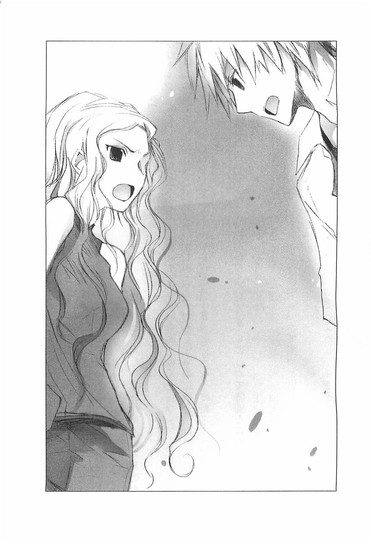

| [野村美月] 文学少女シリーズ06 | |
| 野村美月 | |
| (2015) | |
|
〝文学少女〟と月花を孕く水妖
野村美月
|
底本データ
一頁17行 一行39文字 段組１段
太字は底本ではゴシック体太字。
「 ◇ ◇ ◇」は底本では１２字下げて「◇ ◇ ◇」。
『悪い人にさらわれました。着替えと宿題を持って、今すぐ助け手に来てください』──そんな遠子からのＳＯＳで、夏休みを姫倉の別荘で〝おやつ〟を書いて過ごす羽目になった心葉。だが、そんな彼らに、八十年前起こった惨劇の影が忍び寄る。〝令嬢〟〝学生〟そして〝妖怪〟。役者は揃い舞台は整い、すべては再び崩壊に向かう。事態を仕組んだ麻貴の望みとは？自らの〝想像〟に心揺らす、〝文学少女〟の〝秘密〟とは──。夢のようなひと夏を描く、〝文学少女〟特別編！

目次
プロローグ 麻貴 蛍の宵・姫の語れる──
一章 さらったのは悪い人です──
二章 本を読む巫女──
三章 白雪あらわる──
四章 姫の事情──
五章 早すぎた客人・消えた恋人──
六章 緋色の誓い──
エピローグ 私は、きっと笑っています──
〝文学少女〟と月花を孕く水妖
野村美月
離ればなれになるとき、彼女はぼくに、心が切り裂かれそうな痛みと、小さな憎しみと、優しさを残していった。
彼女がなにを考えてその道を選んだのか、ぼくはとうとうわからず、喉が嗄れるほど泣くしかなかったし、彼女自身も、何故そんなに辛い選択をしなければならなかったのか明確な答えは出せなかったろう。
本当にああする必要があったのか、もっと優しい道を選ぶこともできたんじゃないか、そうすればぼくらは、あんな胸が潰れそうな哀しみを知らずにすんで、幸福な夢の中にいられたんじゃないか──なのに何故、あのウンディーネは優しい手でぼくを揺り動かし、目覚めさせたのか。
彼女が秘密を持っていたこと。
心に、花と月を抱きしめ守っていたこと。
それを、ぼくは長いあいだ、知らなかった。
プロローグ 麻貴 蛍の宵・姫の語れる
怒れる神を見た。
祖父の苛立ちの原因が、あたしにはわからなかった。
姫倉光圀はあらゆる情報を支配する者であり、望みのままに権勢を振るい、命令を下す者であり、尊大な絶対者であるはずなのに。
少なくともあたしにとって、祖父は逆らうことを許されない神だった。七十も半ばを過ぎているというのに、肉体も精神も衰える気配はまったくなく、何百年も前からこの世を支配し続け、この先も永遠に生き続けそうな、存在感を放っている。
なのにその祖父が、屈辱に顔を醜くゆがめ、片方しかない目を赤く血走らせ、怒りに肩を震わせている。
月の夜、池の畔で鯉に餌をやる祖父の手つきは乱暴で、八つ当たりしているように見えた。餌が投げ込まれるたび、月に照らされた水面が激しく波打ち、祖父の自慢の鯉も、飼い主の不機嫌を感じ、赤いひれを揺らめかせ妖しく逃げ惑った。
ひび割れた唇から、忌々しそうな呻きがこぼれるのを、あたしは松の木の後ろで息を潜め、聞いていた。
「......白雪め......。約束は......まだ続いているのか」
白雪？
それに、約束？
わけがわからないまま、胸の奥が暗い水面のように大きく揺れ動く。
祖父はそれきり無言で餌を投げ続け、あたしは皮膚が緊張でぴりぴりするのを感じながら、なるべく足音を立てないようにその場から離れた。
それは、あたしがもうじき十八歳になろうという夏の出来事だった。
数日後の夜、あたしは十八歳になり、祖父好みの派手なパーティーが、屋敷の庭で開催された。
華やかにライトアップされた広大な庭園を訪れた客のほとんどが、あたしよりずっと年上の社会人で、あたしの誕生日を祝うより、祖父のご機嫌伺いにやってきたことは明白だった。初対面の人間から儀礼的に、「お誕生日おめでとうございます」と言われて、笑顔を保ったまま返事をするのは鬱陶しい。向こうは、小娘に一回きり愛想を良くすれば義務は果たされるが、こちらはパーティーが終わるまでずっと「ありがとうございます」と繰り返し、愛嬌を振りまかなければならないのだから。
また、人が大勢集まれば、聞きたくもない会話も聞こえてくる。
たとえば、あたしの母が、夫と子供を捨てて実家のイギリスへ帰ってしまったこと。
そんな女が生んだ子供が、姫倉家の当主になるのはいかがなものか。
血統にこだわる姫倉光圀が、よく外国籍の一般家庭出身の女性と、一人息子の結婚を許したものだとか、いや向こうが悪女で、姫倉の跡取りをたぶらかして妊娠して、結婚を迫ったらしいとか。自分から出て行ったくせに、多額の慰謝料を要求したらしいとか。
よくもまぁ、何年も同じ話題が続くものだと呆れてしまう。
けど、それは思っても、顔に出してはいけないし、話も聞こえないふりをしなければならない。名家の令嬢らしく、なにものにも冒されず、揺るがず、高潔で華やかな笑みを浮かべていること。それが、祖父や周りの人間があたし──姫倉麻貴に望むこと。
だからあたしは、光沢のあるシルクのドレスに身を包み、この場にいる誰よりもあでやかに美しく微笑まなければならない。
「麻貴さんは、高校のオーケストラ部で、指揮をされているそうですね」
「ええ。祖父の希望で。姫倉の人間はオーケストラ部で指揮を務めるのが慣例なんです」
失礼にならない程度に受け答えしながら、あたしは退屈でうんざりしていた。
今、目の前に、シャンパングラスを片手にお行儀の良い笑みを浮かべて立っているのは、某グループの社長令息だった。
あたしより三つ年上の大学三年生で、姫倉より古い家系で華族の血を引く、毛並みの良いおぼっちゃま──祖父があてがった、あたしの未来の旦那だ。
別に恋愛に夢は持っていない。惚れてる男もいないし、結婚なんて男女の契約にすぎないから、こちらが望む条件に沿う相手であれば、誰でもかまわない。櫻井流人のように女たらしの浮ついた男は問題外だけど。
ただ、じいさんが血統的に劣る孫のために、申し分のない家系図を持つ御曹司を選んだのかと思うと、腹の奥が煮えくり返るような苛立ちを覚えた。
そんなに、あたしの中に流れる母の血が、気にくわないのかと──。
姫倉の血は、青く高貴でなければならないのかと──。
祖父はあたしの苛立ちなど意に介さぬ様子で、客にへこへこされている。
自分こそが今現在もなお姫倉の頂点に立つ人間なのだと誇示するように、椅子に座ったまま会場を睥睨している。誰が挨拶にやってきても、立ち上がることもしない。
若い頃、火事でダメにした左目には片側だけの眼鏡がかけられ、無機質なレンズが光っているけれど、むきだしの右目には火のような威厳がみなぎり、皺が刻まれた顔にも、意志と力があふれている。
和装の祖父の傍らに控えている女性は、祖父の秘書だ。年齢は三十代半ばと聞いているけど、もっと若く見える。祖父の愛人という噂だけど、実際はどうなのだろう。短く切った黒髪や、知的でナチュラルなメイク、飾り気のないパンツスーツは祖父の趣味にあっている。祖父は濃い化粧や派手なドレスの女性を、下品だと嫌っている。きっと女という性自体を軽蔑しているのだろう。
「スカートをはいた相手と、商談をする気にはなれない」
そんな台詞を堂々と言ってのける時代錯誤な人間だ。なので、祖父の近くに仕える女性は自然とスカートをはかなくなり、髪も短くなる。ひらひらした服を着たり、髪を明るい色に染めると、祖父が不機嫌になるからだ。
なので、あたしはずっと髪を伸ばしている。
アイルランド人とのハーフだった母譲りの髪は、波のようなウェーブがかかり、透きとおるような茶色で、日射しを浴びると金色の艶を帯びる。
この髪を見るとき、祖父は苦々しそうに眉をひそめる。
日本人らしくない。品がない。黒く染めたらどうか。
そんな小言を、祖父の気持ちを荒立てすぎないよう受け流しながら、ことさらその前で長い髪を揺らしてみせたのは、あたしにできるささやかな抵抗だった。
その祖父のほうへ、小太りの中年男が、もみ手をせんばかりに近づいてゆく。
客が意地悪くささやいた。
「おや、草壁の当主だ」
草壁は姫倉の親戚筋で、今の当主の二代前までは権勢を振るっていた。当時は祖父も若く、草壁の当主が祖父のお目付役を務めていたと聞いている。なのに孫の代になった今では、すっかり落ちぶれ、祖父の援助にすがってどうにか家を保っている有様だ。
草壁は、祖父の犬と呼ばれている。
あたしの父も同じだ。
仕事で海外にいる父は、一度は祖父に逆らって母と結婚したけれど、母が祖父にいびり倒されて姫倉から逃げ出したあとは、祖父に対する反抗心を根こそぎ奪われてしまった。もはや人生になんの望みもなく、自分の意志で考えることを拒否し、祖父の意のままに手足を動かす空虚な人形である自分を受け入れることで精神の安定を保っているのか、父の顔に強い感情が浮かぶことはなく、まったく精気を感じない。生きながら死んでいるようだ。
あたしも、父のように、草壁のように、いつか祖父に牙を抜かれてしまうのだろうか。
苛立ちすら感じなくなり、祖父の操る人形になりきり、鎖でがんじがらめに縛られたまま生きてゆくのだろうか。
そんな自分を想像するだけで、全身に水を浴びたように背筋がぞっとし、頭の芯が熱く震え出す。
冗談じゃないっ。あたしは父みたいにはならない。
あんな風にすべてを諦めたりしない。心まで縛られたくない。あんなの生きてるとは言わない。死んだほうがましだ。
姫倉であることに、祖父の孫であることに、火のような怒りと嫌悪が込み上げて来る。その火が喉のあたりで燻っていて、苛立ちが加速してゆく。
あたしが姫倉であることは、逃れようのない事実だ。
祖父の着物の襟元からのぞく青紫の痣と、あたしのうなじにある痣。
竜の末裔の証であると言われる鱗の形の痣が、あたしと祖父の繋がりを、息苦しいほど証明している。
その痣が、焼きゴテを押し当てられたかのように、熱を帯びた。
押し込められた叫びと喉を突き上げる痛みに、顔がこわばりそうになる。どうして、こんなときに笑わなければならないのだろう。
勝手な噂話に興じている連中も、目の前で呑気に話を続けている世間知らずのボンボンも、みんなくだらない。今すぐ全員消え失せればいい。いっそ、洪水が世界を飲み込み、なにもかも滅びてしまえばいい！そうしたら、心の底から大声で笑ってやる。
荒れ狂う黒い水が、心から溢れそうになったとき、庭園の照明が切り替わった。
噂話が止み、あちこちから溜息がこぼれる。
「まぁ......蛍」
心から、黒い波が、すーっと引いていった。
暗い庭園に、淡い光が揺れている。
まるで芝生から湧き上がってくるかのように、ふわりふわりと下から上へ浮いてゆく、小さな愛らしい光。
松や楓の枝の先にも、橋を渡した池の上にも、白いテーブルクロスにも、招待客の髪にも肩にも、可憐な明かりがともり、儚く揺らめいている。
本物の蛍ではない。蛍に似せた光を使った演出だ。
けれど、白く輝く清浄な光の粒子は、会場を清め、夢幻の空間へと変え、本物の蛍の群れの中に立っているような夢心地へと導いた。
惚けたように立ちつくすあたしは、先月亡くなったばかりの、あの少女のことを思い出さずにいられなかった。
雨宮蛍──。
嵐のように愛し、最後の最後に稲妻のような鮮烈な閃きを見せて、微笑みながら去っていった少女。
彼女が亡くなるまでのあいだ、あたしはその物語を見つめ続けた。あたしには決して持ちえない感情を胸に抱きしめているあの子に、心のどこかで憧れていた。救いのない結末に愕然としながら、想いを貫き通したあの子に、感嘆し羨望せずにいられなかった。
あたしが焦がれ続け求め続けた、〝縛られない魂〟。
それをあの内気な優しい少女は、見せてくれた。
運命に翻弄され、愛と憎しみに囚われ、縛られているように見えながらも、蛍の心は最後まで自由だった。あらゆる束縛や禁忌を振り切り、自分の意志で愛する男を選び、彼の腕の中で目を閉じた。
蛍のことを思い出すたび、あれ以外の幸せは、あの子にはなかったのだと思う。
後悔していないかと尋ねたら、儚く微笑みながら、こくりとうなずいただろう。
蛍は一人の男を滅びるほどに愛し、自由に生き、自由に死んだ。
それに比べてあたしは......。
一度引いた苛立ちがまた、胸の奥で燻りはじめる。
祖父が理事長を務める学園で〝姫〟と呼ばれ、様々な特権を与えられながら、本当のあたしはまったく自由ではない。
あたしが行使できるのは、祖父の力であって、あたしの力ではない。絵を描きたかったのに美術部に入ることを禁じられ、学内にアトリエを与えられた代わりに、オーケストラ部に入り指揮者となることを約束させられた。
こんなに息苦しくて仕方がないのに、祖父にだけは逆らえなかった。祖父に反旗を翻した父がどうなったかを、胸が潰れそうな怒りと絶望とともに間近で見てきた。
では、これからも、あたしは祖父の意のままに〝姫倉〟であり続けるのか？
蛍のように、誰かを愛することもなく。祖父の選んだ男と結婚し、妻という枷を増やして、一生〝姫倉〟として生きるのか？
祖父が亡くなれば自由になれるかもしれない。けれど、それはいつ？十年先？二十年先？今のあたしには途方もなく遠い未来に思えるし、あと百年だってあの怪物は生き続けそうじゃないか。
そのあいだ、祖父の言いなりの人形として過ごすの？
嫌だ！
叫びが、喉を突き破りそうになった。
夏のあたたかな闇の中に揺らめく偽の蛍の光が、心の内側に忍び込んできて、押さえつけていた扉を軋ませ、開け放とうとする。
のっぺりした顔の御曹司が、来週からニースの別荘へ行くので麻貴さんも一緒にどうだろうと誘っている。抑揚の乏しいお上品な声に、鳥肌が立つほどの嫌悪を覚える。
ご挨拶をしなければならないお客様がおりますのでと言い訳し、逃げるように離れた。
そのまま人気のないほうへ、足早に進んでゆく。
偽の蛍が、あたしの頬で、肩で、淡く光っている。
胸で揺れ続ける波はおさまらない。頭が殴られたように痛み、うなじの痣がじくじくと燃え上がる。
本物の蛍は、あたしの手の触れられない遠い場所へ去ってしまった。もう、内気な優しい微笑みを見ることもできない。強く激しい恋を見守ることもできない。
あたしは、一人でここにいる。
蛍に、しつこくまとわりついていたあの櫻井流人も、こんな風に、心臓が半分に裂けてしまったような、喪失感や焦燥を味わっているのだろうか。
蛍に刺された流人を、姫倉の息のかかった病院へ連れて行き、押し込めるようにして治療をするあいだ、流人は野良犬みたいな荒々しい形相で、「オレが蛍を守らなきゃならないんだ。蛍にそう約束したんだ、ここから出せ！」と喚いていた。
いいや、あんな三股も四股もかけているいい加減な男、きっと今頃けろっとして、他の女を口説いているだろう。なにより、あたしと違って、彼は自由なのだから。
大きな手に胸を鷲づかみされているように、苦しい。
祖父が選んだ男と結婚するなんて、嫌だ。
ニースへなんか行くものか。あたしは今、自由になりたい。もう一秒だって待てない。
けど、あたしになにができる？ 姫倉光圀の孫ではない、ただの姫倉麻貴に──。
あたしは撃たれたように立ち止まった。
池に月が浮かんでいて、暗い水面に、鬼のようにこわばったあたしの顔が映っている。
ここで、祖父は怒りをみなぎらせ、餌を投げつけていた......。
水底で、赤いヒレが揺れている。あたしは、それをじっと見つめた。
「麻貴さん」
どのくらい立ちつくしていたのだろう。知的な感じのするやわらかな声で、名前を呼ばれた。
振り返ると、仕立ての良いスーツを着た長身の男が立っていた。祖父の部下の高見沢だ。前は祖父の秘書だったが、今はあたしのお目付役を兼ね、学園の仕事をしている。
「どうしたんですか。気分でも悪いのですか」
「いいえ。一人になりたかったのよ」
「パーティーの主役が不在なのは、感心しませんね」
「すぐ戻るわ」
平静を装って答えながら、あたしは頭の奥で考えていた。
高見沢がお目付役になってから日は浅い。けれど、彼がおだやかな人当たりと冷静さを持つ、優秀な人材であることはわかっている。
そんな彼が、何故祖父の秘書をはずされ、学園の経営に回されたのか。姫倉の後継者のお目付役とはいっても、あたしはまだ高校生で、祖父のあとには父もいる。
あたしが姫倉の当主になるのは、まだずっと先で、万一祖父か父が子供を作り、それが男の子だったら──祖父はともかく、父はまだ若いので可能性はじゅうぶんある。そうしたら、当主はその子が引き継ぐことになるだろう。
あたしの立場なんてそんなあやふやなものだし、そのあたしにつけられた高見沢も実質お嬢様の世話係と変わらない。そのことを、彼自身はどう思っているのだろう？
おだやかそうに見えても、内心はそうでないかもしれない。ならば──。
祖父と同じ首筋の痣が、またちりりと熱くなる。
無敵艦隊に立ち向かうエリザベスになるためには、ウォルシンガムやセシルや、ドレークがいる。
あたしは迷いや怯えを押しやり、高見沢に向かって勇敢な笑みを浮かべた。
「話があるのだけど」
一章 さらったのは悪い人です
僕、そのものが一条の物語になった訳だ。
水辺の賤が屋で、友に向かってそう語った男がいた。
ぼくは、物語の登場人物になるなんて面倒くさいことはごめんだし、どうしても避けられないなら、せめて淡々とした日常が続く、ぬるくて平和な物語の脇役でありたかった。
高校二年生の夏休みは、そんな風に、ぼんやりとおだやかに過ぎてゆくはずだった。
なのに八月の半ば過ぎ。ぼくは何故か、木々が生い茂る夕暮れの山道に、困惑の表情で立っていた。
「ここから先は、車は入れませんので、お一人でいらしてください」
「あの」
「一本道ですから、迷うことはないかと思います」
「高見沢さん。ぼくやっぱり家へ......」
帰りたい。
てゆーか、なんでぼくが、東京から車で何時間もかかるような北陸の山奥に連れてこられなきゃならないんだ。
高見沢さんはリムジンの運転席から、やわらかくぼくの言葉を遮った。
「あちらへ着いたら、東京から来たことを伝えて、名前と学校名を伝えてください」
「どうして、校名がいるんですか」
「ただの余興です。そのあと、このようにおっしゃってください」
高見沢さんが口にした台詞は、さらに謎めいていた。
「覚えましたか？ 大切なことですので、間違いなくそのとおりに伝えてください」
「余興ってなんですか？ そもそもどうしてぼくが──」
「申し訳ございません。私はもう戻らなければなりませんので、これで失礼いたします。この辺は夜になると真っ暗で危険ですので、急いでください」
おだやかに微笑むと、高見沢さんは行ってしまった。
ぼくは着替えのつまった旅行鞄を片手に、小さくなってゆくリムジンを茫然と見送ったのだった。
家に帰りたくても道がわからない。今立っている細い道の他は、見渡すかぎり木や草が生えているばかりで、駅もバス停も見あたらない。日は急速に翳り、風景が黄昏の色に染まってゆく。山の中だからなのか、空気もひんやりしている。
ぼくは仕方なく舗装のされていない土の道を、歩きはじめた。
「絶対、文句を言ってやる」
火照った体から汗が吹き出てくる。
やがて辿り着いたのは、ポーの小説に出てくるアッシャー家みたいに、今にも崩壊してしまいそうな、古色蒼然とした洋館だった。
時刻は奇しくも黄昏の逢魔が時で、ばかでかい夕日が、赤黒い光をにじませ、怪奇じみた建物の向こうへ沈んでゆく。
ポーの小説と違って周りに崖も沼もないけれど、亡霊の群れみたいな黒々とした木々に囲まれ、壁にびっしり蔦が這っている。扉は彫り物がしてあり、黒くくすんでいる。
アッシャー家を見た瞬間主人公を襲った、堪えがたい憂愁の情や、魂のまったくの沈鬱をしみじみ感じながら、厳めしい鉄の門の前に立ち、柵のあいだから庭を眺めた。
すると、小さな女の子が、石の祠の前にひざまずいて手をあわせていた。
小学五、六年生くらいだろうか......？
髪を二つにわけて結い、着物の上に白いエプロンをつけている。頭にメイドさんの白いカチューシャが載っかっているけど、この屋敷で働いているのか？こんな小さな子が？いつの時代だ？
古い屋敷に、曰くありげな石の祠。大正時代のカフェから抜け出てきたような姿で、目を閉じ熱心に祈っている女の子。黄昏のもやの中に浮かぶ異質な光景に、夢でも見ているような危うげな感覚にとらわれたとき。
黒い塊がシュッと風を切って、ぼくのほうへ駆けてきた。
闇を切り取ったような真っ黒なシェパード犬が、柵から鼻を突き出し、もの凄い勢いで吠えかかってくる。
女の子も顔を上げて、ぼくを見た。
その目が丸く見開かれる。
高見沢さんに言われたことを思い出し、ぼくは急いで挨拶した。
「すみません、ぼくは東京から来た井上心葉といいます。聖条学園の二年生です。こちらに、ぼくが探しているものがあると聞いて、うかがったのですが、ご当主はいらっしゃいますか」
「！」
少女の顔に驚きと恐怖が、くっきりと浮かぶのを見て、ぼくはぎょっとした。
まるでお化けでも見る目でぼくを見つめ、叫びそうなのをこらえるように唇を小さく震わせている。
次の瞬間、背中を向けて、野うさぎのように走り出し、あっという間に建物の中に消えてしまった。
「あ！ きみ、待って！」
ぼくは鉄柵を握りしめ、身を乗り出した。
とたんに、犬にわうわうと吠えられ、足に噛みつかれそうになり、慌てて跳びすさる。
困った！ どうしよう。怪しい人だと思われたんじゃ。高見沢さんに教わったとおりに言っただけなのに。
犬は牙をむき出しにして吠えている。どうしてぼくがこんな目にあうんだ。
途方に暮れていたとき、館の扉が勢いよく開き、中からひらひらした白いワンピースを着た遠子先輩が飛び出してきた。
あでやかな夕日の中、目を輝かせて駆けてくる。いつもは三つ編みにしている髪をほどき、白いレースのリボンで結んでいて、ゆるやかなさざなみを描く黒髪が、細い肩で揺れている。
「来てくれたのね～～～～！ 心葉くん！ 待ってたのよ！」
遠子先輩は息をはずませ、門に両手をかけた。
ガシャン！ と音がして、鉄の門が開く。
犬が猛り狂ったように、飛びかかってくる。
「わっ！」
「ダメ、バロンっ。心葉くんはお客様よ」
めっと、遠子先輩が犬を引きはがす。犬は不満そうに喉の奥でぐるぐると鳴き、ぼくを睨んだ。
「よかったぁ。きっと心葉くんは、来てくれるって信じてたわ」
ぼくの腕をつかみ、嬉しそうに玄関のほうへ引っ張ってゆく。見上げてくる笑顔は生き生きとして可憐で、髪型と服装のせいもあって、どこぞのご令嬢のようではあったのだけど。
はしゃぐ〝文学少女〟に、ぼくは思いきり冷たく答えた。
「迎えの人が家に来て、無理矢理連れてこられたんです」
「え？ え？ わたしの電報を読んで、駆けつけたんじゃないの？それに、久しぶりの再会なのに、どうしてそんなにぶすっとしてるの？尊敬する先輩に会えて、嬉しくないの？」
そんなはずないわよね、感動で今にも夕日に向かって叫び出しそうよね、と確認するように腕をぐいぐい引っ張る。
ぼくは、いっそう苦い顔になった。
「ええ、電報は届きましたよ」
しかも、お祝い用の押し花電報で。
お盆が明け、夏休みも後半にさしかかった平和な午前。ぼくはクーラーのきいた自宅のリビングで、小学生の妹の相手をして、のんびり過ごしていた。
ああ、無茶なことばかり言う先輩がいないと平和だなぁ......。
しみじみ感じていたら、
「井上さーん、電報でーす」
と玄関で声がした。
家事で忙しいお母さんの代わりに受けとると、鮮やかな押し花の表紙のついた電報の宛名は、ぼくの名前だった。
誕生日......まだなんだけど。
怪しみながら開いたとたん、頭痛がした。
『悪い人にさらわれました。
一週間分の着替えと宿題を持って、今すぐ助けに来てください。
ついでに立ちくらみがして、よろめいた。
遠子先輩......。受験生にとって夏休みは大事な時期だというのに何をやっているんだ。
だいたい、どこにいるのか住所が書いてないし、どうやって助けに行けっていうんだ。
それを指摘すると、遠子先輩は、
「あら？ そうだったかしら？」
と、しれっとした声で言った。
「けど、文芸部の絆があれば、そのくらい心で伝わるでしょう」
「文芸部はエスパー同好会ではないので無理です。それに、住所が書いてあっても無視するつもりでした」
「ひどいっ」
遠子先輩が、なんて恩知らずの冷血漢なのかという批難の目を、ぼくに向ける。
もちろん、批難されるいわれはこれっぽっちもない。押し花電報で助けに来てほしいと言われて、助けに行くほうがどうかしている。まして、これまで遠子先輩のせいで巻き込まれた騒動のあれこれを思い返せば、家で妹の宿題の工作の手伝いをしているほうが正解だ。
なのに何故、ぼくが旅行鞄をさげて、こんな山奥の怪しい屋敷へ来てしまったのかというと、電報を受けとった二十分後に、迎えの車がやってきたからである。
陽炎が立ちのぼるほどの暑さの中、仕立てのよさげなスーツを汗一つかかず着こなした高見沢さんは、
「息子さんは責任をもってお預かりします」
と、実におだやかで人当たりのよい笑顔で、お母さんに挨拶をした。
すっかり懐柔されたお母さんは、
「お兄ちゃんにも、泊まりがけで遊びに行くようなお友達ができたのね」
と、嬉しそうに鞄に荷物をつめ、ぼくを送り出した。
ぼくはろくに抵抗もできず、ぴかぴかのリムジンに乗せられたのだった。
「どうして、いつもぼくを巻き込むんですか。夏休みくらい静かに過ごさせてください」
憤慨するぼくを、遠子先輩が涙目で睨む。
「ひどい、ひどいわ。文芸部には心葉くんしか後輩がいないんだから、仕方ないじゃない」
そう、聖条学園の文芸部には、ぼくと遠子先輩の二人しか部員がいない。なのに部として存続しているのがおかしいのだ。いや、もとはといえば遠子先輩に強引に入部させられ、今日まで退部せずに来てしまったのが間違いだった。
そこへ麻貴先輩が現れた。
華やかな長い茶色の髪を無造作に結び、光沢のあるゆったりしたシャツにパンツをはき、その上から作業用のシンプルなエプロンをつけた格好で、にやにやしている。
「いらっしゃい、心葉くん。歓迎するわ」
「されても困るんですけど」
学園の理事長の孫で、他の生徒から〝姫〟と呼ばれている姫倉麻貴先輩は、ぼくの嫌味を平然と受け流し、わざとらしく肩をすくめてみせた。
「あら、だって遠子が、『心葉くんを呼んでくれなきゃ帰る～』って駄々をこねるんですもの。遠子を心から愛しているあたしとしては、要望を聞き入れないわけにいかないじゃない」
遠子先輩が真っ赤になって反論する。
「愛してたら、拉致監禁していいの？毎日恥ずかしい格好させて、いやらしく眺め回して」
「それは、これまでさんざん遠子に貢いできた情報のお返しよ。ヌードモデルだけは死んでも嫌って言うから、分割払いでオマケしてあげたのに。それとも今からでも一括返済する？着てるものを全部脱いで、ちょっと、じっとしていてくれたら、あっという間に借金ゼロよ」
「う......」
声をつまらせる遠子先輩の肩を、麻貴先輩が意地悪く抱き寄せる。
「さ、まだ今日の支払いが残っているわよ。心葉くんを呼んであげたんだから、しっかり仕事してね」
「やっ、麻貴、はなして。心葉くん、助けて」
「はいはい、観念しなさい。あ、紗代。心葉くんを部屋に案内してあげて。大事なお客様だから、失礼のないようにね」
無駄な抵抗を続ける遠子先輩を引きずって、麻貴先輩は廊下の奥へ消えてしまった。
「......お荷物をどうぞ。お部屋へご案内いたします」
横からすっと手がのびてきて、ぼくの鞄をつかんだ。
「きみ、さっきの」
庭で見た小さいメイドさんだ。冷たい表情で鞄をとりあげると、さっさと歩き出す。
「えっと、靴は？」
「脱がなくて結構です」
「荷物は自分で持つからいいよ」
「これが、仕事ですから」
幼い外見に反して、口調が硬い。というか、嫌われているような......。
体を縮めて、あとについてゆく。
外と同様、中も古くて暗い。天井が高く、正面に赤い絨毯を敷いた階段がある。それをのぼってゆく途中、ふと視線を感じて振り返ると、いくつもの視線とぶつかった。
屋敷で働いている人達だろうか。執事風の黒服の壮年男性に、着物にエプロンの家政婦風の中年女性、作業着姿の庭師風の老人、コックコートを着た青年の四人が、ドアの向こう側や、廊下の端から、警戒するように、ぼくを見上げている。
ぎょっとして足を止めると、向こうも慌てたように「ようこそおいでくださいました」「いらっしゃいませ」と頭を下げる。みんな顔色が悪く、あきらかに緊張している。
なにか理由があるのだろうか。
背中がざわざわするような落ち着かない気持ちのまま、二階の部屋に案内された。
「このお部屋を使ってください」
やっぱりそっけない。顔をこわばらせたまま、にこりともしない。
「あの、きみ、名前は」
「魚谷です」
「さっき麻貴先輩は、サヨって」
「紗代は下の名前です。それがなにか？」
あたしの名前が、あなたに関係あるのですかといわんばかりの冷たい目を向けてくる。
「う、ううん。魚谷さんは、ずっとこの家で働いているの」
「夏休みのあいだの、バイトです」
「そう。小さいのに偉いね」
「中学生ですから、小さくありません」
「えっ。中学生!? 何年生!?」
「一年生です」
てっきり小学生だと思ったのに！
いやでも、中一でメイドをしているのも変じゃないか？大正時代じゃあるまいし。よほど人手が足りないんだろうか。廊下で見た分には、無駄に人数が多いように思えるのだけど......。それとも、姫倉家のような富豪の別荘には、あのくらいの数の使用人が必要なのだろうか。
「魚谷さん、さっき、祠の前でお祈りをしてたよね」
「......それがなにか」
声に棘が混じる。
「あのとき、ぼくを見て驚いてたけど、どうして？それに他の人達も」
「......東京から来た学生さんが、珍しかっただけです。ここは田舎ですから。みんなもきっと同じです」
本当にそんな理由で？ 納得がいかない。けど、魚谷さんはすっと顔をそむけると、
「お夕飯まで、ゆっくりなさっていてください」
ぶっきらぼうに言って、出ていってしまった。
......魚谷さんて、クラスメイトの琴吹さんを思い出す。言葉がそっけないところが、なんとなく。てゆーことは、ぼくはやっぱり魚谷さんに嫌われてるのだろうか......。
そんなことを考えながら荷物を整理していたら、遠子先輩がふらふらした足どりで入ってきた。
「心葉くぅぅぅん、おなかすいた～～～～～～～」
ベッドに顔を埋めてへたり込み、砂漠で行き倒れたラクダのような様子で訴える。
「なにか書いて～、今すぐ書いて～。部室でアベ＝プレヴォーの『マノン＝レスコー』を食べようとしていたら、いきなり麻貴が入ってきて、さらわれちゃったのよぉ。
本を床に落として、持ってこれなかったの。あぁぁぁぁ、妖精のように気まぐれで愛らしいマノンと、純情な騎士デ＝グリュウの恋物語が～～～～。浮気で天然なマノンの小悪魔っぷりが、呆れちゃうけど可愛いの。マノンに振り回されっぱなしのグリュウも、簡単に犯罪に手を染めちゃう考えなしのおバカさんだけど、はらはらしちゃって放っておけないの。転落してゆく恋人達の物語のはずなのに、甘く熟れたイチジクに、舌がカァッと燃え上がるほど洋酒を振りかけて煮て、ビターなチョコレートアイスを添えていただく感じなのっ。イチジクのぐじゅぐじゅした果肉が舌にからみついて、目眩がするほど美味しいのよぉっ。
なのに、なのに、どうしてあのとき手をはなしてしまったのかしら。悔しくて夢にまで出てきたわ。ページを千切って口に入れようとすると、キャンバスみたいに大きく分厚くなって、破けなくなるのよ」
鞄に入っていたのが森鴎外の『高瀬舟』だけで、食べかけで半分くらいしか残っていなかったので、ここへ来てから朝昼晩と、大事に食べて餓えを凌いでいたのだとか、そばがきをちびちび囓っている気分だったとか、しくしく泣き出す遠子先輩に急かされるまま、ベッドに腰かけ、五十枚綴りの原稿用紙を膝に載せ、部室でいつも書かされている三題噺を、ＨＢのシャーペンでしたためてゆく。
......ぼくが呼ばれたのは、このためか。
遠子先輩は、物語を食べる妖怪だ。
本のページを千切り、嬉しそうに蘊蓄を垂れながらパリパリ食べる。
本人は「妖怪じゃありません！ ただの〝文学少女〟です」と主張しているけれど、本を食べる様子はどう見ても妖怪だ。
「そんなにおなかがすいてたなら、自分でなんか書いて食えば良かったんですよ」
シャーペンを走らせながら冷たく言うと、横でおなかを抱えてへばっていた遠子先輩は、情けない声を出した。
「あぅ......。メルヴィルの『白鯨』から、エイハブ船長とマッコウクジラのモービィ＝ディックの壮絶な戦いのシーンを書いて食べたのよ。けどなんか違うんだも～～～ん。鯨のステーキにかぶりつくつもりだったのに、レトルトカレーに鯨肉の切れっ端が浮かんでるみたいな味になっちゃったんだもんっ。それってエイハブ船長に対する冒涜よ」
「書いてある文章が同じなら、同じ味のはずでしょう」
「違うもん。一流レストランのフレンチだって、クラッシック音楽が流れる店内で、給仕さんが綺麗なお皿に載せて運んでくれたのをいただくのと、真夏にクーラーの壊れたボロアパートで、ラップをお皿代わりにいただくのとじゃ、別物だもの」
食べることに関して妥協を許さないのは、長所といえるのか単なる我が儘なのか。
ぼくが来なかったら、どうするつもりだったんだ。
「心葉くん......早く。おなかと背中がくっつきそう」
弱々しい声のあとから、きゅるきゅるとおなかが鳴る音がする。
ぼくは書き上げたばかりの原稿用紙を一枚はずして、差し出した。
「まだ途中ですけど、どうぞ。お題は適当に選んどきましたから。どんな味になっても文句を言わないでくださいよ」
「ありがと～～～～～」
遠子先輩が両手で受けとり、ベッドの上にぴょこんと正座し、むさぼるように読みながら、端を破いて口へ入れる。
「お、美味し～～～～」
目を閉じ、じぃんとした顔でつぶやき、また夢中でパリパリやりはじめる。
「あさりとベーコンがたっぷり入ったクラムチャウダーみたい。甘いミルクの味がするわ。誘拐された女の子が、犯人と仲良くなって、生き別れのお母さんに会いにいくのね。二人で気球に乗るのね。あ～胃壁にほかほか染みこんでいく感じ～」
まぁ、空きっ腹に、いきなり激辛料理はハードすぎだし......。
それでも、二枚目を書きながら淡々とつぶやいた。
「お題は〝誘拐〟と〝気球〟と──〝崩壊〟ですから」
遠子先輩が飲み込もうとした紙を喉につまらせ、咳き込む。
「そんなっ、心葉くん。せっかくの美味しいスープを、辛くしたり苦くしたりするなんて！このままの味付けが、わたしは好きよ」
どんなとんでもない味に変貌するのかと恐怖に震え上がるのを無視して、さらさら書き進める。
本当は、誘拐で金儲けを企んでいた犯人の悪い心が〝崩壊〟するという、甘っちょろいオチなのだけど、いきなりこんな山奥に呼びつけられたお返しはしっかりしたい。
眉をハの字にしてびくびくしているのを見て、少しすっとする。
屋敷の人達が挙動不審なのは気になるけれど、下手に刺激してまた遠子先輩がおかしなことに首を突っ込むとヤブヘビなので、黙っていよう......。
翌日、遠子先輩はフランス人形のように、大量のレースに埋もれていた。
髪は今日もほどいて垂らしている。襟元にレース、腕にレース、スカートにレース、頭にかぶったボンネットまでレースとフリルまみれだ。
「ほら遠子。心葉くんが一緒なんだから、もっと愛想良くして」
椅子の背を抱えてぶすっとしている遠子先輩を、キャンバスの向こうから麻貴先輩がからかう。
ぼくは呆れながら、窓際で二人のやりとりを聞いていた。
「帽子が重くて頭痛がするのよ。コルセットも締めつけすぎよ」
「じゃあ心葉くんに、背中の紐をゆるめてもらったら？なんなら、そのまま全部脱がせてもらってもかまわないわよ」
「な、なんてこと言うの！ わたしは麻貴と違って淑やかで身持ちの堅い文学少女なんですからね」
「おやおや、心葉くんの前でストリップをはじめたのは、どこの文学少女さんだったかしら」
以前、情報と引き替えに、かなり際どいところまで脱いだことを持ち出し、にやにやする。
「わざわざ心葉くんを連れてくるなんて、そんなにぺたんこの胸を見せたかったのかしらって、驚いていたのよ」
確かに......スリップとブラに包まれた遠子先輩の胸は、哀しいほどに真っ平らだった。
「む、胸はどうでもいいでしょう！ 自分がちょっと大きいからって、エバらないでちょうだい。それに、心葉くんに同席してもらったのは、一人で脱いだらなにをされるかわからなかったからよっ」
「そうね、二人きりだったら、理性が飛んで襲いかかってたかも」
「ほら、本音が出たわねっ。冗談じゃないわ、わたしはノーマルよ、やらしい目で見る人に、裸なんか見せられません」
「残念。下心を隠して接近すべきだったわね」
「無理よ。入学式ではじめて目があったときから、視線がねちこかったわ」
「それは一目で恋をしたからよ。ああ、この子の制服をはぎとって、ありのままの姿を描きつくしたいって」
「会ってすぐに、そーゆーこと考える女子高生って間違ってるわ！可憐じゃないわ！恋じゃなくて、変よ！変態よ！」
頭が痛くなってきて、ぼくは立ち上がった。
「心葉くん、どこへ行くの？ ここにいて」
「ぼく、関係ありませんから」
このまま話を聞いていたら、女性に対するイメージがゆがみそうだ。
「やだっ、心葉くん。わたしをこの変態と二人きりにしないで～～～～」
遠子先輩の叫びを背中に聞きながら、部屋をあとにしたのだった。
やれやれ。
軽い疲労を覚えつつ階段を降り、庭へ出る。芝生も木の枝も伸び放題で、花壇に雑草が生えている。あまり手入れがされていないようだ......。どうして麻貴先輩は、快適とはいいがたいこの別荘に滞在しているのだろう。麻貴先輩の家なら、高級ホテルで豪遊だってできるだろうに。そもそも、高見沢さんの言動からして不自然だったし......。
昨日、魚谷さんが祈っていた石の祠のほうへ行ってみる。この祠も、西洋風の屋敷に合っていない。なにを祀っているのだろう。
あれ？
背中に違和感を覚えて振り返る。誰もいない。
けどざわざわするような感じが消えず、今出てきた建物をまじまじと眺めると奇妙なことに気づいた。
屋敷の右半分の屋根や壁の色あいや窓枠が、左半分と比べて微妙に違っているのだ。
昨日は薄暗かったのでわからなかったけど。まるで左右、違うボタンを飾った服のように、アンバランスだ。
どうしてだろう......？
いきなり犬が走ってきて、ばうばうと吠えた。
うわっ、また出た！ バロンという名のシェパードは、番犬として庭で放し飼いにされているらしい。いくら訓練されているとはいえ、こんな大きな犬、危ないじゃないか。
バロンは黒々とした目でぼくを見上げ、激しく吠え立てている。今にも飛びかかってきそうで、ぼくは慌てて退散した。建物の裏手にある物置のあたりをうろうろしていたら、奇妙な唄が聞こえた。
向うの小沢に蛇が立って、
八幡長者の、おと娘、
よくも立ったり、巧んだり。
首に雫の珠を飾げ、
足には黄金の靴を穿き、
ああよべ、こうよべといいながら、
山くれ野くれ行ったれば............
なんだ、この唄は......。
物置の裏をのぞくと、魚谷さんが大きな木に寄りかかり座っていた。
色あせた緋色の糸を巻きつけた古い毬を、赤ん坊のように大事そうに胸に抱き、目を閉じ、唇をかすかに動かしている。
向うの小沢に蛇が立って、
蛇が立って、
差し交わす木の枝が、小さな顔に暗い影を落としている。
声も、すすり泣くように寂しげだ。
去るに去れず立っていると、魚谷さんはぼくに気づき、緋色の毬を強く抱き直し、冷たい顔で睨んできた。
「休憩中ですが、なにか？」
「ごめん、バロンに吠えられてこっちへ来たら、声が聞こえたから......」
すると魚谷さんは、ぴくりとし、咎めるように言った。
「外へ出ようとしたんですか？」
「まぁ......散歩でもしようかなと......」
「やめたほうがいいです」
「へ」
「外は、池があって危ないですから」
「池？」
何故、急に池が出てくるのかと困惑するぼくを、刺すような目で見つめ、魚谷さんが言葉を続ける。
「そうです。とっても深くて、沈んだら水草にからまって、なかなか浮かび上がってこれません。池で亡くなった人もいるんです。だから、お屋敷にずっといてください」
何故こんなに、張りつめた険しい顔をしているのだろう。まるで、外へ出たら必ず池に落ちると警告しているみたいに──。
背中が急に冷たくなり、汗がにじんできた。
「わかった。風が出てきたから、部屋へ戻るよ」
そう告げると、魚谷さんはすっと視線をそらした。
「あとでお茶をお持ちします」
「ありがとう。冷たいのがいいな」
会釈して去る魚谷さんを、突き刺さるような夏の陽を浴びながら見送る。胸に抱いた緋色の毬が、死者を迎える彼岸花のように見えた。
◇ ◇ ◇
はじめて姿を見たとき、花のような人だと思った。
涼しい風が、さらさらした髪の毛の先とスカートの裾をやわらかく揺らしていて、彼女を取り巻く空気だけ、おだやかに優しく感じられて、周囲と全然違って見えた。
あのとき、ぼくはどれくらいの時間、彼女に見とれていたのだろう。
まるで時間が止まっているみたいに立ちつくして。
彼女が長い睫毛をそっと上げて、目と目があったとき、心臓が止まりそうになった。
彼女の頬がほんのりと朱色に染まり、そのあとすぐに優しく笑み崩れるのを、不思議な夢の中にいるような気持ちで見つめていた。
きっと、あのときからずっと、夢を見続けていたんだ。
◇ ◇ ◇
やっぱりこの屋敷は、変じゃないか......？
一人で部屋にこもり、遠子先輩の昼食の三題噺を書きながら、あれこれ思案しているうちに、だいぶ時間が経っていた。
正午を回った頃、遠子先輩がふくれっつらで現れた。
「ひどいわ、心葉くん。先輩を見捨てるなんて。わたしがあのあと、麻貴にどれだけセクハラされたと思うの。恨んでやる～」
「それ、本当に妖怪みたいですよ」
「うっ......よ、妖怪じゃないもん」
すねたものの、三題噺を差し出すと、とたんに機嫌が直り、嬉しそうに食べはじめる。
「美味しい～。揚げたてのコロッケのサンドみたいな味～。お題は、〝らくだ〟〝祠〟〝夏休み〟ね。可愛いお話。パンも、軽くトーストしてあってカリカリね。妖怪って言ったこと、許してあげる。やっぱり心葉くんが来てくれてよかった～」
まったく、調子がいいんだからなぁ。
「んぐぐ、早く食べ終わらないと、麻貴が食事に呼びに来ちゃう」
「あとでゆっくり食べたほうが、消化に良かったんじゃないですか」
「だって、我慢できなかったんですもの」
最後の一欠片を慌ただしく飲み込み、遠子先輩は晴れやかに笑った。
「明日は麻貴が出かけるから、モデルはお休みなの。山の向こうは、ここより開けていて、観光地になっているんですって。ねぇ、心葉くん、一緒に行ってみない？」
外へ出ないでくださいと、魚谷さんに言われたことが、冷たい表情と一緒に頭をかすめた。
けど、断ったら遠子先輩がすねるだろうし......。
池へ近づかなければ、いいのかな。
そんなわけで、翌日ぼくらは、バロンの食事時を狙って屋敷の門を抜け、山道を歩いて、こぢんまりとした町へ辿り着いたのだった。
こちらは駅もバス停もあって、通りにお土産屋さんが並んでいる。
「わぁ、本屋さんよ！」
遠子先輩が、旅先で美味しい団子屋さんを発見したような顔で、走ってゆく。
清楚な白いワンピースを着て、リボンのついたサンダルをはいている。髪はいつも通り三つ編みだ。遠子先輩ははじめのうち、「外出の時は、制服を着ないといけないのよ」と頬をふくらませていた。服は全て麻貴先輩が用意したらしい。「クローゼットの中で、これが一番シンプルなの......」とぼやいていた。
けど、細くて色白の遠子先輩に、避暑地のお嬢様風の装いは似合っていた。薄い布地と長い三つ編みを揺らして歩く古風な美少女を、町の人達が感心したように見ている。隣を歩くぼくは、自分が注目されているわけではないのに、えらくくすぐったかった。
遠子先輩は、他人から見られていることにはてんで無頓着で、食欲に満ちた顔で本屋へ突入した。
「見て、トーマス＝マンの『トニオ＝クレーゲル』よ。トーマス＝マンは、一八七五年六月六日生まれのドイツの作家よ。『ヴェニスに死す』や『魔の山』でも知られているわね。『トニオ＝クレーゲル』は彼の代表作のひとつで、自身の芸術家としての葛藤がモチーフになっているの。
主人公のトニオは、同級生のハンスや、金髪の美少女インゲに憧れるけれど、その想いは届かないのよ。ずっしりと重いベイクドタイプのチーズケーキのように、酸味のきいた濃厚な味が、舌の上にざらりと広がり、ゆっくりとろけるの。レモンと洋酒の香りがほのかに漂って、哲学的だけど爽やかで、少しだけ飲み込むのが苦しくもあるのよ」
本をめくりながら、今にも破いて口に入れたそうに、蘊蓄を垂れる。
「ぅう、ゲーテの『ヘルマンとドロテーア』も、ノヴァーリスの『青い花』もあるわ。フーケーの『ウンディーネ』にホフマンの『黄金の壺』！店員さんがドイツ文学のファンなのかしら。ドイツ文学に出てくる男の人ってプライドが高くて、融通がきかなくて、そのくせ感じやすくて、素敵なの。ああ、ドイツ......美味しそう......食べたい」
「食べるなら、お金を払って、お持ち帰りでお願いします」
とたんに、しょぼんとする。
「お金、ないの。お財布に、三百十四円しか入ってなかったの」
「そうですか」
「心葉くん、わたし、誕生日のプレゼントをまだもらってないわ」
「誕生日、あったんですか」
「ありますっ。三月十五日よ」
「ずぅぅぅぅっと先じゃないですか」
「だから、今年のプレゼントをちょうだい」
本をひしっと胸に抱えて、遠子先輩が訴える。ぼくは溜息をついた。
「三冊までですよ」
「ありがとう！ じゃあ、あの棚の一番上のゲーテの愛蔵版と──」
「文庫で三冊です！」
遠子先輩は「ケチ」とむくれたが、すぐにうんうん唸りながら本を選びはじめた。そうして、子供のような笑顔で三冊の文庫本を差し出したのだった。
「じゃあこれ」
トーマス＝マンの『トニオ＝クレーゲル』、マイヤー＝フェルスターの『アルト＝ハイデルベルク』、それにフーケーの『ウンディーネ』を受け取りレジへ行く。
遠子先輩が横から顔を出し、
「贈り物の包装にしてください」
と、頬をほころばせ、声をはずませる。
店員さんは、上品な焦げ茶色の包装紙を出してきて、それで本を三冊まとめて包むと、金色のリボンを結び、手提げの紙袋に入れてくれた。
店の外で渡すと、遠子先輩はますます顔をゆるめ、とろけそうな笑みを浮かべた。
「ありがとう、心葉くん。大事にいただくわね」
「どうせ胃に入るんですから、リボン必要ないじゃないですか」
「いーの。プレゼントなんだから」
遠子先輩は、にこにこしている。まぁ......本人が喜んでるのなら、いいか......。
「あ、心葉くん、お土産屋さんへ寄っていきましょう。心葉くんも、お家やお友達にお土産を買うでしょう」
そう言って、店のほうへ引っ張ってゆく。
「予算三百十四円じゃ厳しいんじゃないですか」
「ぅぅ、心葉くん、お金貸して」
学校がはじまったら絶対に返すと、ぼくからせしめた三千円で、遠子先輩は、下宿先やら学校の友達やらに、細々とお土産を選びはじめた。
女の人の買い物って、どうして長いんだろう。
家族に梅味の煎餅を、舞花にうさぎのぬいぐるみを選んで、さっさとレジへ行こうとすると、遠子先輩がぼくの手元を見て言った。
「心葉くん、それだけ？ お友達の分はいいの？」
「旅行土産を渡すような知り合いは、いませんから」
ありのまま淡々と告げると、身を乗り出してきた。
「ななせちゃんは？ 最近よく一緒にいる芥川くんは？それに千愛ちゃんだって」
「竹田さんには遠子先輩から渡すでしょう。芥川くんとはそういう仲じゃないし、琴吹さんには、嫌われてるみたいです」
遠子先輩が、驚いたように目を見張る。
「ええっ、心葉くん。ななせちゃんから暑中見舞いをもらったでしょう？」
「いいえ」
何故、暑中見舞い？
遠子先輩は腕組みして「うーん......」と唸り、すぐに顔を上げてにっこりした。
「やっぱり、ななせちゃんにお土産を買いましょう。芥川くんにも千愛ちゃんにも！日々のおつきあいは、ささやかなことの積み重ねが大切なのよ。お土産からはじまるロマンスや友情もあるんだから。ほら、この干し柿なんか美味しそうよ」
「干し柿からはじまるロマンスって、どんなんですか！」
お土産は家族の分だけでいいと言っても、引き下がる人ではなかった。しまいには、「先輩命令よ」と、いつもの台詞が飛び出し、ぼくは芥川くんに蟹のマスコットがついた変なボールペンを、竹田さんにひよこの形の文鎮を、琴吹さんに、小さな桃色の毬のついた和風のストラップを買うはめになったのだった。
芥川くんと竹田さんはともかく、琴吹さんに渡す機会はあるのだろうか。
ぼくらのやりとりを聞いていたのか、店員の丸顔のおじさんが、おかしそうに口元をゆるめている。会計をすませるあいだ、顔から火が出そうだった。
遠子先輩はてんで気にせず、
「すみません、この辺りでお薦め観光スポットは、どこですか？」
と、おじさんに話しかけている。
「ここいらは景色ぐらいしか見るとこがないよ。秋は紅葉が見事なんだがね。嬢ちゃん達、宿はどの辺だい？」
「山に知人の別荘があって。そこに泊まっているんです」
「別荘って！ まさか姫倉の！」
いきなりおじさんがのけぞり、大声で叫んだ。
「え、そ、そうですけど」遠子先輩が戸惑いながら答える。
とたんに、店の内からも通りからも視線が飛んできて、恐怖に満ちたざわめきが起こった。
「姫倉の別荘に滞在してるんだって！」
「ええっ！ あの化け物屋敷に!? 昔、巫女が妖怪と戦って、食い殺されたんだろ？」
巫女？ 妖怪？ それって一体！
唖然とするぼくの耳に、さらに不穏な言葉が飛び込んでくる。
「大量殺人が起こって、屋敷が血の海になったって、あの姫倉邸!?」
「まだ、妖怪だの幽霊だのが、うようよしてるんでしょう？怖ーい！あの子たち、祟られるわよ」
幽霊嫌いの遠子先輩が、卒倒しそうな顔になる。
通りに人がどんどん集まってきて、話し声もますます大きくなり、視線にも遠慮がなくなり、ぼくらはすっかり見せ物小屋の珍獣扱いだった。
お土産の入ったビニール袋を握りしめ、人混みをかき分け、その場から逃げ去ったのだった。
隣を走る遠子先輩は、半泣きで頭をふるふる横に振りながら「嫌っ、幽霊なんて嫌ぁ......っ！」と叫んでいた。
二章 本を読む巫女
「幽霊ってどういうこと！ 説明してちょうだい！」
夜遅く、麻貴先輩が帰宅するなり、遠子先輩は三つ編みを振り立てて迫った。
「はいはい。おたくが幽霊が怖くてたまらないのは、よ～～～～く知ってるけど、そんなに可愛らしく怯えないで。抱きしめたくなっちゃうから」
「お、怯えてなんかないわ。幽霊なんか怖がるのは子供だけよ」
ワンピース状のナイトウェアにニットを羽織った遠子先輩が、震える足を踏ん張り強がりを言う。
もちろん麻貴先輩にはバレバレで、足を組んでソファーに腰かけ、魚谷さんが運んできた夜食のサンドイッチとオリーブの実をつまみながら、にやにやしている。
「全然大したことじゃないのよ。噂に尾ひれがついて、呪いの館だとか、化け物屋敷だとか大袈裟に伝わっているだけで。死体が転がったのは、八十年近く前の話だし。お祓いもリフォームもすんでるから」
遠子先輩が、ひっ！ と息をのむ。関わりたくないと横を向いていたぼくも、身を乗り出した。
「死体が転がったのは、本当なんですか!?」
麻貴先輩が、すまして言う。
「ええ、全部で六つばかり」
死体が六つ！
遠子先輩は顔をこわばらせ、固まっている。ぼくも気持ちが悪くなってきた。
麻貴先輩一人が楽しそうだ。ローストビーフのサンドイッチを、また一つ口へ運ぶ。
「まぁ、戦前なら珍しくないわ。よくあることよ」
「それ違うと思いますっ。戦国時代じゃないんですからっ、大正デモクラシーも終わってるんですから」
「そ、そうよっ。心葉くんの言う通りよ。死体が六つなんて異常よ。なにをやらかしたら、そんなに死体が転がるの？」
麻貴先輩は優雅に紅茶をすすり、勿体ぶってから、事件について話してくれた。
八十年近く前、山奥のこの別荘で姫倉の令嬢が、静養をしていた。
ある日、一人の学生が別荘を訪れ、令嬢と恋仲になった。二人は仲良く過ごしていたが、学生の友人が迎えにやってきて、学生は令嬢を置いて帰ってしまった。
令嬢は哀しみのあまり、池に身を投げたという。
「その令嬢ってのが実は巫女だったのよ。でもって、池には妖怪が封印されていたの」
「待ってください、それ深夜のアニメかなんかですか？」
しれしれと語る麻貴先輩を、ぼくは遮った。
町でも、巫女だの妖怪だの言ってたけど、ぶっ飛びすぎてて、頭がついてゆかない。いや、目の前に、文字をぱりぱり食べてしまう妖怪がいるのだけど。
遠子先輩は、不愉快そうに頬をふくらませた。
「妖怪なんているわけないじゃない。ふざけないで」
ぼくは突っ込みを入れたいのを、必死に堪えた。この人には、自分が妖怪だという自覚がないのだろうか。
麻貴先輩が、人を食った表情で続ける。
「あら、姫倉はもともと巫女の家系なのよ。都を騒がす妖怪を、竜の末裔である美しい巫女が退治して、時の帝に官位を賜ったというのが、姫倉のはじまりなの。そのあと姫倉は水を司る一族とされて、貿易で財を成していったわ。巫女は世代を経て現れ、妖怪を使役して一族に繁栄をもたらしたそうよ」
「うさんくさすぎだわ」
確かに......。また巫女という神聖で清浄なイメージが、麻貴先輩と全く合わない。まだ魔王の家系とか言われたほうが信じられる。
麻貴先輩は、ふてぶてしく笑った。
「まぁとにかく、別荘にいた令嬢も、巫女の力を持っていて、妖怪を池に封じて支配下に置いていたのよ。それが巫女の死によって封印が解けてしまい、妖怪が暴れて、別荘にいた使用人達を惨殺したというわけ」
「じゃあ、六つも死体を作ったのは、妖怪だっていうの？」
「村ではそう伝わっているわね。まぁ巫女は自殺だから、正確には五つかしら」
麻貴先輩は目をいやらしく細め、急に、ねちっこい声になった。
「なにせ屋敷は血まみれで、生きている人間は一人もいなくて、犯人がわからなかったのよ。すごかったらしいわよ～。こう壁にべったり血飛沫が張りついて、鎌で顔から喉に向かってざっくり切られた死体がひとつ、鍬で胸をえぐり取られた死体がひとつ、頭を銃で撃ち抜かれた死体がひとつ、階段から転落して首の骨を折った死体がひとつ、口から泡を吹いて転がっている死体がひとつ」
「～～～～！」
遠子先輩が真っ青になる。きっと頭の中で、リアルに情景を想像しているのだろう。ぼくも、喉に鎌が突き刺さっている死体をうっかり思い浮かべ、胃の中のものを戻しそうになった。
麻貴先輩はサディスティックな本性を全開にして、ねちねち続けた。
「同じ晩に、令嬢を食らって池から這い上がる妖怪を見たという村人がいるのよ。月明かりの下、白く長い髪が体に張りつき、手に千切れた腕を握りしめ、髪からも顔からも、真っ赤な血がぽたぽた滴っていたそうよ。目は恨みの念に爛々と輝き、それはそれは恐ろしい声で、男の名を呼びながら、『許さない』と叫んでいたそうよ」
「お......男って、令嬢の恋人？」
遠子先輩が、こわごわと尋ねる。
「ええ。令嬢の恨みの念が、妖怪に乗り移ったのかもしれないわね」
「！」
翌朝、屋敷で複数の死体が発見され、怪異を目撃した村人が、「池に妖怪が出た！」「姫倉のお嬢さんが、妖怪に食われた！」「使用人も、妖怪に殺されたに違いない、祟りだ」と触れ回り、村全体を恐怖に陥れたのだった。
「妖怪は今も、この屋敷や池の周りを、さまよっているそうよ」
「い、今も......!?」
遠子先輩が、ぶるっと震える。麻貴先輩は意地悪く微笑んだ。
「そう。真っ白な長い髪をゆらゆらさせて、白い着物を着て、低く掠れた声で『恨めしい......恨めしい......』ってつぶやきながらね。閉鎖されているはずの屋敷の窓辺に、白い髪の女を見かけたという人が、大勢いるのよ。つい最近も──」
「わ、わわわわたしを脅かそうったって、そうはいかないわよ。そんな話、ちっとも怖くなんか......」
言いながら、びくびくと周囲を見渡す。
麻貴先輩が盛大に肩をすくめる。
「脅かそうなんて思ってないわよ。うちも困っているの。
山をつぶして工場を建てたいんだけど、周りの住民がそんなことしたら祟られるって大反対してね。長いこともめてるのよ。開発の話が具体的になると、火事が起こったり怪我人が出たりするものだから、今じゃ、ちょっと悪いことが起こると、全部妖怪のせいよ。工事監督の曾祖母さんが九十九歳で他界したのも、息子の嫁が浮気して出てったのも、村長の猫が九匹仔猫を生んだのも祟りだっていうんだから、たまらないわ」
うんざりしている様子で言ったあと、ニッと口の端を上げる。肉感的な唇がほころび、力のある瞳がしたたかに輝く。
「そ、こ、で、祟りなんてないことを証明するために、あたしがじいさんの名代で、ここへ来たのよ。姫倉の人間であるあたしが、惨劇の起きた屋敷で、友達を呼んで怪我も病気もなく楽しく過ごせば、住民へのイメージアップになるでしょう。まぁ、ニースで社交をするよりも、有意義な夏休みよね。うまくいけば、じいさんに恩も売れるし。悪くないわ」
こんな山奥に麻貴先輩がやってきたのは、そういうわけだったのか......。
遠子先輩は頬をふくらませたまま、疑わしげに上目遣いで麻貴先輩を見た。
「お屋敷の人達が怯えているのはそのせい？」
どうやら遠子先輩も、屋敷の雰囲気が妙なことに気づいていたらしい。もっとも、あれだけ露骨だと、誰でも変に思うだろうけど。
麻貴先輩が、けろりと答える。
「そうね。また事件が起きて、今度は自分達が妖怪に『食われる～』とでも思ってるんでしょうね」
「なんでも妖怪のせいにしないでっ。それに、幽霊もこの世に存在しません」
遠子先輩が顔を真っ赤にして、断固として訴える。
「あら、あたしはいてもおかしくないと思うけど」
「いませんっ！ ぜ～～～～ったい、いません」
本当は、いると自分が怖くて困るからなのだが。
麻貴先輩は獲物を追いつめる肉食獣の目で、にやりとした。
嫌な予感に背筋が、そそけ立つ。
「そう。なら、〝文学少女〟であるおたくが、この事件の真相を、読み解いてみない？」
目をむく遠子先輩の前に、麻貴先輩はやけに手際よく、一冊の日記帳を差し出した。
「本当に八十年近くも前の事件を調べるんですか？絶対パシられてますよ。まさに、使役される妖怪です」
「妖怪じゃないもんっ」
焦げ茶色の表紙のついた古い日記帳を胸にぎゅっと抱き、遠子先輩がむくれる。ひんやりした廊下を歩きながら、子供のようにムキになって言う。
「べ、別に、妖怪の名誉を回復するために引き受けたのでも、麻貴に乗せられたのでもありませんからねっ。あそこで断ったら、わたしが幽霊を怖がってるみたいじゃない」
それ、完璧に乗せられてますから、と言ってやろうかと思ったが、無駄なのでやめた。
「そうですか。まぁ幽霊に祟られない程度に、頑張ってください。ぼく寝ます」
関わりたくないので、部屋へ向かってとっとと歩き出す。
その三十センチほど後を、遠子先輩がカルガモの子供のように、とてとてついてくる。
「遠子先輩の部屋は向こうでしょう」
「え、えっと......」
泣きそうな顔で、ぼくの半袖の裾をちょっとだけつかんだ。
「一人になるのが怖いわけじゃないのよ。幽霊なんて迷信だから全然平気だし......妖怪が悪さをするとも思わないし......本当に、全然なんともないんだけど......」
頬を赤く染めて、もごもご言い訳したあと、日記を見せながらおねだりするように笑ったのだった。
「この姫倉の令嬢の日記、旧仮名で読みにくいから、わたしが現代風に翻訳してあげる。ね？心葉くんも聞きたいでしょう？だからお部屋へ行ってもいいでしょう？」
......一応、ぼくは男なんだけど。
遠子先輩は勝手に部屋までついてきて、ベッドの上で足を崩して座り込んでいる。
天蓋つきのベッドは広々としたキングサイズだから、じゅうぶん余裕はあるのだけど、そういう問題じゃない。すでにパジャマ姿だったぼくは、電気を消して布団に潜り込んだ。そしたら自分もどこからか引っ張り出してきた予備の毛布を肩からかけ、ぼくの枕元に座ったまま、スタンドの明かりで日記を読みはじめたのだった。
年頃の女の子が、ここまで警戒心がないのはどうかと思う。
息づかいまで聞こえるこの距離で、目の前に遠子先輩の三つ編みが揺れていて──なにかシャンプーの甘い匂いまでして......間違いがあったら、どうするんだ！
てゆーか、まるで就寝前に、お母さんに絵本を読んでもらう子供のようで恥ずかしい。
顔が熱い。耳がくすぐったい。心臓がやけにドキドキする。
頭の上から、やわらかな花の香りと一緒に、甘く澄んだ声が降ってくる。
『──東京のお父様から、ご本が届いた。表紙をめくると、お父様のお言葉が書いてある。お父様の文字は品格があり美しい、殿方らしい力のある文字だ。じっと眺めていると嬉しさと懐かしさに胸がいっぱいになる。
お父様やお母様、弟達、妹達も、健やかでいらっしゃるだろうか。ご本が届くといつも嬉しくて幸せでたまらないけれど、家族を恋しく想う気持ちが高まって、涙がこぼれそうになる。二日か三日でいいから、ううん、一日でも半日でもいいから、東京のお家へ帰りたい。
けど、我慢しなくては。お父様とのお約束があるから』
『今日、お父様が送ってくださったご本は、尾崎紅葉の〝金色夜叉〟と樋口一葉の〝たけくらべ〟それに泉鏡花の〝歌行燈〟。鏡花は大好きな作家なので、とても嬉しい。鏡花は紅葉のお弟子さんだったのですって』
『一日中読書、鏡花の言葉は、ひとつひとつが宝石のよう。お三重が舞う場面で、私も一緒に虹色の光に包まれて、心が天に舞い上がってゆくような気がした』
『鏡花の小説に出てくる女の人達のような恋をしてみたい。深くて、優しくて、崇高な。切ないけれど、不純なもののない清らかな美しい恋』
日記を綴る令嬢は、巫女なんて大層なものではなく、離れた家族を想い、物語のような恋に憧れる、普通の本好きの少女のように思えた。
少し遠子先輩に似ていると感じたのは、読み終えた本の感想を、日記で熱っぽく語っていたからだろうか。
遠子先輩の声を通しているせいで、余計にその姿が重なる。うつらうつらしはじめたぼくの頭の中で、姫倉の令嬢は、麻貴先輩ではなく遠子先輩のイメージになっていた。
父親から届いた本を大事そうに胸に抱き、早く読みたくてたまらなくて、食事のあいだもずっとそわそわしている、白くてほっそりした長い黒髪の少女。
日がな一日、夢中で本をめくり、そこに書かれた恋や冒険に甘い息をつき、気に入った文章を舌の上で転がすように繰り返し朗読し、暗唱し、またうっとりする、夢見る瞳の〝文学少女〟──。
『溜息が出るほど美しいご本をいただいた。お父様が送ってくださるご本は、どれも素敵だけれど、このご本は特に素晴らしい。表紙に朱色や桃色や水色や紫、金糸銀糸で、花々の刺繍がほどこされていて、すべすべした手触りのよい紙に、なんともいえずたおやかな筆跡で文字が綴られている。一体どういうかたが、このご本を作られたのだろう。
書いてある物語が、鏡花の〝夜叉ケ池〟なのが、なお嬉しい。私のために作られた特別なご本という気がする』
『もう十回以上も、〝夜叉ケ池〟を読んだ。以前に読んだときよりも、一層甘く美しく感じられる。今では鏡花の物語の中で、〝歌行燈〟よりも〝草迷宮〟よりも〝照葉狂言〟よりも〝夜叉ケ池〟が好き。この物語に登場する百合は、私と同じ名前だ。
私も〝ゆり〟という。だからこのご本が、私のもとにあるのは、やっぱり運命なのではないかしら』
『チロと裏口からこっそり抜け出して、池へ散歩に行く。
夜の池は妖怪がいるから恐ろしいけど、昼間の池はとても綺麗。チロもはしゃいでいる。
妖怪に〝白雪〟と名前をつけたらどうだろうと、ふと思った。〝夜叉ケ池〟にも、池に住む白雪という妖怪が出てくるから。
そうしたら、あの白い妖怪を、こんなに怖いと思わずにすむかもしれない。
〝夜叉ケ池〟の白雪は、百合のために大人しく約束を守っている。百合の歌を聴いて、寂しさをまぎらわせている』
白雪......妖怪......本当に妖怪なんて、いるのだろうか......。遠子先輩みたいに、人間くさい妖怪が......。不思議な女の子が......。池に......封じられていたのだろうか......。
優しい声と、あたたかな布団にくるまれ、意識がどんどん遠ざかってゆく。
まだ見ぬ池が、幻のようにうっすらと頭に浮かび、そこに蛍のように小さな光が、ちらちらと舞い、子守歌のような不思議な唄が流れていた。
向うの小沢に蛇が立って、
蛇が立って、
首に雫の珠を飾げ、
足には黄金の靴を穿き、
ああよべ、こうよべといいながら、
いいながら、
◇ ◇ ◇
カーテンの隙間から、ほの白い光が射し込んでいる。部屋の中はまだ暗く、すべての輪郭がぼんやりしている。
夜が完全に明ける前の、夢と現実の境目の時間......。
だから、このときぼくが見たことは、夢だったのかもしれない。
青白い顔をした遠子先輩が目を伏せ、ぼくを見おろしていたこと。
見つめるその瞳が、寂しげにうるんでいたこと。
ほつれかけた三つ編みの先がぼくの頬をくすぐり、白く冷たい手が、そっと払う。
触れるか触れないか──そんな風に優しくそっと......。
夢心地の耳に、途切れそうな小さなささやきが聞こえた。
「ねぇ......あと、どれくらい......いられるのかな」
遠子先輩は、なにを言っているのだろう。
何故、こんなに無防備な哀しそうな顔で、ぼくを見ているのだろう。
膝の上に、令嬢の日記が、最後のページを開いたまま置いてある。
そこに、赤い花が一輪、落ちていた。
あれは、撫子......。
甘い香りの中、また目を閉じた。
◇ ◇ ◇
体を起こすと、カーテンの向こうはすっかり明るくなっていた。
窓辺で鳥が、甲高くさえずっている。
ぼくはハッとして、周りを見渡した。
遠子先輩がいない──！
ベッドにも、部屋のどこにも、姿が見えない。
昨日、確かにここにいたという証拠に、遠子先輩がくるまっていた毛布が、ベッドの隅に畳んで置いてある。日記はない。
毛布にさわってみると冷たい。どこへ行ったんだ、遠子先輩は。
明け方、霧がかかったような朦朧とした状態で見た、哀しそうな眼差しと、掠れた声を思い出し、胸がざわめき、じっとしていられない気持ちになった。
あれは、夢だったのだろうか？ 目覚めて遠子先輩がいないことが、どうしようもなく不安で、頭が熱くなってゆく。
苛々するほど、もどかしさを感じながら服を着替え、部屋の外へ出る。
どうして、あの人は勝手に来て、勝手にいなくなるんだ。
いや、もしかしたら、トイレに行っているだけかもしれない。そもそも遠子先輩が夜中に自分の部屋に戻ったって、ぼくが責める理由はないし──ああ、ぼくはなにをこんなに焦っているのだろう。
遠子先輩の部屋のドアをノックしたけれど返事がない。開けてみると、中は空っぽだった。
そのことに衝撃を受け、冷や汗がどっと吹き出したとき、後ろで冷たい声がした。
「遠子さんなら、本の部屋ですよ」
振り返ると、魚谷さんがぼくを批難するように、大きな目で睨んでいた。
「遠子さん、しょんぼりされてました。あなたが、なにかしたんじゃないですか」
「してないよ」
ぼくは動揺しながら答えた。
やっぱり、昨日のあれは幻じゃなかったのか？遠子先輩になにかあったのか？
「本の部屋ってどこ？」
「......こちらです」
魚谷さんはうさんくさそうに目を細めたあと、二つに結んだ髪をぱさっと揺らし、そっけなく顔をそむけて歩き出した。
無言で進む魚谷さんの後ろを、黙ってついてゆく。
「......」
「......」
一階の西の隅まで来てドアの前で立ち止まると、魚谷さんはノックをした。
「はい、は～い、どうぞ」
中から遠子先輩の声が、のほほんと返ってくる。
あれ？
魚谷さんがドアを開ける。
その瞬間、ギィッと軋むような音がした。
部屋の中は乾いた草の匂いがし、格子のついた小さな窓がひとつあるだけで、時間が止まったかのように、空気がひんやりとしていた。
窓を開けてあるけど、風はない。八畳ほどの広さの部屋の壁は棚で埋めつくされ、そこに古い本がぎっしり詰まっている。棚は天井まで届き、木の梯子が立てかけてある。
遠子先輩は、色あせた古い長椅子に、白い木綿のワンピースの裾をふんわり広げて座り、膝の上に広げた本を読んでいた。猫脚のテーブルに、他に何冊も積み重ねてある。
服を着替え、髪もとかしたのだろう。きれいに編んだ三つ編みが、スカートの上にこぼれている。
その様子が、あまりにも古い本の群れにとけ込んでいて、一輪の白い花のようで──綺麗で、優しくて、目を奪われて──。
一瞬、そこにいるのが遠子先輩ではなく、知らない人のような気がしてしまった。
三つ編みが揺れ、ゆっくりと顔を上げる。
立ちつくすぼくの目と、澄んだ黒い瞳が出会った瞬間、瞳にやわらかな光がにじみ、唇が花開くようにほころんだ。
「おはよう、心葉くん」
魚谷さんが、遠子先輩に向かって丁寧にお辞儀をし、立ち去る。
ぼくは入り口のところに立ったまま、遠子先輩の顔に浮かぶ花色の笑みを、夢の続きの中にいる気分で見つめていた。
「どうしたの、心葉くん？ ぼーっとしちゃって。まだ眠り足りないの？ゆうべは、わたしより先に眠っちゃって、鼻をつまんでも喉をくすぐっても起きなかったのに」
「そんなことしたんですか！」
「ええ。全然目を覚まさないんですもの。心葉くん、寝つきがよすぎよ。そんなんじゃ修学旅行のとき、同室の人達に恥ずかしい落書きをされちゃうわよ」
「～～～～っ」
呻くぼくに、遠子先輩がにこにこしながら言う。
「あ、心葉くんがプレゼントしてくれた『トニオ＝クレーゲル』、さっそく今朝いただいたの。やっぱりトーマス＝マンはいいわ～。朝から哲学的な気分にひたっちゃった」
能天気に語る様子から、明け方の寂しそうな表情はとても想像できない。てゆーか、ぼくの見間違いじゃないか？魚谷さんが、「しょんぼりされてました」と言ったのも、おなかがすいてただけなんじゃ。
そうだ、そうに違いない。
慌てたことが悔しくなって、ぼくは乱暴にドアを閉めた。
「？ なんだか苛々しているように見えるけど」
「気のせいです。遠子先輩はずっと起きてたんですか？」
「ええ」
「その割に元気そうですね」
「徹夜は慣れてるもの。テストの前は特に」
遠子先輩が、えへんと胸を張る。なんか、ムカツク。
「じゃあ日記も、最後まで読めたんですね」
小さな顔から、少しだけ笑みが引いた。
「ええ......そうね」
あれ？ やっぱりちょっと元気がないかな。
そう思ったとき、遠子先輩が満面の笑顔で立ち上がり、両手を広げた。
「ほら、ここが令嬢の日記に書いてあった本の部屋よ。まさに夢の世界よ。ごちそうだらけだわ！素晴らしいわ！あぁ、紙が古くなりすぎて、賞味期限切れで食べられないのが残念でたまらないわ」
切なそうに溜息をつき、棚に沿って歩き回り、本の背表紙を一冊一冊愛おしむように見つめる。
本を愛した姫倉の令嬢──。彼女もこんな風に、目を輝かせて本を手に取り、ページをめくったのだろうか。そんなごく普通の少女が、失恋をし池に身を投げたのだ......。
「この本は、東京にいるお父さんが、娘のために送ってくれたものよ。彼女にとって本は、お父さんの愛情の証だったの」
話しながら、一冊抜き取って、色あせた表紙をめくる。
「〝我が娘へ〟......」
憂いを帯びた声でつぶやいて、表紙を開いたまま、ぼくのほうへ本を向けた。
表紙の裏に、筆で〝我が娘へ〟と書いてある。父親が、山奥の別荘で寂しく暮らす娘のために書いた文字とわかった。
「わたしが見た本は、全部同じ言葉が入っていたわ。多分、この部屋にある本は全部」
どこか寂しげな目をしたあと、遠子先輩が優しい声で言う。
「彼女は外出を禁じられていたから。お父さんから届く本を、唯一の楽しみにしていたのでしょうね。本が届くと、嬉しくて嬉しくて、時間を忘れて物語の世界に没頭したんでしょうね。
そんなゆりのお気に入りの作家は、泉鏡花だったわ。心葉くんのその本も、鏡花の作品よ」
裏返して表紙を見ると、〝泉鏡花〟という名前と〝草迷宮〟とタイトルがあった。
遠子先輩が、生き生きと語り出す。
「鏡花は一八七三年に生まれ、明治、大正、昭和の三つの時代にまたがって作品を発表し続けた作家よ。上田秋成などの江戸時代の怪奇文学の流れをくみながら、独特の漢字表記とルビ遣いで綴られるロマンと怪奇が織りなす幻想的作風を確立させたわ。その一方で、花柳界を題材にした名作も多いわね。読者だけではなく、作家にもファンが大勢いて、芥川龍之介は鏡花の全集に、熱烈な推薦文を書いているし、三島由紀夫や川端康成にも、影響を与えたと言われているわ。
鏡花の描く物語は、まるで花で作ったお酒のようよ！可憐な野菊、神秘の月見草、あでやかな山梔子、凜然たる忍冬、咲き誇る金木犀。
花々の香りに陶酔しながら、きらきら光る透明な液体を少しずつ味わううちに、足元がおぼつかなくなり、目眩がし、自分がどこに立っているのかすらわからなくなってしまう。舌に広がる、めくるめく百花繚乱に飲み込まれてゆくのよ」
遠子先輩が頬を赤く染め、溜息をつく。
その様子は、本当に酔っているみたいだった。
「深山に暮らす美女に出会った僧侶が奇怪な体験をする『高野聖』、芸によって結ばれる縁と至上の瞬間を、息をのむような華麗な文章で魅せてくれる『歌行燈』──心葉くんの持っている『草迷宮』も、鏡花の危ういまでの幽玄美を堪能できる傑作よ！主人公の葉越明の台詞は、鏡花の作品そのものを表現していると言ってもいいわ」
そうして、目をそっと伏せ、歌うようにつぶやく。
「『夢とも、現とも、幻とも......目に見えるようで、口にはいえぬ──そして、優しい、懐しい、あわれな、情のある、愛の籠った、ふっくりした、しかも、清く、涼しく、悚然とする、胸を掻むしるような、あの、恍惚となるような』──『例えて言えば、芳しい清らかな乳を含みながら、生れない前に腹の中で、美しい母の胸を見るような心持の──』」
目を開けた遠子先輩は、別の世界から戻ってきたかのように、瞳をうるませ、ぼぉっとしていた。
それはぼくも同じで、遠子先輩の言葉や口調に吸い込まれ、夢幻の世界を旅した気分だった。気がつけば手のひらと額が汗ばんでいる。
遠子先輩が白い手を伸ばし、テーブルに積み上げた本から、一冊を取る。
今度は表紙をめくらずに、そのままぼくに見せた。
「──鏡花の愛読者だった彼女が、中でもとりわけ愛したのが、自分と同じ名前のヒロインが登場する戯曲『夜叉ケ池』よ」
日記に書いてあった、〝美しい本〟──。
長い年月のあいだに幾分くすんでしまったけれど、表紙に花々の刺繍がほどこされた手作りの本は、遠子先輩の胸で、ほのかに輝いているようだった。
『夜叉ケ池』の内容を、遠子先輩が説明してくれる。
「越前の琴弾谷に、晃と百合という夫婦が暮らしているわ。一昨年前の夏、琴弾谷を訪れた晃は、鐘楼守の老人から、夜叉ケ池にまつわる物語を聞くの。
昔、竜神が池に封じ込められたとき、二度と洪水は起こさないと約束したこと。
その約束を思い出させるために、日に三度鐘を撞かなければならないこと。
一度でも鐘を撞くのを忘れたら、約束は効力を失い、竜神は解放され、すべてが水の底に沈んでしまうこと。
老人が亡くなり、晃は村に住む百合を守るために、新しい鐘楼守として琴弾谷にとどまり、百合の夫になったの。けれど日照りが続き、村人達は百合を生け贄にしようとして、そのせいで百合は亡くなり、晃は鐘を撞くことをやめてしまう。とたんに洪水が起き、村を飲み込んでしまうのよ」
「日記に、白雪という名前が出てきましたよね。確か妖怪だって」
遠子先輩が答える。
「白雪は、夜叉ケ池に封じられた竜神の姫よ。別の池に住む恋人に会いに行きたくてたまらないのだけど、先祖から続く約束に縛られて、池を離れることができないの。
それで苛立って、約束を断ち切るために、手下の妖怪達に鐘を落としてしまうよう命じるのよ。だけど、晃を待つ百合の歌声を聞いて思いとどまるの。百合は巫女のような存在だったのよ」
「それ、姫倉ゆりの状況と同じですね。妖怪がいて、巫女がいて、別の土地から訪れた男がいて」
「そうね......。だからゆりは、この物語にいっそう共感したんでしょうね。それに、他にもゆりにとって、『夜叉ケ池』が〝特別〟な本になる大きな要素があったのよ。屋敷を訪ねてきた学生とゆりが恋に落ちることは、『夜叉ケ池』が書かれたときから──ゆりが『夜叉ケ池』を手にしたときから決まっていたの」
時が止まった部屋に響く、切ないほどに優しい声。
姫倉ゆりが、遠子先輩の上に重なる。
「どういうことですか？」
澄んだ眼差しが、静かにぼくを見つめる。遠くでバロンが吠えている。窓から射し込む弱々しい光の中を、細かな塵が舞っている。
「別荘へやってきた学生は、母親の形見の本を捜していたわ。それが、この本よ。鏡花が書いた一冊の本が、二人を引き合わせたの」
それも、日記に書いてあったのだろうか。
遠子先輩は睫毛を伏せ、それからまた視線をぼくへ向け、張りつめた声で告げたのだった。
「本を捜しにきた学生の名前は、〝秋良〟といったのよ」
「！」
物語めいた不思議な符号に、息をのんだ。
屋敷にいた少女は、ゆり。
訪ねてきたのは、秋良。
現実にはまず起こりえない。けれど起こってしまった、偶然という名の必然。
出会えば必ず恋をする二人が、出会うべくして出会ったのだ。お互いの名前を知ったとき、ゆりの目に秋良は、秋良の目にゆりは、どう映っただろう。
少なくともゆりは、秋良を好きにならずにいられなかったはずだ。
恋に憧れ、鏡花のヒロインに憧れるゆりの前に、〝あきら〟という特別な名前を持つ青年が現れてしまった。出会う前から、ゆりは彼の面影を抱いていたようなものだ。
「......鏡花の物語は、一目で恋に落ちる男女がとても多いの。目と目を一瞬見交わしただけで、周囲の景色を変え、生きる意味を変え、魂と魂を深く結び合わせてしまう......。そんな風に、ゆりも秋良も、恋をしたのでしょうね」
淡々と語る遠子先輩の瞳には、深い憂いがあった。
そう、この物語は、ハッピーエンドではない。秋良はゆりを捨て、ゆりは池に身を投げ亡くなってしまった。
「ねぇ、心葉くん。二人の物語は、『夜叉ケ池』に似ているけれど、『草迷宮』ともかぶる部分があるのよ」
ぼくは腕の中の本を見おろした。
「この本と？」
「ええ。まず主人公の名前。『夜叉ケ池』の萩原晃と『草迷宮』の葉越明。字は違うけれど、どちらも〝あきら〟だわ。
萩原晃は、諸国に伝わる物語を尋ね歩くうちに琴弾谷へやってくるのだけど──葉越明は、亡くなったお母さんが歌ってくれた手毬唄をもう一度聞きたいと願って旅をし、呪われた秋谷邸を訪れて、様々な怪異にあうのよ」
母親の形見の本を求めて別荘に現れた秋良と、確かに似ている。
あれ？
引っかかりを覚えて、ぼくはここへ来たときのことを思い返した。
──大切なことですので、間違いなくそのとおりに伝えてください。
高見沢さんがぼくに言わせた、あの台詞。あれって、ひょっとして。
「どうしたの？ 心葉くん？ ヘンな顔をして」
ぼくは遠子先輩に、屋敷へ来たときのことを打ち明け、実際にその台詞を言ってみた。
『──東京から来た井上心葉といいます。聖条学園の二年生です。こちらに、ぼくが探しているものがあると聞いて、うかがったのですが、ご当主はいらっしゃいますか』
遠子先輩が目を丸くする。
「それ、秋良が訪ねてきたときの台詞とそっくりよ！日記に書いてあったわ。
ゆりは、木陰からこっそり秋良と執事のやりとりを聞いていたのよ！それで、わたしが当主ですって、出ていったの」
心臓を、冷たい手でつかまれるような感覚。
やっぱり、あの台詞には意味があったんだ──。
遠子先輩はすっかり興奮し、『夜叉ケ池』を抱えたまま、せわしく歩き回った。
「ああ、もう、なんてことかしら。わざわざ出身と校名まで名乗らせるなんて。
姫倉の令嬢が滞在している屋敷に、〝東京〟から〝学生〟が、〝大事なもの〟を捜して訪ねてくる──まるで八十年前と同じじゃない！
いいえ、それだけじゃないわ！」
ぴたりと立ち止まり、頬をふくらませ真剣な表情で、顔をぐっと寄せる。
「犬の名前よ」
「犬？ チロですか？」
「チロじゃなくて、バロンよ。当時、別荘には黒いシェパードが番犬として飼われていたの。その犬の名前は、バロンというのよ。チロがバロンに噛まれて、手当をしたという記述があったわ。今、この別荘で飼われている犬と同じ名前なのよ！これが偶然だと思う？」
「いいえ」
ぼくは即座に答えた。八十年前に飼われていた番犬もバロン──。しかも黒のシェパード。偶然ではありえない。
「そう、麻貴が故意に八十年前と同じ状況を作ったのよ。心葉くんに秋良と同じ台詞を言わせて、犬にバロンと名前をつけて──！」
皮膚が粟立ち、頭の芯が熱くなった。ドアや廊下の陰から、青ざめた顔でぼくを見ていた人達を思い出す。
怯えるはずだ！ 祟りの噂がある屋敷で、八十年前と同じことが起こっているのだから。
「けど、それだと、ぼくと麻貴先輩が一目で恋に落ちることになりませんか？それに、遠子先輩は〝白雪〟で、妖怪になっちゃいますけど」
とたんに、頭をぽかりとやられた。
「わたしは妖怪じゃありませんっ！」
「けど、〝令嬢〟と〝学生〟が、麻貴先輩とぼくなら、残ってるの妖怪だけですし」
今度は、デコピンをされた。
遠子先輩は怒り心頭という様子で、真っ赤になってふるふる震えている。
「冗談じゃないわっっっ！」
あ、なんだかヤバイ雰囲気だ。
「それじゃあ、可憐で純情な〝文学少女〟のわたしが、みんなを殺しまくって、お屋敷を血の海にするとでも言うの？」
「いや、それは......」
ぼくはたじたじとなり、あとずさった。遠子先輩が、『夜叉ケ池』を片手に抱え、残る片手をぐーの形にして振り回す。
「このわたしが妖怪だなんて！ わたしは人を食べたりしないし、池から生の腕を抱えて、血みどろで現れたりもしないし、八十年近くもしつこく呪ったり祟ったりしないわ！心葉くんは、わたしをそういう目で見てたの？文学少女のシンボルの乙女の黒髪が、心葉くんの目には、白く見えるって言うのね、そうなのね？」
「わわっ、遠子先輩を妖怪にしたのは、ぼくじゃありません。麻貴先輩です！」
ぼくの頭にぽかぽか当たっていた猫パンチが、ぴたりと止む。
「そうよ、悪いのは全部あの腹黒女よ。もぉもぉもぉ、ぜっっっったい、許さないわ！麻貴の企みを暴いて、弱味を握ってやる！それで借金も全部チャラにして、わたしのほうが、こき使ってやるんだからっ！これは文芸部の未来を決める戦いよ！」
あぁ、いつもの暴走がはじまってしまった。これ以上、おかしなことに関わりたくないのに。
暗澹たる気持ちになるぼくの襟をつかみ、〝文学少女〟は、きっぱり言ったのだった。
「さっそく調査よ！ ついてらっしゃい、心葉くん！」
土産物屋のおじさんは、ぼくらのことを覚えていた。
「やぁ、妖怪の嬢ちゃんと学生さん」
ひょうきんな笑顔で、いきなりそんな挨拶をした。
「いや、姫倉の別荘に、令嬢と学生さんが滞在しているって評判になっててね。もう一人、令嬢の友人の女の子がいるようだが、あれは誰だという話になって、そりゃ妖怪だろうとオチをつけて大盛り上がりってわけさ」
と、笑いながら話してくれた。
当然、遠子先輩は思いきりむくれた。
「ひどーい。わたしは妖怪じゃないわ！ ただの女子高生で、ご覧のとおりの〝文学少女〟です」
こんなところでまで主張しないでほしい。ぼくは隣で頬を赤らめた。
おじさんは、ゴメンゴメンと謝って、売り物の笹団子と一緒にお茶を勧めてくれた。
遠子先輩には、味がわからないのだけど......。そこは想像力を発揮して、
「まぁ、美味しい。まるで小林一茶の俳句みたいな味ねっ。笹の香りがふんわり上品で、餡も甘すぎず優しいの」
と調子よく感想を述べ、和気藹々となった。
おじさんは、村に伝わる白雪の話をいくつか披露してくれた。
「いや、私も今どき妖怪なんて、ばかばかしいと思うんだけどね。実際、白雪を目撃したってやつが結構いてねぇ。令嬢が身を投げた池から、片腕をくわえて血まみれで現れたって話は聞いたかい？他にも、池のほとりに着物姿の白い髪の女が立ってたとか、別荘に消えてゆく白い髪の女を見たとか。工事関係者の家の窓を、夜中にとんとんと叩く音がして、そっちを見たらカーテンの間から白髪で顔を隠した女がのぞいていて、白雪と名乗ったとか......秋良さん、秋良さんと恨めしそうにつぶやいていたとか......」
遠子先輩は怖いのか、ぼくの服の裾をつかんでいる。
「姫倉の本家のほうでも、お嬢さんが亡くなったあと不幸が続いたそうじゃないか。別荘に祠があるだろう。あの下にお嬢さんが眠ってらっしゃるそうだが、墓地に埋葬するんじゃなくて、ああいう形にしたのは、祟りをおさめたかったかららしいよ」
魚谷さんが手をあわせていたのは、ゆりの墓だったのか。
「開発の話は、五十年も前から何度も出ててね、そのたび白雪が現れて、大騒ぎさ。特に、五十年前のあの火事が......」
おじさんが、ぶるっと震えた。
「別荘からいきなり火が出て、ちょうど滞在していた姫倉のご当主が、危うく死にかけたんだよ。出火の原因が結局わからずじまいで、やっぱり白雪の祟りじゃないかって、みんな噂してたよ」
どこかアンバランスな屋敷の外観を思い出す。あれは火事のあと、被害にあった箇所を修理したためだったのだろう。今から五十年前ということは、死にかけた当主というのは、麻貴先輩のお祖父さんか曾お祖父さんくらいだろうか。
「まぁ、最初の事件から八十年近く経ってるし、私らは、そこまで祟りを怖がってるわけじゃない。けど、屋敷で殺された人の子孫はねぇ......いろいろ大変だろうねぇ」
おじさんが顔をしかめ、少し声をひそめる。
「こんな小さな村だから、事件のあと、あの妖怪屋敷の関係者だっていうんで、どこでも噂の的になって、嫌な思いをしただろう。そのせいか、今でも他の住人達と溝があって、村八分とまではいかないけれど、微妙な立場でねぇ」
亡くなった人達の家族は、被害者のはずなのに......。ぼくは気の毒になった。けど、そういう閉ざされた土地だから、〝白雪〟もまた生き続けているのかもしれない。
遠子先輩が尋ねる。
「その子孫の人達に、お話を訊くことはできますか」
するとおじさんは、驚くことを言った。
「嬢ちゃん達が滞在している別荘で働いている連中が、そうだよ。執事と、庭師と、家政婦と料理人と小間使い──八十年前とそっくり同じだ」
遠子先輩が目を丸くし息を飲む。ぼくも心臓が止まりそうになった。
麻貴先輩が配置したのは〝令嬢〟と〝学生〟と〝妖怪〟と〝犬〟だけじゃなかったのか！使用人まで八十年前と同じだなんて！しかも、それが被害者の子孫だって!?
首筋に氷柱を押し当てられたような寒気が走り、鳥肌が立った。
麻貴先輩は、一体なにをしようとしているんだ！
遠子先輩が、こわばった顔で尋ねる。
「お屋敷に、紗代ちゃんという女の子がいますよね。あの子も、子孫なんですか」
「ああそうだよ。あの子の祖母の尋子さんが、姫倉の屋敷で働いてたんだ。あの子も、学校で妖怪憑きとかいじめられて、不登校気味でね。母親がかなりの高齢出産で、あの子が赤ん坊の頃亡くなってからは、尋子さんが育てたんだが、その尋子さんも亡くなって、ますます人見知りが強くなってね。ほとんど誰とも話さなくなって......」
遠子先輩が遮った。
「待ってください、紗代ちゃんのお祖母さんがお屋敷で働いていたなら、八十年前に亡くなっているはずじゃありませんか？」
そうだ！ 使用人は全員殺されたはずじゃなかったのか!?
「死体は、令嬢のものを入れて六つあったと聞いたんですけど」
「えーと、令嬢に、執事に、庭師に、家政婦に料理人に──」おじさんが指を折って数え、にっこりする。「ああ、あとひとつは、犬だよ。口から泡を吹いて死んでたらしい」
犬？ じゃあ、残る小間使いは。
「尋子さんは事件が起こった夜は、実家に帰ってたんだよ。そんで、翌日戻ったら、血の海だったというわけだ」
「紗代ちゃんのお祖母さんが、第一発見者なんですね？」
「ああ。まだ八つかそこいらだったから、ショックだったろうね」
店主は痛ましそうに、首を横に振った。
八歳の少女の目の前に広がる地獄絵図を想像し、ぼくはまた寒気がした。
床や壁に飛び散る、赤黒い血痕。
生臭い匂い。裂け、弾け、貫かれた、五つの死体。
どんな気持ちで、少女はそれを見たのだろう。きっと精神を崩壊させかねない衝撃だったに違いない。遠子先輩も青ざめている。
「しかし一番悪いのは、令嬢を捨てて出てっちまった男だね。そいつがいなければ、令嬢も亡くなることはなかったろうにさ。どうせ巫女とか療養中とかいうのは建て前で、実家から、やっかい払いされたようなもんなんだから、結婚すりゃよかったんだよ」
「やっかい払いって、どういうことですか？」
ぼくが尋ねると、おじさんはマズいことを言ったというように視線をそらした。
「あ、いや......。あの時代に、若い娘が、あんな山奥の屋敷で家族と離れて暮らしているなんて、よっぽど向こうにいられない事情があるんだろうと、勝手に思っただけさ」
ぼくらが話しているあいだ、遠子先輩は唇に人差し指をあて、考えに沈んでいた。
「......」
店を出ると、遠子先輩が上着の裾を、また握ってきた。
「ねぇ、心葉くん。池へ行ってみましょう」
思いつめたような目で、じっと見上げてくる。
魚谷さんが、池は危ないと言っていたことを思い出し、頭の中で警報が鳴り響いた。
けど、どのみちここまで来てしまったからには、行かないわけにいかない。それに遠子先輩は、一人でも行くだろうし。
ぼくは諦めて「はい」と、うなずいた。
池は、屋敷に近い位置にあった。
むせかえるような土と緑の香りの中、草木を押し分けて進んでゆくと、急にぽっかりと視界が開けた。
ごつごつした木々や、垂れ下がる蔦に囲まれて、深く静かに水をたたえている。
思ったより広く、池というより湖のようだ。向こう岸は低い崖だけど、こちら側の水際は、柔らかな草が生えていて浜辺のようになっている。
遠子先輩と並んで立ち、水面を眺める。
「ここが、妖怪の住処ですね」
「やめて、その言い方」
「ゆりは、この池に身を投げたんですよね」
「そ、それも......できたら思い出させないで」
「どうしてですか？」
遠子先輩が頬を赤らめ、視線を下に向けて、そわそわする。
「だってその......亡くなった人の話をすると、幽霊になって出てくるっていうでしょう。も、もちろん、そんな迷信、信じてるわけじゃないのよ」
しっかり信じている証拠に目が泳いでいて、ちょっぴり泣きそうだ。これで調査になるのだろうか。
まぁ、遠子先輩がおとなしくしていてくれたほうがいいんだけど......。
降り注ぐ太陽を浴びて、池は明るくきらめいている。
すぐ近くの木の枝で、鳥が可愛らしい声で鳴いている。草の上を虫が飛び回っている。空気も冷たく澄んでいて、妖怪がいたなんて思えないほど、のどかな風景だ。
〝白雪〟は、実在したのか？
白く長い髪をした、血にまみれた女──彼女はどこから来た何者なのか？今も村をさまよいながら、秋良の名前を呼んでいるというのは本当なのか。
ゆりは日記で、白雪のことを怖がっているようだった。
「遠子先輩、日記の続きを教えてもらえますか？秋良が屋敷へ来たあと、二人はどうなるんですか？」
遠子先輩が池へ視線を向けたまま、遠い物語を語るように静かにつぶやく。
「ゆりは、この本は私にとっても大切な本だし、お父様の言葉も入っているから、申し訳ないけど差し上げられませんと言うの。秋良はゆりを説得するために、屋敷に客人として滞在することになるのよ」
「それから？」
「二人で、物語のような時間を過ごすのよ。いいえ、物語そのものみたいな......。『夜叉ケ池』で晃が、友人に語ったように......」
そう言って、『夜叉ケ池』の台詞をそらんじる。
「『君も此処へ来たばかりで、もの語の中の人になったろう......僕は最う一層、その上を、物語、そのものになったんだ』──そんな風に......」
瞳に切なさと愛おしさが光のように浮かび、あたたかな声が日記に書かれたゆりの言葉を語る。
まるでゆり本人が語るように。小さな声で優しく、そっと。
『はじめて人を好きになった。
ううん、そんな言葉じゃ足りない。きっとこれが愛しているということ。
秋良さんを、愛している。
ああ、こんなことが自分の身に起こるなんて信じられない。
これまで本で読んで憧れてきた物語の世界に、今私は存在している』
『お母様を亡くされたばかりで、秋良さんはとても空っぽで、哀しくて、傷ついてらした。大学でも嫌なことがあって、人が信じられなくなって、なにもかも捨ててしまいたい気持ちだったのだと、寂しそうに打ち明けてくださった。
可哀想な秋良さん。
私が、お母様の代わりに抱きしめてさしあげたい』
『秋良さんが、愛しくてたまらない。
額に、さらさらとかかる髪が好き。
ゲーテやシラーを原書で読み上げる、低い声が好き。
涼しげな一重が好き。
細い眉が好き。
薄い唇が好き。
子供のように、無邪気に笑み崩れるそのお顔が、一等好き。
かなたへ！ かなたへ！ ああ、あなたと行けたらどんなにいいだろう』
『考えごとをするときや、恥ずかしくて仕方がないとき、指で耳たぶにそっと触れる。
〝それはきみの癖？〟
秋良さんに、可愛くてたまらないというような深い眼差しで見つめられ優しく指摘されて、耳に触れられて、頬が熱くなった』
『どうかこの物語が、永遠に続きますように。
私は〝約束〟を守ります。
だから、秋良さんといつまでも一緒にいられますように』
ゆりの言葉が、想いが、遠子先輩の声を通して静かによみがえる。
遠子先輩は目を閉じ、微笑んでいる。
なんて初々しい恋なのだろう。
なんて幸せな恋なのだろう。
さながら物語のような──夢の中でしかありえない──そんな美しい、優しい、愛しい恋。
透きとおった風が、遠子先輩の長い三つ編みと、真っ白なワンピースの裾をそっと揺らしている。木々の隙間からこぼれる清らかな光が、遠子先輩のほっそりした体に、降り注いでいる。
まるでゆりの魂が乗り移ったかのような姿に鼓動が高まり、自分が秋良になって、遠子先輩の姿をしたゆりを見つめているような、おかしな気持ちになった。
胸が痛い。
ゆりが、愛おしい。
遠子先輩は、ゆりの想いを語り続けている。
その表情がだんだん哀しそうになってゆき、眉が下がり、夢見るように閉じていた目がそっと開いた。
『秋良さんと池へ行った。
夜に外出するなんて、はじめてだった。いつも、池へ行くのは昼間だったから。だって、夜は白雪が現れるかもしれない。
秋良さんが、僕がいるから恐ろしいことなんてないよと言って、ずっと手を繋いでいてくれた。
月明かりの下、池のほとりで赤く染まった私の顔を、白雪がこっそり見ていることに気づいて心臓が止まりそうになり、恐ろしい気持ちになったけれど、手をほどくことはできなかった。逆に強く指を握ってしまい、どうかした？って訊かれてしまった。
幸せなのに怖くて、お家へ帰ったあと、チロを抱きしめて泣いた』
沈黙が落ちる。
遠子先輩は唇を結び、切なげな眼差しで足元を見つめていた。
「......」
夢か現実かわからない、明け方の白い光の中で見た寂しそうな顔を、また思い出す。
今、遠子先輩は、あのときと同じ顔をしていた。
膝に置かれた古い日記。
赤い撫子。
息が苦しくなり、喉がぎゅっと締めつけられる。
「......このあと、東京から秋良の友達が迎えに来るのよ。教授の推薦で、公費でドイツ留学が決まりそうだから、急いで東京へ戻るようにって」
うつむいたままつぶやかれた哀しい言葉に、体がすっと冷えてゆく。
秋良は行ってしまった。
ゆりは死を選び、白雪は復讐をした。
また少し沈黙が流れたあと、ふいに遠子先輩が淡々とした声で言った。
「心葉くんは、〝鏡花水月〟という言葉を知っている？鏡と花と水と月と書くの」
「いいえ」
遠子先輩が、静かに揺れる水面に眼差しを向ける。
「鏡に映る花も、水に浮かぶ月も、見た目に美しいけれど、手には触れられないわ......儚い幻を、たとえているのよ......。泉鏡花というペンネームは、師匠の尾崎紅葉が、この言葉から名付けたの。鏡花の物語は、どれも儚くて、美しい、夢のようだわ......」
きっと、ゆりと秋良の物語も、そうだったのだろう。
花のように、月のように美しく、朝の光とともに消えてしまう夢、幻。鏡花水月。
ひょっとしたら、ぼくと遠子先輩が話しているこの瞬間もまた、夢なのではないか。幻のように消えてしまうのではないか。
遠子先輩の儚げな眼差しを見ていると、そんな不安に陥った。明け方に聞いたつぶやきが、耳の奥によみがえる。
──あと、どれくらい......いられるのかな。
「遠子先輩、今朝ぼくが寝ているとき、なにか言いましたか」
唐突すぎるぼくの質問に、遠子先輩はハッとしたように顔を上げた。
無防備に驚きの表情を浮かべたあと、切なさのこもった優しい瞳になり、それから、はじけるような笑顔になった。
「それは夢よ、心葉くん」
光の中、あざやかな花びらが一斉に舞うような、明るい声。
その笑顔と声に貫かれ、ぼくは言葉を失った。
遠子先輩が腰をかがめ、横からぼくの顔をのぞきこむ。いたずらっ子のように目を輝かせ、
「そろそろ帰りましょう。おなかがすいちゃった。お屋敷に着いたら、うんと甘いおやつを書いてね」
そう言って、さっぱりした表情で歩き出した。
──それは夢よ。
どういう意味なのだろう。
誤魔化されたのだろうか。それとも本当に夢だったのだろうか。
遠子先輩の足取りは軽い。
ぼくも池に背を向けて、あとについていった。
◇ ◇ ◇
彼女と過ごす時間は、いつもあたたかな夢のようだった。
やわらかな黄昏の光に満たされた、二人きりの小さな部屋で、本を読む彼女。
長い睫毛や、おくれ毛が、金色に染まっていた。
しとやかで思慮深く、はにかみやでもあるのに、無邪気で大胆でもある。
世間知らずで警戒心がないのかと思えば、ふとしたことで頬を真っ赤に染めうつむく。
それから、ぼくに触れる、優しい手。
そんな記憶を、ひとつひとつ思い浮かべては、胸が甘く締めつけられる。
あの頃ぼくは、辛いことばかりで、人も未来も信じられずにいた。他人とつき合うことが苦痛で、人と争うことや、自分の気持ちを相手に伝えることを、頑なに避けていた。
現実から目をそらして、一人きりの部屋にうずくまっていたんだ。
そんなぼくを、彼女は母親のように抱きしめて、優しい言葉をかけてくれた。一緒にいて、話を聞いてくれた。
夢はいつか覚めるのに、彼女といると、あんまり心地よくて、それが当たり前すぎて、この夢は永遠に続くような──そんな気がしていた。
けど、彼女の潔癖さと愛情は、夢を凛然と終わらせた。
かなたへ、かなたへ──。
ぼくは一人で、こんなに遠くまで来てしまった。
三章 白雪あらわる
屋敷へ戻ると、えらい騒ぎになっていた。
「勝手なことをされては困ります、お嬢様。ご当主の許可を、いただいてからでないと」
「夏のあいだ、この屋敷の当主はあたしよ。さあ、遠慮しないで、はじめてちょうだい」
「お嬢様っ！」
バロンに追いかけられて逃げるように玄関へ入ったところで、麻貴先輩と執事さんがもめていた。家政婦さんや庭師さんも困りきった顔をしており、その周りで測量器具を持った作業着姿の人達やら、見知らぬスーツの人達やらが、わさわさ群れている。
「な、なにこれ」
遠子先輩が目を丸くする。
「あら、お帰りなさい、遠子、心葉くん」
「一体、なにがはじまるの？」
「屋敷を壊すのに、準備や見積もりが必要でしょう？」
麻貴先輩がけろりと答える。遠子先輩は焦って叫ぶ。
「ええっ、開発は、住民の反対運動で中止になったんじゃないの？」
「工場を建てるのはね。けど、個人の屋敷を処分するのはこちらの勝手でしょ？いるのかいないのかわからない白雪に、いつまでもびくびくするなんてバカバカしいわ。ぱーっと壊して、祟りなんかないって証明するのよ」
「そんな......っ、もし祟りが起こったらどうするの？」
「あら、遠子は祟りも幽霊も信じないんじゃなかったの？」
「うぐっ、それはそうだけど......」
遠子先輩が、青い顔で口ごもる。
冷たい空気を感じて振り返ると、廊下の隅に魚谷さんが立っていて、麻貴先輩を睨んでいた。
苛立ちと憎しみのこもった、冷え冷えとした目──。
背筋がゾクッとし、体がこわばった。
なんて目をしているんだ。
それに、なんで彼女が？ 祟りを恐れているのか？それで、禁忌を犯そうとしている麻貴先輩を批難しているのか？
「じいさんは、甘いのよ。あたしはあたしのやりかたでやるわ。白雪はいない。祟りもない。全部妄想よ。もし祟りが起こっても、あたしが全部引き受けるわ。安心して作業してちょうだい」
あでやかな笑みを浮かべ、恐れるものなどないという風に断言してみせる。
まさに〝姫〟といった堂々とした口調と態度に、執事さんも説得しかねている様子だ。
「でも、乱暴すぎるわ」
遠子先輩が、心配そうにつぶやく。
そうだ。いきなり予告もなく業者の人を集めるなんて、性急すぎる。これじゃ余計に住民の反感を買うんじゃ。魚谷さんは、まだ麻貴先輩を睨んでいる。エプロンの端を握っている手が、わずかに震えている。
麻貴先輩が、スーツを着た年配の男性に声をかけた。
「あ、古書の買い取りの人ね。全部、言い値で持ってってもらってかまわないわ。紗代、書庫に案内してあげて」
魚谷さんがびくっとし、すぐに真っ赤な顔になる。恥ずかしさと怒りが混じっている表情だった。なにか言いたげに唇を震わせたとき、遠子先輩が慌てた様子で言った。
「ちょっと待って、本を全部売っちゃうの!?」
「ええ。残しておいても仕方ないもの。あ、売り値がつかないものは、適当に廃棄してもらえるかしら」
麻貴先輩が、担当者に向かって声を張り上げる。
あ、ヤバい。
〝廃棄〟という言葉に、遠子先輩が切れた。
ブチリという音が聞こえたような気がし、遠子先輩の体から、怒りの炎が天を衝く勢いで立ちのぼったかのように見えた。
「なにをバカなことを言ってるの！ 廃棄していい本なんて、この世に一冊たりとも存在しないわっ！」
屋敷中に響き渡るような声と、尋常ではない怒りのオーラに圧倒され、作業に向かおうとしていた業者の人達が、びっくりして動きを止めた。青ざめて見守っていた使用人達も、遠子先輩のほうを見る。
魚谷さんも、唖然としている。
あ～、これはすぐには収まらないと、ぼくは頭を抱えたい気持ちだった。麻貴先輩だけが平然としており、ハンッと鼻を鳴らし、あほらしそうに言う。
「古い本なんて、虫が湧いて悪臭がして読めやしないわよ。同じ本が新装版で出てるんだから、そっちを読めばいいじゃない」
確かにそうだ。中身に違いがあるわけじゃないんだから。
けど、本を愛する〝文学少女〟に、そんな言葉は通じない。火に油を注ぐだけだ。
「いいえ！ 古い本には書き手の想いだけじゃなくて、それを読んできた、読み手の想いもこもっているのよ！それをどうでもいいと、ないがしろにするなんて、〝文学少女〟のこのわたしが許さないわ！」
何故か、玄関の外でバロンも、わんわんわんっ！と大声で吠えている。
遠子先輩は業者の人達を押しわけ、廊下の入り口に手を広げて仁王立ちになった。
「このお屋敷にある本は、一冊も処分なんかさせない！わたしが守り抜くわ！」
そんなわけで、遠子先輩は書庫に籠城し、ハンストを宣言した。
「水も食事もおやつもいらないわ。麻貴が悔い改めて、書庫を含む屋敷の処分を思いとどまるまで、わたしは一口も食べませんっ！本と一緒なら飢えて死んでも本望よ！」
飢えて死ぬって......もともと遠子先輩は、別のものを食べて生きているわけだから、食事をしなくたって、全く問題ないんじゃ......。
けど、そんなことを他の人達が〝想像〟できるはずがなく、みんな遠子先輩の本気の怒りにびびって、引き上げていった。
遠子先輩が籠城してから十時間が経過している。もちろん、昼もおやつも抜きで、夕飯も食べない。
ぼくは遠子先輩と麻貴先輩のあいだを、幾度も往復するはめになった。
「遠子先輩、夕飯の支度ができたそうです」
「いらないわ」
「遠子先輩は、麻貴先輩が泣いて謝って、『これからは、どのご本も命のように大切にします、遠子様』と誓うまで、食べないそうです」
「あらそう」
「麻貴先輩は、『早めに折れたほうが、無駄なダイエットをせずにすむわよ。それ以上痩せたら、もともとない胸が薄くなりすぎて消えちゃうわよ』と言ってました」
「なんですってぇ！」
「遠子先輩が、『見たこともないくせに、決めつけないで。わたしは着痩せするのよ。本をたくさん読んで、想像力を磨くことを勧めるわ』と伝えろと......」
「むなしい抵抗ね」
「麻貴先輩が......」
「腹黒！ 嫌いっ！」
「って、遠子先輩が」
「あらあら」
そんな風に、伝言を預かって廊下や階段を行ったり来たりしながら、なにをやってるんだろうとむなしくなってきた。
いくら遠子先輩が立てこもって頑張っても、麻貴先輩が自分の意見を変えるわけがないのに。遠子先輩はムキになっているし、麻貴先輩はそんな遠子先輩で、遊んでいる。
「さぁ、麻貴はなんて言った？ 今度こそ、わたしの言葉に、ぐぅの音も出なかったでしょう？」
本の部屋へ戻ったぼくに、遠子先輩が駆け寄ってくる。おなかがすいているのか、足がふらついている。
ぼくが贈った本があるのだから食べればいいのに、呆れたことに本当にハンストをしているらしい。早朝にトーマス＝マンを食べてから、笹団子以外口にしていないので、食いしん坊の遠子先輩には、相当辛いはずだ。
麻貴先輩から預かったメッセージを口にしようとして、ぼくは少しためらった。
「？ なに、心葉くん？」
「......愛してる」
「！」
遠子先輩がとたんに、ずざっと後ろに引き、首から耳まで真っ赤になる。
「な、なななななな......」
「結婚して」
「こっ、心葉くん」
「幸せにするから」
「～～～～～～！」
ぼくと目をあわせたまま、口をぱくぱくさせる。
ぼくの頬も、焼けるように熱い。
「って、麻貴先輩が遠子先輩に伝えろって」
「ま、麻貴が？」
遠子先輩がカァァァァァッと赤くなり、次の瞬間、力が抜けたように、へなへなと長椅子にへたり込んでしまった。そのまま軟体動物のように、ぐにゃりと前にのめる。
「ぅぅぅ、不覚だわ......。今ので、おなかが、もっとすいちゃった」
もう顔をあげる気力もないというように、ひくひくしている。
あぁ、やっぱり麻貴先輩のほうが、はるかに上手だ。遠子先輩がかなう相手じゃない。
「遠子先輩、食事とったほうがいいですよ。なにか書きましょうか」
「あぅっ、ダメ。麻貴が取り壊しをやめるまで、ハンストするって言ったんだから」
「普通の食事をしなければいいじゃないですか。こっそり紙を食べてもわかりませんよ」
「それはズルだもん」
あくまで言い張る。こういうところは本当に頑固だ。
「心葉くん......麻貴に、伝言をお願い」
「まだやるんですか！」
ぼくは呆れて叫んだ。
へばっていた遠子先輩が、むくっと顔を上げる。餌をおあずけにされたハムスターのように頬をふくらませて、口をへの字に曲げて言ったのだった。
「わたしは、本を粗末にする人のお嫁さんには、死んでもなりません」
麻貴先輩は、革張りの椅子に腰かけたまま、くすくす笑った。
「あら、フラれちゃったわね」
「もう勘弁してください。伝言は受付終了です」
「残念、遠子が気絶しちゃうような、強烈な愛の言葉を考えていたのに」
「それを、ぼくに言わせるんですか。悪趣味すぎです」
さっきの〝プロポーズ〟だって、思い出すだけで顔から火を吹きそうだ。
「遠子先輩は考えなしの一直線だから、本当に倒れるまでハンストを続けますよ。せめて夏休みのあいだだけでも、屋敷を壊す作業を中止してもらえませんか。そのあとは、麻貴先輩がなにをしようとかまいませんから」
「おたく、結構腹黒ね」
「あなたに言われたくありません」
八十年前の被害者の子孫を集めて、高見沢さんにぼくを連れてこさせ、混乱を招くような台詞を言わせて、麻貴先輩はなにを企んでいるのか。
訊いても、口を割りはしないだろう。自分からやっかいごとに関わるのもゴメンだ。
麻貴先輩は、刃物のような鋭い笑みを浮かべた。
「でもね、心葉くん。夏が終わってからじゃ遅いの。今、やらなければ意味がないのよ」
バルコニーに面した窓が、風でかたかたと鳴る。
クーラーから吐き出される冷気に、ふいに寒気がした。
麻貴先輩はすぐに、親しげな明るい表情に戻り、
「そういうわけだから、遠子は心葉くんが、なんとか食べさせてやって。遠子の扱い、慣れてるでしょう？頼んだわよ」
と、勝手なことを言ったのだった。
ぼくは溜息をついて退出した。
遠子先輩を扱いきれるようなら、毎回こんな苦労はしない。
さて、どうしたものかと思案しながら、腹ぺこの文学少女が待つ部屋へ戻る途中、魚谷さんに出くわした。
魚谷さんは、おにぎりと漬け物と味噌汁を載せたお盆を、むっつりした顔で、ぼくに押しつけた。
「？ 魚谷さん？」
「......遠子さんに」
ぼそっとつぶやき、ふくれっつらのまま横を向く。
「あ、ありがとう」
驚いてお盆を受けとりお礼を言うと、魚谷さんはちらりとぼくを見上げて、すぐに背中を向け、
「食器は、台所へ置いといてください」
ぶっきらぼうに言って、早足でいなくなってしまった。
......見た目はキツそうだけど、もしかしたら優しい子なのかな。
あの立ち去り方が、やっぱり琴吹さんに似ている。
ドアを開けると、遠子先輩は長椅子にへたっていた。
「あぅ......心葉くん、それはなぁに」
おなかがすきすぎて、ものがかすんで見えるらしく、ぼくの手元を半べそで見つめる。
「夜食です」
「自分だけ食べるのっ？ お夕飯も食べたのに、ズルい。非道い。鬼」
「違います。遠子先輩の分です」
ぼくはお盆を、テーブルに置いた。
「魚谷さんが、心配してわざわざ持ってきてくれたんですよ」
「そうなの？」
遠子先輩がお盆にそっと手をふれ、おにぎりをじっと見る。
「......わたしの人徳ね」
ぼくはコケそうになった。
魚谷さんがおにぎりを差し入れてくれたことに、遠子先輩はしみじみと感じ入っている様子だった。
「それなら食べたことにならないですから、魚谷さんのために片づけてあげてください」
「ぅ......わかったわ」
しゅんとした顔で、味のしないおにぎりを手にし、端からちょっとずつ囓る。
「人情の味がするわ......塩辛くて甘いの」
ぼくは遠子先輩の横に座り、手帳に文字を綴りはじめた。
「......なにを書いているの」
「暇つぶしです」
器がすべて空になった頃、手帳二ページ分の、たあいのない物語が完成した。
夕暮れどきに、母親が子供を迎えに来る。
ただそれだけの話。
怪訝そうな顔をする遠子先輩に、手帳ごと差し出す。
「読んでもらえますか？ 読むだけなら、食べたことになりませんよね？」
「......え、ええ」
遠子先輩が両手で手帳を受けとり、ゆっくりと読みはじめる。
最初は戸惑うように......それからだんだんと表情がほぐれ、細めた目に優しい光がにじんでゆく。
最後まで目を通し、つぶやいた。
「いいお話ね。言葉の使い方が......とっても綺麗」
「お題は〝トンボ〟と〝夕焼け〟と〝お迎え〟です」
そう告げて、遠子先輩の手から手帳を抜き取り、ページを二枚まとめてびりっと破く。
さらに細かく千切って、遠子先輩の膝の上に、花びらのように、はらはらとこぼした。
遠子先輩が目を丸くする。
「......心葉くん」
「もう、誰にも読めません。食べてくれないと、無駄になります」
そっけなく言うと、ほんの少し赤い顔で、まじまじとぼくを見つめた。
あんまり見ないでほしい。みぞおちのあたりが、むずむずしてたまらないのだから。
「ありがとう」
遠子先輩が微笑む。
ぼくが破いた紙片を、細い指でつまんで口へ運ぶ。いつもは批評を垂れまくるくせに、今日はひと味ひと味噛みしめるように、嬉しそうに無言で食べ続けている。
それを見ていると、ますますみぞおちがくすぐったくなって、落ち着かなくて、ぼくはそっぽを向き、表紙に刺繍をほどこした『夜叉ケ池』を手にとった。
〝我が娘へ〟
筆で書かれたページをめくり、遠子先輩が座っている長椅子の反対端に腰かけ、中身を読むふりをする。
実際は、ほとんど頭に入ってこない。
流れるような字は見た目に美麗だけど、読むのに適していなかったし、旧仮名も慣れていないので戸惑ってしまう。
「ごちそうさま」
遠子先輩が、幸せそうにつぶやいた。
ぼくは手製の本を、読むふりを続けている。
すると、遠子先輩が身を乗り出し、横からのぞき込んできた。
すみれの甘い香りがし、心臓が飛び出そうになる。
「あまり、進んでないわね」
「！ よ、読みにくいんですよ。文章も......状況がよくわからないし」
「でも、鏡花の作品の中では『夜叉ケ池』は、読みやすいほうなのよ。『草迷宮』なんか、物語の中でまた別の物語を語ってたりして、たまに誰が何の話をしているのか混乱しちゃうことがあるわ。そういう危うさが、迷宮の中をくるくる回っているようで、陶然としてしまうのだけど。
鏡花の作品は考えながら読むのではなく、言葉に身をゆだねて、溺れてしまえばいいのよ。ばたばた手足を動かそうとせず、ただただ深く沈み込んでゆくように......。
頭で考えるんじゃなくて、心で感じるのよ。
それでも、わからなかったら、そうね──音読してみるといいかもしれないわ」
遠子先輩が、よいことを思いついたというように頬を輝かせる。
「役を決めて一緒に読んでみましょう！ 戯曲は声に出して読むほうが、断然味わいが増すのよ！」
「ええっ」
ぼくは断ろうとしたが、おなかが満たされて元気を取り戻した遠子先輩は、すっかり乗り気だった。
「わたしは女の子だから百合で、心葉くんが晃ね。白雪も心葉くんがやって」
「白雪は女です！」
「細かいことは気にしないの。白雪の手下と乳母は、わたしがやるから。あ、晃の友人と村人も心葉くんね」
「ぼくのほうが、多くありませんか」
「途中で適当に手伝ってあげるから。はい、はじめるわよ。すたーと！」
ためらっていると、遠子先輩に肘で胸をつつかれた。
まったく、なんでぼくがこんなことを。
授業中に指名されて教科書を読むような棒読みで、晃の台詞を読み上げる。
『水は、美しい。何時見ても......美しいな』
『ええ』
百合役の遠子先輩が、優しく答える。
『綺麗な水だよ』
『でも、白いのでございますもの』
ト書きで、百合が白い鬘に手をやるように、遠子先輩も髪に手をあてたりする。女の子って、おままごととか人形遊びとか、ごっこ遊びが好きだよなぁ......。
夫婦のほのぼのしたやりとりは、しばらく続いた。
『お百合さんのそうした処は、咲残った菖蒲を透いて、水に影が映したようでなお綺麗だ』
『存じません』
『誉めるに怒る奴がありますか』
『おなぶり遊ばすんでございますものを』
ああ、この会話は非常に恥ずかしい。いくら役の上とはいえ。
しかも、遠子先輩は妙に感情が込もっているし......。すぐ隣で読んでいるので、耳に息がかかったり、三つ編みが手の甲をくすぐったりする。
早く終わってほしいのに、物語はまだ序盤で、このあと百合が一人でいるところに晃の友人の学円が偶然通りかかり、行方不明の友の話をするのだ。
晃を帰したくない百合は、学円を追い払おうとするが、そこへ晃が戻ってくる。
不安がる百合を、晃が『帰りはしない』と慰める。そんな二人の様子を見て、学円もほだされてしまうのだった。
『君に背中を敲かれて、僕の夢が覚めた処で、東京へ帰るかって憂慮いなんです』
『いや、私の顔を見たぐらいで、萩原──この夢は覚めんじゃろう。......何、いい夢なら、敢て覚めるには及ばんのじゃ......』
「ここから延々と、晃と学円の会話ですよ」
「わかったわ。わたしが学円をやるわ」
晃と百合の絡みがなくなったせいか、読み合わせを続ける内に、だんだん恥ずかしさも薄れてきた。
それどころか、本に囲まれたこの部屋で遠子先輩と寄り添って、一冊の本から文字を追い、声に出し、言葉にすることが、心地よく思えてきた。
「お芝居って楽しいわね、癖になりそう」なんて遠子先輩がつぶやくのに、うっかり、そうですね......なんて答えそうになってしまう。
『知ってる通り......僕は、それ諸国の物語を聞こうと思って、北国筋を歩行いたんだ。ところが、自身......僕、そのものが一条の物語になった訳だ』
言葉が、想像を広げてゆく。
まるで二人で、夢の中を、長椅子の形をした小さな船で、ゆらゆら漂っているような。
辺りは、一面の水。
月が水面を銀色に染めていて、その上を良い香りのする白い花が流れている。
そんな非現実的な儚い幻想に、引き込まれてゆくような。
遠子先輩が、あざやかな言葉を紡ぐ。
ぼくも、言葉で返す。
耳をくすぐり夢幻へと誘う、花のような月のような、魔法めいた言葉達。
やがて、白雪が登場し、剣ケ峰の池に住む愛しい相手へのもどかしい想いを語る。
彼に会いたい。
けど、村人達が約束を守り、鐘を日に三度鳴らし続けているあいだは、白雪は封印されたままだ。池を離れることはできない。
ならば、鐘を落としてしまえばいい！
『姥、どう思うても私は行く。剣ケ峰へ行かねばならぬ。鐘さえなくば盟約もあるまい......皆が、あの鐘、取って落して、微塵になるまで砕いておしまい』
『人の生命のどうなろうと、それを私が知る事か！......恋には我身の生命も要らぬ』
白雪の台詞を読みながら、その情熱に、焦燥に、巻き込まれ、頭の芯が痺れるように熱くなってゆく。
なんて激しい、竜の姫──。
『生命のために恋は棄てない。お退き、お退き』
『五体は粉に砕けようと、八裂にされようと、恋しい人を血に染めて、燃えあこがるる魂は、幽な蛍の光となっても、剣ケ峰へ飛ばいで置こうか』
嵐を切り裂く稲妻のような叫びは、今はもういない、一人の少女を思い出させた。
雨宮蛍──。
命をかけて恋を貫いた、あの強く儚い女の子のことを。
彼女の恋は誰にも祝福されることのない破滅しかない恋だった。結ばれてはいけない人を、魂のすべてで愛していた。
愛する人にしがみつき、「......お父さん」とつぶやき、泣きながら微笑んだ彼女のその笑みを、ぼくは一生忘れられない。
嵐のようにすべてを巻き込み、破壊する、苦しい恋。
同時に、猛り狂う竜の姫の姿は、麻貴先輩にも重なった。
人の生命のどうなろうと、それを私が知ることか！傲然と言い切るその姿が──。
──あたしはあたしのやりかたでやるわ。白雪はいない。祟りもない。全部妄想よ。もし祟りが起こっても、あたしが全部引き受けるわ。
雨宮さんと、麻貴先輩。
容姿も性格も、全く正反対の二人なのに、このときコインの裏と表のように、ひとつに感じられた。
それは、二人が抱える激しさが似ていたからかもしれない。
麻貴先輩も雨宮さんのように、心からの望みを叶えるためなら、きっと火の雨を全身に受けることもいとわない。
屋敷の人達を惨殺したという〝白雪〟も、そんな風だったのだろうか。
暗い池の底に封印され、苛立ちながら、荒れ狂う想いを抱いていたのだろうか。
『夜叉ケ池』の白雪が、洪水を起こし村を飲み込んだように──姫倉ゆりが恐れた〝白雪〟もまた、屋敷を血に染めた。
『夜叉ケ池』の白雪は、晃を待つ百合の子守唄を聞いて、心を鎮める。百合のために、人間との約束を守ることに決めるのだ。
けど......。
『この家の二人は、嫉しいが、羨しい。姥、おとなしゅうして、あやかろうな』
『人形抱いて、私も唄おう......』
台詞を口にしながら、もし百合の歌声を聞かなかったら、白雪は我が身に祟りが降りかかっても、釣り鐘を落としていたのだろうかと、恐ろしいような気持ちになったとき。
二階でガラスが割れる音がした。
「─────！」
遠子先輩と二人で、肩をびくっと跳ね上げる。
「な、なに今の？」
「二階でしたね」
「まさか麻貴の部屋じゃ！」
遠子先輩が険しい顔で立ち上がり、部屋から飛び出してゆく。
ぼくも慌てて、あとを追った。
時刻は夜中の二時を回っていて、廊下の電気をつけながら走り、階段を駆け上がる。
麻貴先輩の部屋へ向かう途中、廊下に赤い液がぽつり、ぽつりと垂れているのを見て、遠子先輩はますます青ざめた。
「やっ、これ、血？」
恐怖を押しやるように、ぶるっと首を振り、麻貴先輩の部屋のドアを開ける。
「麻貴、入るわよ！」
次の瞬間、遠子先輩が息を飲み、入り口のところに立ちすくんだ。
横から、中をのぞき込んだぼくも、体をこわばらせた。
ベランダに面した窓ガラスが派手に割れ、細かな破片が床や机に散らばっている。
麻貴先輩は、しわくちゃの紙を手に持ち、それをじっと見おろしていた。
「なにがあったの！ 麻貴？」
「あら、来てくれたのね」麻貴先輩が、こちらを見る。
「たまたま、近くを通りかかったのよ」
憎まれ口を叩きながら部屋に入り、麻貴先輩の手元をのぞき込んだ遠子先輩が、声をうわずらせた。
「こ、こここここ、これって！」
麻貴先輩が、ばさりと、ぼくらのほうへ紙を向ける。
それは習字などに使う和紙で、しわくちゃで、上半分が縦に引き裂かれていた。
そこに、赤い筆文字で、言葉が綴られている。
『約束を忘れるな』
背筋を、冷たいものが走り抜けた。
これは明らかに警告だ──。けれど、誰が？なんのために？
麻貴先輩が、テーブルに置かれた拳骨ほどの大きさの石をさして言う。
「コレで、ソレを包んであったのよ。そろそろ寝ようかと思ったら、いきなり投げ込まれてきたの。こんな夜中に、迷惑よね」
「な、なにけろっとしてるのよ。こんな大きい石、当たったら危ないじゃない。たまたま窓から離れていたから良かったけど、下手したら大怪我してたわよ。それに、こんな──こんな──血みたいに赤い字で」
震えながら主張していた遠子先輩が、窓のほうを見て、凍りついた。
割れたガラスに、蛾が張りついている。
その周りに、小さな赤い粒がぽつり、ぽつりと、散っていた。
やがてそれは赤い筋になり、ガラスの上を、なめくじが這うようにゆっくりと、したたり落ちてくる。
首筋が、一瞬で粟立った。
白い蛾。
のろのろと這い続ける、幾筋もの赤。
破損した箇所まで来ると、筋は再び雫に変わり、部屋の中にぽたぽたとこぼれ落ちた。
冷たい手で、喉を強く締めつけられているように声が出せない。
みんなこわばった顔で、窓を見つめている。外から吹き込む生あたたかい空気と、クーラーの冷気が混じり合い、魚が腐ったような匂いがする。
「やっ......な、なに」
ようやく遠子先輩が絞り出すような声でつぶやいた。細い足が、がくがく震えている。
麻貴先輩が、果敢に窓辺へ向かった。
「危ないわ、麻貴......！」
遠子先輩の制止を聞き流し、窓を開けベランダに出る。
白い蛾が、ぱっと飛び上がる。
「麻貴、戻ってっ！」
遠子先輩が叫ぶ。
「平気よ」
麻貴先輩が顔を上へ向けた瞬間、それは起こった。
大量の赤い水が、頭上に降り注いだのだ。
叩きつけるような水音とともに、赤い奔流が麻貴先輩の全身を一瞬で飲み込んだ。
「麻貴っ！」
「麻貴先輩っ！」
遠子先輩と窓辺へ駆け寄る。酸っぱい匂いが鼻を刺した。腐ったチーズのような、魚のはらわたを包丁でさばいて取り出したような、そんな強烈な匂い。
思わず手で鼻を覆い、立ち止まるぼくらのほうへ、麻貴先輩がゆっくりと顔を上げた。
「！」
空に浮かぶ青い月が、凄絶な姿を照らし出す。
うねうねと波打つ長い髪が顔の全面にべったり張りつき、そこから生臭い匂いのする赤い液がしたたり落ちている。
シルクのシャツも、ゆったりしたパンツも、びしょ濡れの液まみれで、透けた布越しに、胸や腰やふとももの曲線を、淫靡に浮かび上がらせている。
さらに、液の中に実際に、魚のはらわたやら鱗やら目玉やらが混ぜてあったらしく、それが頭や肩から垂れ下がって、吐き気をもよおす異臭を放っている。
遅れて駆けつけた執事さん達が、ドアのところで「わっ！」と声を上げ、飛びすさる。
彼らには、麻貴先輩こそが、池の底から這い出してきた血まみれの妖怪に見えたのだろう。
ぼくと遠子先輩も、手で顔半分を覆ったまま身じろぎもせず、麻貴先輩を見つめていた。
顔に張りついた髪を、麻貴先輩が片手で振り払う。
右半分だけ顔が露になったとき、ぼくらはさらに戦慄した。
何故なら、麻貴先輩は笑っていたのだ。
唇の端を吊り上げ、目をぎらぎらと輝かせ、月光を浴びて、血まみれで、腐臭を放ち、なのに歓喜に満ち満ちて。
そこには、一欠片の怖れも怯えも怒りも見いだせず、ただただ邪悪なほどの悦びだけが、あざやかに存在していた。
背筋を戦慄が駆け抜け、全身の毛がぞわっと逆立った。
ぼくらは、今、人ではないものを見ているんじゃないか──。
微笑んだ唇から、艶めいた言葉がこぼれる。
「ようやく、白雪が現れたようね」
それはまるで、仇敵の訪れを待ち望み、歓迎しているように聞こえた。
もう片方の髪を勢いよく払った拍子に、魚のはらわたが飛んできて、遠子先輩の額にべしゃりと張りつく。
遠子先輩は悲鳴を上げなかった。
ただ静かに気絶した。
◇ ◇ ◇
ほころびを感じたのは、いつだったろう。
彼女は、とても注意深く、物語を編み上げ、それを隠していたので、ぼくは気づくことができなかった。
けど、あの小さな本の部屋で、彼女は様々なヒントを、ぼくに与えていたのだ。
たとえば、ふいに黙り込んだとき、
たとえば、哀しそうに目を伏せたとき、
たとえば、頬を染めそっと身を離したとき、
近づいてはいけないと、怒ってみせたとき、
不可解な言動に、いつもちゃんと意味はあったのだ。
ある日、彼女が急によそよそしくなり、そわそわと落ち着きがなくなり、ぼくを避けるようになったとき。
それはほんの二、三日のことだったのだけど。
そのあとしばらく彼女は風邪で寝込み、次に顔をあわせたときには、以前のように明るい笑顔で、ぼくの手を握りしめてくれた。
だからぼくは、すぐにそのことを忘れてしまった......。
四章 姫の事情
翌日、頭をぽかりとやられて目を覚ました。
蹴ったのは遠子先輩だった。横を向くと、枕に足の指が、ちょんと乗っかっている。体を起こそうとしたとき、またぽかぽかと顔を蹴られた。
「嫌っ、嫌っ、お魚のお化けが～～～～」
夢の中で、半魚人にでも追いかけられているのだろうか。水中で溺れるように足をばたつかせる。そのたび、かかとやつま先が、ぼくの鼻や額に振り落とされるのだった。
「痛っ、いたたた」
たっぷり五発はくらったあと、ようやく遠子先輩の足をつかみ、起きあがることができた。
遠子先輩は、三つ編みにワンピース風のナイトウェアという格好で、枕を救命具のように抱きかかえ、苦悶の表情を浮かべている。明け方ぼくが肩までかけ直した毛布は、また腰までずり落ち、さらにそこから横にめくれ、下半身がすっかりはみ出ている。
ぼくは溜息をついた。
昨日、顔に魚のはらわたをぶつけられた遠子先輩は、ぼくのほうへふらりと倒れかかってきた。慌てて抱き留めると、意識を失っていた。
そのまま気絶していてくれたらまだ良かったのだ。けれど、十分足らずで目を覚まし、白雪がやってきたと、すっかり怯えてしまい、
「こ、心葉くん、一人じゃ怖いでしょう？大丈夫よ。わわわわたしが、幽霊も妖怪も入って来ないように、見張っていてあげるから」
と、毛布を頭からかぶって、ベッドの向こう端に座り込んでしまった。
あんなことがあったあとなので、半べそで震えているのを追い返すこともできず、
「見張られてたら気になりますから、とっとと寝てください」
と電気を消したのだった。
遠子先輩はぼくの足元で、「そういう言い方ないと思うわ」と、文句を言いながら、もぞもぞと横になり、じきに寝息をたてはじめた。前の晩は徹夜だったので疲れていたのだろう。
ぼくもすぐに眠りに落ちた。
ところが、遠子先輩は寝相が悪かった。
悪夢にうなされているせいなのか、それとも普段からこうなのか、頻繁に寝返りを打ち、足で毛布をはねのけ、ぼくの顔やら首やらを蹴ってくる。
そのたびぼくは目を覚まし、しかめっつらで遠子先輩の毛布をかけ直していたのだ。
おかげで、ほとんど眠れなかった。
寝顔を見ていたらむかむかしてきて、腹いせに鼻をつまんでみた。
「んーんーんー」
眉根がますます額の真ん中に寄り、足だけでなく両手もばたばたさせ、今にも窒息しそうな様子になる。
慌てて、手をはなした。
「......まったく、少しは自覚してほしい」
お化けよりも人間の男のほうが、危ないこともあるのに。
これで何度目になるのか──ずり落ちた毛布を肩までかけ直すと、ぼくは私服に着替えて部屋を出た。
一階のリビングへ行くと、麻貴先輩が優雅に朝食（いや、そろそろ昼食か？）をとっていた。
「おはよう、心葉くん。昨日は大変だったわね」
人ごとのようにけろりとした顔で言うのに、唖然とした。
部屋に脅迫状を投げ込まれ、魚のはらわた入りの水をぶっかけられて、平然としているなんて、普通の神経じゃない。
麻貴先輩は、クロワッサンに、カボチャの冷製スープ、生ハムのサラダ、それにヨーグルトと紅茶を、もりもりと食べている。
逆にぼくは食欲がわかず、スープをちびちびと口へ運んだ。
「遠子は、まだ寝てるの？」
「......そうみたいですね」
「起こしてあげなかったんだ。一緒の部屋で寝たんでしょう」
「......」
「寝顔が可愛くて、見とれてたとか？」
目を細め、意味ありげな視線を寄越す。このまま、ねちねち遊ばれるのは本意ではなかったので、逆に尋ねた。
「......昨日のこと、もう警察に連絡しましたか」
麻貴先輩が、にっこり微笑む。
「あたしが、なんのためにここへ来たか忘れちゃった？祟りなんてないって証明するためよ。また白雪が出たなんて噂になったら意味ないでしょう？」
「警察に、犯人を捕まえてもらえば、万事解決だと思いますけど」
「心葉くん、犯人は人間だと思ってるんだ」
「普通はそうでしょう。魚の血の入った水は、上から降ってきましたよね。あのとき犯人は、屋根の上にいたんじゃないですか？そこからバケツにくんでおいた水を流すことは妖怪じゃなくてもできます」
「ふぅん、じゃあ脅迫状は？ あれを屋根から投げ込むのは難しそうよ。妖怪は一人じゃなくて、二人だということ？」
「妖怪じゃなくて、人間です。石をくるんだ紙に穴を開けて紐を通して、それを棒にぶら下げて、屋根から振り子の要領で投げ入れたのなら、移動の必要はありません。一人でもできます。あの紙、上のほうが糸で引っ張ったみたいに縦に裂けてましたよね」
麻貴先輩は顔に妖艶な笑みを浮かべたまま、おもしろそうにぼくの言葉を聞いていた。
「よく見てるのね。遠子は、白雪が出たって、ぶっ倒れちゃったのに」
本当はもうひとつ、気になることがあった。麻貴先輩の部屋に行く途中、廊下に垂れていた赤い液......。あれは、屋根に移動する最中に、犯人がこぼしたんじゃ......。ということは、犯人は外から侵入したのではなく、中にいたことになる。
そう考えると、背筋がざわざわして、いい気がしなかった。
「とにかく、犯人は人間です、警察に任せたほうがいいです」
「いいえ、警察はだめよ」
きっぱりと、麻貴先輩が答える。
「どうして？ 麻貴先輩も、白雪は人間だとわかってるんじゃないですか？だから、おびき出して捕まえるために、わざと解体業者を呼んで、自分が囮になったんじゃないですか？」
それならなおのこと、警察に協力を求めたほうがいいはずなのに。警察を呼べない理由が、他にもあるのだろうか。
屋敷の人間を、八十年前と同じように配置したことも、よくわからない。一体、なにをしたいのだろう。
麻貴先輩の顔に、また笑みが浮かぶ。
「そうね。白雪は人間かもしれない。けど、この屋敷にかけられた呪いは八十年前から消えずに、残っているわ」
口の端が怪しく吊り上がるのを見て、昨日の夜、ベランダで血まみれで笑っていた姿を思い出し、鳥肌が立った。
喉の渇きを覚えながら、ぼくは尋ねた。
「投げ込まれた紙に、『約束を忘れるな』って......書いてありましたよね。約束って、なんですか」
それが、呪いなのだろうか。
けれど麻貴先輩は、急に冷え冷えとした目になり、どこかすさんだ声でつぶやいた。
「知らないわ」
部屋の中がシンと静まり返る。
空気の重さと冷たさに押し潰されそうな気がしたとき、麻貴先輩が愛想のよい顔になり、立ち上がった。
「ごちそうさま。さて、ちょっと出かけてくるわ」
「えっ、これから一人で？」
「屋敷の解体工事の日程を、詰めなきゃならないの」
麻貴先輩が歩き出す。ぼくは慌ててあとを追った。
「今日は家にいたほうがいいです。あんな脅迫状が来たばかりなのに、一人で出歩いたりしたら、なにをされるかわかりませんよ。あまり相手を刺激しないほうがいいです」
「心配してくれるんだ」
麻貴先輩はくすりと笑い、振り返りもせず玄関を出て門のほうへ進んでゆく。
バロンが走ってきて、外へは行かせないというように、ばうばう吠え立てたが、麻貴先輩に「行きなさい、バロン」と叱責されると、か弱げに唸り、すごすご後ずさった。
ぼくに対する態度と全然違うじゃないか！
呆れたり、がっかりしたりしているあいだに、麻貴先輩はさっさと歩いてゆく。
「待ってください。せめて誰かと一緒に......」
言い終わらないうちに麻貴先輩がくるりとぼくのほうへ顔を向け、色っぽい目をした。
「じゃあ、心葉くんがボディガードになって、あたしを守ってちょうだい」
どうしてこうなるんだ......。やっかいごとには関わりたくないのに。
土産物屋が立ち並ぶ通りを麻貴先輩と歩きながら、ぼくは叫びたい気持ちだった。
「ちょっ！ なんで腕を組むんですか！ みんな見てます」
「あら、見せびらかしてやりましょうよ。そのほうが楽しいじゃない」
麻貴先輩が、肉感的な唇を挑発的に吊り上げる。
ただでさえ大柄な美人で目立つのに、腰のくびれを強調するようなローウエストの白のパンツの上に、背中が大きく開いた派手なオレンジ色のノースリーブのシャツなんて合わせているので、なおさらだ。ハイヒールを履くと、ぼくより十センチは頭の位置が高い。まるで、ステージでスポットライトを浴びているモデルのようだ。擦れ違う人が目を丸くして次々振り返る。
木綿のワンピースを着た遠子先輩は、避暑地のお嬢様といった雰囲気で、のどかな風景にとけ込んでいたけれど、麻貴先輩は完全に浮き上がっている。
早く帰りたくてたまらないのに、麻貴先輩は上機嫌で、ぼくの腕をがっちり拘束してはなさない。
「ぼくは、全然楽しくありません。はなしてください」
「遠子とは、よく手を繋いでいるじゃない」
「あれは、繋いでるんじゃなくて引っ張られてるんですっ！」
「わめくと余計に注目されるわよ。姫倉の令嬢と、その恋人の学生が、別れ話をしてた。学生が一方的に、はなれろ切れろと騒いで、令嬢は捨てられたって」
「......っ」
声をつまらせるぼくを見て、麻貴先輩が愉快そうにくすくす笑う。
「そろそろ遠子が目を覚ます頃ね。きっと怒っているわよぉ。頬を可愛らしくふくらませて、『心葉くんが、わたしを置いて麻貴とデートに出かけちゃった～』ってね」
「誰がデートしてるんですかっ」
「あら、あたしはそのつもりなのに」
麻貴先輩がからかうように言い、腕をますますからめてくる。豊満な胸がぼくの肘に触れそうになる。遠子先輩と違って、わかっていてやっているから始末が悪い。
遠子先輩の十倍くらい疲れる。
解体工事を請け負っている会社の事務所に辿り着く頃には、ぼくは夏の蒸し暑さも手伝って、ぐったりしていた。
出された麦茶を飲みながら、わんこのように大人しくソファーに座っている。
麻貴先輩は、担当者と見積もりの話をしている。
「こんな感じで、どうでしょう」
「悪くないけど、他にもいくつか見せてくれる」
「少しお時間がかかりますが」
「かまわないわ」
あれ？ 昨日は今すぐにでも工事に着手しそうな勢いだったのに、今日は随分のんびりしているような......。夏休みが終わってからじゃ遅いと言っていたのに......。
麻貴先輩の目的は、山の開発じゃないのか？
打ち合わせと言いつつ、中身はほとんど雑談だった。村でなにがあったとか、名物はなんだとか、どこぞの蕎麦屋がうまいとか、姫倉のご当主もそこの蕎麦がお気に入りで絶賛していたとか、こんな立派な後継者がいらして、ご当主もご安心でしょうとか──。
後継者云々という話が出たとき、それまで愛想良く相槌を打っていた麻貴先輩が、ほんの少し苦い笑みを浮かべた。
ほんとうにわずかなあいだだったけど、滅多に見ない表情だったので、胸にちくりと突き刺さるように印象に残った。
工事関係の会社を何軒か回り、蕎麦を食べ、帰りは黄昏時だった。
屋敷へ向かう小道は、幻想の国へ続いているような淡い金色に染まっている。
「麻貴先輩のお祖父さんって、学園の理事長ですよね」
入学式で顔を見たことがある。和装が似合う背筋の伸びた威厳のある顔つきの老人で、片方だけ顕微鏡のようなごついレンズをかけていた。
「そうよ。姫倉光圀──姫倉一族の当主で、だら長い姫倉の家系図を、なにより誇りに思っている、頑固で陰険で独善的なクソじじいよ」
いくらなんでも自分のお祖父さんのことを、悪く言いすぎじゃないか。
さらりと明るい口調の奥に、暗いものが潜んでいるように感じて、胸がざわめいた。
「祖父は一族の中では神様みたいに絶対の存在なの。誰も祖父には逆らえないし、意見することも許されない。父も祖父の言いなりよ。悔しいけど、あたしも祖父に睨まれると震えそうになるわ」
黄昏の光が、麻貴先輩の横顔に影を落としている。
ぼくは、黙っているべきだったのかもしれない......。他人の事情に立ち入る気なんてないのだから。ましてや、麻貴先輩の家のことなんて。
けれど、口から言葉がこぼれていた。
「麻貴先輩が、ここへ来たのは、お祖父さんに認められるためですか」
彫りの深いあでやかな顔が、ぼくを見おろす。肩に流れる長い髪は、光を吸い込んで金色に見え、唇にはまた苦い笑みが浮かんでいた。
「ただの暇つぶしよ。ニースへ行くよりマシだっただけ」
麻貴先輩が、顔をそむける。
なにかを見据えるように、視線を強く前へ向ける。
「それに、祖父が認める認めないにかかわらず、あたしは姫倉の人間だわ」
険しい声だった。
麻貴先輩が、ほんの少し歩調を早める。
「祖父は、あたしの母が半分外国人だってことが気にくわなかったの。だから、母があたしを身ごもったときも、父の子じゃないって主張して、あたしが生まれてすぐ遺伝子を調べる準備をしていたらしいわ。
けど、生まれてきた子供には、姫倉であるという証があったの」
波打つ髪を、しなやかな両手がかきあげた。
むきだしの背中から続く凜としたうなじに、花びらのような、鱗のような形をした青い痣が浮かんでいる。
その艶めかしさに、思わず息をのんだ。
「これがそう」
黄昏の光の中で、きらめく髪が、手のひらから滝のようにこぼれ落ちている。
「姫倉の家には、この〝竜の鱗〟を持つ人間が、世代を経て生まれるの。最初の姫倉である巫女の額にも痣があったそうよ。じいさんの体にも、これと同じ痣があるわ」
振り払うように手をおろすと、飛沫のように髪が一瞬宙を舞い、また背中になだれ落ちた。
麻貴先輩が振り返って、強気に微笑む。
「だからね、検査をするまでもなく、認めないわけにいかなかったのよ。そのあとは、誰よりも姫倉に相応しい人間であるよう教育をほどこして、結婚相手も名家の御曹司を用意したというわけよ」
その笑みは、いかなる同情も慰めも、求めてはいなかった。むしろそうしたものを、尊大に拒絶しているように見えた。
家とか、血とか、しがらみとか。
ぼくらには縁のない世界に、麻貴先輩はいる。
本人の意志とは関係なく、生まれたときから否応なしに......。
学園での麻貴先輩は情報通で知られ、絶対的な権力を持ち〝姫〟と呼ばれていて、叶わないことなどないように見えるけど。
もしかしたら、それほど気ままに生きているわけではないのかもしれない。
麻貴先輩は、オーケストラ部の部長で指揮者でありながら、普段から部活にはあまり参加せず、音楽ホールの最上階のアトリエで、一人で絵を描いている。
本当は美術部に入りたかったのだけど、お祖父さんにオケ部に入るよう命じられたのだと、いつかことさら明るく、笑いながら言っていた。
ホールのアトリエは、その代償なのだと。
ここでだけ、自由に絵が描けるのだと。
不安に曇っていた胸に、ガラスのように透明な痛みが突き刺さる。
麻貴先輩の表情が、冷たくこわばる。
「もし、あたしが百年前に生まれていたら、姫倉ゆりのように、巫女という名の罪人になって、山奥の屋敷に押し込められていたでしょうね」
その言葉に、空気がピシッと音を立てて凍りついたような気がした。
巫女という名の罪人──。
どういう意味なのだろう。
そういえば、土産物屋のおじさんも気になることを言っていた。どうせ巫女とか療養中とかいうのは建て前で、実家からやっかい払いされたようなものなのだからって......。
姫倉ゆりには、家族のもとにいられない事情があったのか？
大気がひんやりし、沈んでゆく夕日が周囲を血のように赤く染めてゆく。それに呼応するように麻貴先輩の表情も魔性をはらみ、人ではないものに変わってゆくようだった。
赤い舌が、唇の端をちろりとなめる。
「いいえ、あたしはゆりというより、白雪かしら。きっとあたしも、くだらない封印が解けるなり、自由になった歓びに身を震わせながら屋敷を血で染めて、自分を押し込めた連中に復讐をしたでしょうね。そう考えると、ぞくぞくするわ」
微笑む唇にも声色にも、暗い情熱がみなぎっていた。
吊り上がった唇は肉感的で、瞳には冷たさと残酷さと、悪魔的な悦びがあった。
まるで、白雪が乗り移ったかのような〝想像〟に、背筋を寒気が駆け抜ける。
ぼくは平静を装って言った。
「ゆうべ、泉鏡花の『夜叉ケ池』を読んだんです。秋良のお母さんの形見の......。そこに出てくる白雪は、妖怪だけど恋人に会いたくて癇癪を起こしたり、百合のために池にいようと決めたりして、人間くさくて可愛いところもあるんですよ。村人達が百合を生け贄にしなかったら、白雪は妖怪ではなく村の守護神として、約束を守り続けたんじゃないかと思います」
まるで遠子先輩のように、熱心に語ってしまう。
麻貴先輩の顔から魔性が薄れ、寂しそうな表情になる。
「......『夜叉ケ池』か。あたしも読んだわ」
緋色の夕日に向かって、ゆっくり歩きながらつぶやく。
「池に封じ込められて焦れている白雪の気持ちはよくわかるけど、白雪のように、恋に夢中になったりはできないわ。たとえ五体が砕けて、八つ裂きにされても、魂を蛍の光に変えて、愛する男のところへ辿り着こうなんて......。
白雪みたいに......蛍みたいには、あたしは愛せない」
麻貴先輩の口から雨宮さんの名前が出てきたことに、ぼくは驚いた。
ああ、麻貴先輩もぼくと同じように、激しく恋する白雪に、雨宮さんの面影を見つけていたのだ......。
けど、無理もない。
ぼくらが彼女を見送ってから、まだたったの一ヶ月しか経っていないのだから......。
葬儀は、雨の中、教会で行われた。
ぼくも遠子先輩も、泣いてはいなかったけれど、傘に当たる雨音を聞きながら、疼き続ける痛みを共有していた。泣くこともできない哀しみもあるのだと、あのとき知った。
麻貴先輩も、泣かなかった。
少なくとも、ぼくらの前では。
けど、ぼくらより深く雨宮さんと関わっていた麻貴先輩は、ぼくらよりもっと哀しかったのだろうと想像はできた。
きっと、そんなこと、麻貴先輩は口にしないだろうけど。
麻貴先輩が、独り言のようにぽつぽつと語る。
「ゆりが身を投げた池にね......夏になると、蛍がたくさん集まってくるって聞いたから、夜中に見に行ったの。
人工の蛍じゃなくて......本当の蛍を、見たかったから。
けど、いくら待っても、一匹の蛍も現れなかったわ。
あとで知ったんだけど、蛍がこのへんの池に来るのは、六月から七月頃なんですって。
八月にはもう......寿命がつきて、いなくなってしまうんですって......。
池のほとりで、五時間も待ったのに......がっかりだわ」
蛍の寿命は短い。
ひととき輝き、花のように月のように、儚く消えてゆく。まるで、鏡花の世界のように......。
背中を向けて、少し先をゆく麻貴先輩に、『夜叉ケ池』の白雪が重なった。
水の檻に囚われ、叫ぶほどに自由を渇望しながら、百合の儚げな歌声に心慰められ、その恋を見守っていた妖怪の姫。
──この家の二人は、嫉しいが、羨しい。
恋に死んでいった雨宮さんを、麻貴先輩はどんな気持ちで見守っていたのだろう。
自分にはできない一途な恋をしている雨宮さんを、羨ましく思っていたのだろうか。
白雪のように、麻貴先輩もまた、雨宮さんの存在に慰めを感じていたのだろうか。
空気がどんどん冷えてゆく。
麻貴先輩が、苛立たしそうにつぶやく。
「どのみち、あたしは蛍のように恋だけには生きられないし、櫻井流人みたいに、いい加減にもなれないわ。あたしは、あたしにしかなれない」
感傷を振り切るように、立ち止まり振り返る。
思いつめた険しい表情を、燃えるような夕日が照らし出す。
「ねぇ、心葉くん、白雪は約束に縛られていたけれど、約束なんてもともと破るためにあるとは思わない？」
ぼくは、返事ができなかった。
白雪そのもののような麻貴先輩の表情に、声に、飲み込まれて。背筋が震えて、鳥肌が立って。
麻貴先輩は薄く笑って、また歩き出した。
ぼくも横についてゆく。
動悸が収まらない。
〝約束〟とはなんなのか。麻貴先輩が白雪だとしたら、麻貴先輩を縛るものは姫倉の血？なら、麻貴先輩の目的はどこにあるのか。
ひょっとしたら、麻貴先輩は『夜叉ケ池』の白雪のように、釣り鐘を落とそうとしているのではないか。
自ら、花をむしり、月を壊し、狂乱を呼び込もうとしているのではないか。
背筋をまた、冷たい恐怖が這い上がってゆく。
だとしたら、危険だ。
何故なら麻貴先輩にはもう、その行動を抑止する蛍は、存在しないのだから。
◇ ◇ ◇
家族のことを語るとき、彼女はいつも、あたたかな優しい顔をしていた。
まるで失ってしまった幸福な日々に想いをはせるように遠い目をして、ほんの少しだけ哀しげに......。
立派な父親を彼女は心から愛し尊敬し、その繋がりを誇りに思っていた。どんなときも、偉大な父にふさわしい娘でありたいと願っていた。
少女のように、おっとりした優しい母親のことも、大好きだった。わたしはお母さんに似ているのと、頬を輝かせ、嬉しそうに話していた。
父親のことも、母親のことも、好きで、好きで仕方がなくて、本当は会いたくて、優しい声をかけてほしくて、抱きしめてほしくて、甘えたくて、たまらなかったのだ。
けど、その願いは、叶わなくて......。
だから、彼女は本当はいつも、寂しかった。
◇ ◇ ◇
「わ！」
玄関の扉を開けるなり、ぼくはのけぞった。
頬をぷっくりふくらませた遠子先輩が、壁に背中をぴったりくっつけて、膝を立ててしゃがみ込み、古い本をめくっていたのだ。
麻貴先輩も目を丸くする。
「どうして、こんなとこで本を読んでるんですかっ」
どおりで主人の麻貴先輩が戻ってきたというのに、執事さんが迎えに出てこないはずだ。玄関に、座敷童みたいに居座っているのだから。
遠子先輩が顔だけぼくらのほうへ向け、すねているような上目遣いでじろりと睨む。
「どこで本を読もうと、わたしの勝手です」
そうしてすぐに、ぷいっと本に向き直ってしまう。
「でもそこ、お尻が痛くなりませんか」
「わたしのお尻の心配を、心葉くんにしてもらわなくて結構よ」
「けど、床に直接座ったら冷たいでしょう」
「あいにく、すっかりあたたまって、ほかほかよ」
麻貴先輩が吹き出す。
遠子先輩が、顔を振り上げた。
「な、なにがおかしいの！」
「あーもう、ここまで素直に反応してくれると、なごむわ。心葉くんを連れ出してよかった。いい気晴らしになったわ」
「意味がわからないわよっ、麻貴！」
遠子先輩が真っ赤な顔で立ち上がる。
「それに、心葉くんはわたしの後輩なんだから、オーケストラ部の部長さんは、勝手に連れ回さないでちょうだい」
麻貴先輩が、にやりとする。
「あら、ヤキモチ？」
「違います！ わたしは心葉くんの先輩として、心葉くんが悪い人にたぶらかされて非行に走らないように守る責任があるんです。心葉くんのお母さんにも、よろしくお願いしますって頼まれてるんだからっ」
お母さんが、よろしくお願いしますって......それって、ただの電話の挨拶じゃないか？
しかも非行って......いつの時代の不良少年だ。
もめている声を聞いて、屋敷の人達が集まってきて、聞き耳を立てている。恥ずかしくてたまらない。魚谷さんが冷たい目で睨んでいるのも、居心地が悪い。
「遠子先輩はぐっすり眠ってたんで、声をかけられなかったんですよ。それに、ちょっと町へ行っただけで、非行とか走ってないですから」
遠子先輩が口をへの字に曲げて、不満そうにぼくを見る。
麻貴先輩がすかさず言う。
「そうね。心葉くん。とぉーっても楽しかったわね。またデートしましょうね」
色っぽくウインクまでして、遠子先輩を挑発する。
遠子先輩が足を踏みならす。
「まぁそぉっ！ 楽しくて良かったわねっ！ わたしも、玄関で静かに読書ができて、とっても、とっても、とっても、とぉぉぉぉっても、涼しくて快適で、楽しかったわっ！」
一体、いつから、どのくらい玄関にいたんだ。
遠子先輩は子供のようにわめき散らすと、ぼくらにくるりと背中を向けて、どかどか歩いていってしまった。
隣で麻貴先輩がおなかを抱えて笑っていた。
擦れ違いざま、魚谷さんに「フケツです」と一撃をくらって、ぼくはこそこそと自分の部屋へ戻った。
ひょっとして女難の相でも出ているんじゃなかろうかと悩みながら、原稿用紙に三題噺をしたため、それを持って、遠子先輩の部屋を訪れたのだった。
「遠子先輩、ぼくです」
ドアをノックし、呼びかける。
返事がない。あれから一時間近く経つのに、まだ怒っているのか。
「入りますよ」
ノブを回してドアを開けると、長い三つ編みと小さな背中が見えた。
アンティークな椅子に体育座りし、読書をしているようだ。膝に乗せた本は、装幀が古く黄ばんでいる。棚から持ってきたのだろう。
「......」
ぼくの声が聞こえている証拠に、足を踏み入れたとたん、ぴくっと肩を揺らす。
なのに、頑なに沈黙を続けている。
「......」
「それ、本の部屋にあったやつですね」
肩越しに話しかけると、またぴくりっとする。
「......」
うつむいた横顔を、そぉっとうかがうと、ほっぺはふくらんでいなかった。
怒りの表情の代わりに、眉をちょっと下げ、口をへの字に結び、しょんぼりした、恥ずかしそうな、困っているような表情を浮かべている。
みんなの前でムキになってわめいたことを、後悔しているのだろうか。仲直りしたくても、口を開くきっかけが、つかめないのかもしれない。
たまに、舞花がこんな顔で膝を抱えている。
まったく......遠子先輩のほうが、舞花よりずっと年上なのになぁ。
麻貴先輩や琴吹さんに比べると、遠子先輩はわかりやすい。
また、そんな人だから、これまでさんざん振り回されて、迷惑をかけられても、一緒にいられたのだと思う。
『ごめんなさい』や『ありがとう』を、素直に言える人だから。
ぼくは、後ろからページをのぞき込み、音読した。
「──私はね、心に一つ秘密がある。痲酔剤は譫言を謂うと申すから、それが恐くってなりません」
「ひゃっ」
遠子先輩が、びっくりして振り返る。目が合うと、みるみる赤くなった。
「旧仮名だと、やっぱり読みにくいですね。なんの本ですか？」
遠子先輩が赤い顔のまま、もじもじしながら答える。
「鏡花の『外科室』よ。一八九五年──明治二十八年に発表して評判になった短編で、鏡花の出世作でもあるわ」
ぼくは椅子の背に手を置いたまま、遠子先輩の傍らに移動し、耳を傾けた。遠子先輩は、まだ少し恥ずかしそうだ。けれどその口は、よどみなく物語を紡ぐ。ぼくらを包む空気が、やわらかな金色に変わる。
「医学士の高峰が、美しい伯爵夫人の手術をすることになるの。だけど夫人は麻酔をかけるのを拒んで、そのまま切ってほしいと頼むのよ。自分には秘密があって、これほど思いつめていることだから、麻酔で朦朧となったら、きっと話してしまうに違いないからって。高峰は夫人の願いをきいて、麻酔なしで夫人の胸にメスを入れるの......」
ふいに、遠子先輩が睫毛を伏せてうつむいた。
その顔が、明け方に見た、あの寂しそうな表情を思わせて、ドキリとする。
「夫人は、どうなるんですか？」
「......高峰の腕をつかんで、メスに手を添えて、自分で自分の胸を深くかき切ってしまうのよ。『あなたは、私を知りますまい』と訴えて。
その瞬間、高峰が言うの。
『忘れません』
って」
遠子先輩の唇が小さく震えた。
本を持つ指に力がこもり、爪の先が白くなる。
ぼくの胸にも、メスで突かれたような鋭い衝撃が走った。
──あなたは、私を知りますまい。
「夫人は、嬉しそうな、あどけない笑みを浮かべて、息をひきとるのよ。
実は二人は、九年前、たった一度だけ擦れ違っているの。言葉を交わすこともないまま、ほんの一瞬だけ。そしてその一瞬で惹かれあい......恋に落ち、その想いを胸に秘め続けてきたのよ。
相手が自分のことを知っているなんて、どちらも思ってもみなかったでしょうに......。
二人は、一瞬の夢のような時間を、忘れずにいたの。
まるで、よく冷えた山梔子のお酒のように......言葉も物語も、透明で、儚くて......。
ほのかな花の香りがいつまでも口の中に残って、それがとても切なくて、同じ場面を何度も読み返してしまうのよ......」
遠子先輩は、まだしょんぼり目を伏せている。
よほど物語に、感情移入してしまったのだろう。
いや、もしかしたら、他人の本だし、賞味期限も切れているから、食べられなくて残念と思っているだけかもしれないけど......。
ぼくは書き上げたばかりの三題噺を、目の前にひらりと差し出した。
「夕飯にどうですか？ 残念ながら、山梔子風味ではありませんけど」
遠子先輩が目を丸くする。
鏡花の本を膝に置いたまま、両手で原稿用紙の端に触れ、顔をぼくのほうへ向けて、花が開くように笑った。
「ありがとう心葉くん。いただきます！ それと、さっきは怒ったりしてごめんなさい」
ぼくの心も、花が咲いたように、あたたかくなる。
『ありがとう』の一言で嬉しくなり、『ごめんなさい』の一言で、仕方ないなと許してしまえる。
これまでも、ずっとそうだった。
遠子先輩は、「お昼に『トニオ＝クレーゲル』の残りをヤケ食いしてから、なにも食べてなかったの、おなかがぺこぺこなの」と言いながら嬉しそうに原稿用紙を千切り、ぱりぱり、しゃくしゃくと、食べはじめた。
「わぁっ、レタスと鮭のチャーハンみたいな味～。文化祭に、クラスのみんなで力をあわせて映画を作るのね。お題はなぁに？」
「『文化祭』と『フィルム』と『握手』です」
「まぁ、青春ね～、王道ね～。あぁ、レタスが歯ごたえがあって、瑞々しくて美味しい～。チャーハンもぱらっとしてて、よく火が通っているわ。鮭もしょっぱいのに甘みがあって、上に散っているイクラも、ぷちぷちしてて舌の上ではじけるの！」
二枚目まで、美味しい美味しいと夢中で食べていた遠子先輩だが、三枚目に入り、しだいに顔がこわばっていった。
「あの......どうして、急にスクリーンから手が伸びてくるの？それも、一本じゃなくて何本も、うにょうにょと。うぅぅ、爽やかなお醤油味だったのが、急に唐辛子で、ご飯を炒めたみたいな味に変わってきたわ。やだっ、レタスがスイカになっちゃった～。鮭がたこ焼きになっちゃった～。イクラが、さくらんぼのジャムになっちゃった～。もう、ぐちゃぐちゃよ～～～～。お客さんがスクリーンから出てきた手と握手して、精気を吸い取られてるぅぅぅぅぅ」
半泣きで最後の一口まで食べ終えて、椅子の背に顔を載せて、ぐったりしたのだった。
まぁ、それが、相応のお返しというものだろう。今朝、遠子先輩に蹴られた首は、まだ調子が悪い。あんなに嬉しそうに『ありがとう』とお礼を言われたあとなので、少しばかり胸が痛むけど......。
「ひどい、ひどいわ、心葉くんっ。最初は美味しかったのに。やっぱり麻貴と出かけて、不良になっちゃったのねっ！」
涙目で睨んでくる遠子先輩に、さらりと告げる。
「最近は無難な話しか書いてなかったから、刺激があってよかったんじゃないですか。それと、麻貴先輩は関係ありません。今日だって、無理矢理ボディガード代わりにされただけですから」
「まぁっ、ひどい女ね」
「遠子先輩が言いますか」
いつも自分がしてることじゃないかと呆れるぼくに、椅子の背から身を乗り出し、ぷんとふくらませた顔を近づけてくる。
「麻貴とどんな話をしたの？ どこへ行ったの？なにをしたの？なにをされたの？怒らないから、尊敬する先輩に包み隠さず話してごらんなさい！」
「すでに目が怖いです」
「......だって、心葉くんの彼女は、わたしが面接して認めた子じゃないとダメだもんっ。一次面接、二次面接、三次面接、最終面接まで、しっかりするんだからっ。麻貴なんか書類審査で不合格よ。あんな女とつきあったら、体中の精気を吸い取られて、あっというまに、よぼよぼのおじいちゃんになっちゃうわ」
がたがたと椅子を揺らしながら主張する。
「そんな面接したら、後輩やめます！」
とにかく落ち着いてくださいと、頭痛をこらえながらお願いし、昼間の出来事を話してきかせた。
事務所でのこと、麻貴先輩のお祖父さんのこと、痣のこと、白雪のこと。
雨宮さんのことを口にしたとき、寂しそうだったことも......。
全部話し終えると、遠子先輩は口をへの字に曲げ不満そうに言った。
「ぅぅ......やっぱりなにか企んでるのね、あの腹黒女。もうもう......本当に、肝心なことは言わずに、人をこき使って、頭にくるったらないわ」
立ち上がって、歩き回りながら愚痴り出す。
「わたしに頼みがあるのなら、借金をネタに拘束したり、意味ありげに謎をちらつかせたりしないで、素直に力を貸してほしいと言えばいいのよ。なのに隠し事ばかりして、肝心なことをなにも話さないから、わたしは勝手に探るしかないじゃない。
でなきゃ、どんな〝想像〟を麻貴が望んでいるのかもわからないわ。効率悪すぎよっ」
遠子先輩......いつも麻貴先輩のことを避けていて、憎まれ口を叩いているのに、本当は心配していたんだ。
「弱味を握るって、そういうことだったんですね」
「ち、違うわ！ 純粋に弱味を握って、麻貴に一生恩に着せて遠子様と呼ばせたいだけ。心葉くんがわたしを置いて、麻貴なんかと出かけちゃったあいだも、ちゃんと調査を進めていたのよ。玄関で心葉くんの帰りを、待ってただけじゃないんだから。本当よ」
一生懸命主張する。
「調査って、どんな？」
「電話をかけたのよ」
「どこに？」
「それは、すぐにわかるわ」
遠子先輩は、えへんと胸を張った。
「ともかく、麻貴をとっちめるという、わたし達の当初の目標は変わらないわ。そこのところ、よーく胸に刻んでおいてね、心葉くん。麻貴に懐柔されちゃダメよ」
「わたし達の目標ってなんですか。ぼくは、そんな目標立ててません！」
「さて、シャワーでも浴びてきましょう。さっぱりしたら、また作戦会議よ」
けろりとした顔で椅子から降り、ドアのほうへ歩いてゆく。
ああ、今夜もつき合わされるのか。昨日、白雪が来たと震えていたことは、忘却の彼方らしい。
「サスペンスドラマだと、シャワーを浴びにいくと殺されるんですよね」
ぼそりと言ってやると、遠子先輩は飛び上がった。
「や！ そっ、そんなの迷信よ」
とたんに半べそになり、びくびくしながら出て行く。
きっとシャワーを浴びている最中、後ろが気になってたまらないに違いない。うんと怖がればいいんだ。
その様子を〝想像〟し、少し溜飲をさげたときだ。
廊下から、きゃーっと悲鳴がした。
遠子先輩の声だ！
早速、幽霊に出くわしたのか!?
ぼくはドアを開けて、廊下へ飛び出した。
「遠子先輩！」
名前を呼びながら、走ってゆく。
他にも、ぱたんぱたんとドアが開く音がして、いくつもの足音が迫ってくる。
「いやぁ、な、なに......！」
また遠子先輩の声がした。
あの角の向こうだ！
そこへ駆け込んだとたん、足の裏が、ずるっと滑った。
「わ！」
「心葉くん！」
腰に思いきり振動が来た。みっともなく尻餅をついてしまったのだ。手のひらに、ひんやりした液体が触れる。廊下に大きな水溜まりがあり、絨毯に染みを作っている。
どうして、こんなところに？ 雨漏りか？
「心葉くん、大丈夫!?」
床に這いつくばっていた遠子先輩が、心配そうに顔をのぞき込んでくる。
そこへ、屋敷で働いている人達がやってきた。執事に家政婦に庭師に料理人、それにメイドの魚谷さん──全員勢揃いだ。
彼らは床に広がった染みを見て、それを血だと思ったらしく、騒ぎはじめた。
「ひっ、血、血が──」
「妖怪の祟りだ！」
空気が狂乱の色を帯び、正常な思考を奪ってゆく。遠子先輩が立ち上がって、みんなをなだめる。
「違うわ。これは血じゃなくて、ただの水よ！」
ぼくも、もう一度、液体に触れてみた。絨毯に吸い込まれて色がわかりにくいけど、確かに血ではない。手触りがさらっとしている。
遠子先輩の言うとおりこれは水で......。あれ？
よく見ると、草のようなものが散らばっている。それがなんなのか気づいたとき、体から一気に熱が引いた。
「おい、これ、水草じゃあ──」
庭師のおじいさんが、ぬるぬるした細い草をつまみ、鼻先でまじまじと眺め、恐怖の表情になる。
「水草！」
「まさか池の草じゃないでしょうね！」
「やっぱり白雪が来たんだ！」
あちこちで引きつった叫びが上がる。魚谷さんは両手を口にあて、黒い染みの上にばらまかれた、虫の死骸のような水草を、怯えた目で見ている。
そのとき、ふっと明かりが消えた。
闇が頭上から落ちてきて、いくつもの悲鳴が耳をつんざいた。人と人の体がぶつかり、声が混じり合い、恐怖に心臓が震え出す。電源を入れても明かりがつかないらしく、混乱が加速する。
「おい、なにか聞こえないか......！」
誰かが叫び、みんなが息をのみ一瞬シンとなった。
冷たく張りつめた空気の中、こわごわと耳をすますと、水道の蛇口から水が流れる音がした。
「台所よ」
家政婦のおばさんが、押し殺した声でつぶやく。
誰が水を出しているんだ。麻貴先輩？ いや、麻貴先輩は二階にいるはず......。他の誰かが、屋敷に入り込んでいるのか？
八十年前、一晩で大量の殺人が起こったことを思い出し、背筋に震えが走る。
さらに、別の方向からも、水が流れる音が聞こえてきた。
「一階の洗面所だ！」
コックさんが声を震わせる。続いて一階の風呂場。そして二階の洗面所、二階の風呂場──。あちこちから滝のように激しい水音が聞こえてきて、ぼくらを包囲した。
屋敷中の蛇口は全開だろう。水の檻に閉じこめられたようで息苦しくなる。今、発作が起きたらどうしよう。
「と、とにかく、水を止めなきゃ。水道代がもったいないわ」
ぼくの背中にぴったり張りついた遠子先輩が、現実的なことを言う。どうでもいいけど、前へぐいぐい押し出そうとするのは、よしてほしい。ぼくに行けと言っているのだろうか。
ひんやりした手が、いきなり脇腹の辺りをかすり、ぎょっとした。横を見ると、魚谷さんが、ぼくの上着の裾を片手でぎゅっと握りしめていた。
怖いのだろうか。震えている。
みんなで団子状態になり、息を殺して二階のバスルームへ向かう。闇の中に何者かが潜んでいるようで、怯えながらじりじりと進んでいく。
誰かが「わっ」と叫んだ。
「な、なんだ、ヘンな声を出すな」
「ま、まままた、水溜まりが」
真っ暗な床の上で、水が艶やかに光っている。水道からあふれたのではなく、びしょ濡れの人が通りすぎたかのように、水痕が続いている。
遠子先輩が肩越しに、喘ぐようにささやいた。
「このまま水を辿ってみましょう」
ぼくの上着をつかんでいる魚谷さんが、ビクリとする。
危ないんじゃないかと意見が出たが、みんな一緒だから大丈夫と遠子先輩が言い、水痕のほうへ進んでいった。
今誰かが足を滑らせたら、ぼくらは一斉に転がってしまう。そのくらい密着し、足元を見据えながら張りつめて歩いてゆく。
空気が絡みつくような湿り気を帯び、額にも冷たい汗がにじんでくる。
みんな途中から黙り込んでしまったので、蛇口から吹き出す水音が、一層大きく聞こえてくる気がした。
麻貴先輩は、どうしているのだろう。以前聞いた惨劇のことが頭に浮かぶ。
──生きている人間は一人もいなくて。
──鎌で顔から喉に向かってざっくり切られた死体がひとつ。
──鍬で胸をえぐり取られた死体がひとつ。
──頭を銃で撃ち抜かれた死体がひとつ。
──階段から転落して首の骨を折った死体がひとつ、口から泡を吹いて転がっている死体がひとつ。
水溜まりは、一階の西側にある本の部屋へ続いていた。
ドアが半開きになっている。
息を殺して近づいた瞬間、強烈な臭気が、鼻を直撃した。
「うっ」
「生臭いっ」
みんなが手で鼻を覆う。ぼくは思いきって、ドアを開け放った。
魚谷さんが、ぼくを止めようとするように「あ......っ」と小さく叫ぶ。
ドアが全開になったとたん、血を腐らせたような匂いが、どっと押し寄せてきた。
それから、なにかが跳ねるビチビチという音──。
後ろで遠子先輩が、悲鳴を飲み込む気配がした。魚谷さんは、ぼくの上着を握りしめたまま、固まっている。
頭の芯を恐怖が突き上げ、全身が凍りつく。
なんて、悪夢だ──。
床に、大量の魚がぶちまけられている。
生きている魚もいるが、ほとんどは動かず、濡れた鱗が、闇の中で不気味な光を放っている。
ここは、ゆりと秋良の聖域のはずだったのに──。
想いあう恋人達がむつみあう、おだやかで優しい風景の代わりに、底なしの沼のような暗黒と混沌と恐怖が、脳髄を切り裂く臭気を放ちながら、目の前に広がっていた。
扉の向こうは、まるで地獄だ！
突然、後ろから光があたった。
「！」
全員が、寿命が縮む思いをしたろう。
けど、懐中電灯を持って立っていたのは、麻貴先輩だった。こわばるぼくらに、けろりと言ってのける。
「えらく騒々しいから、また八十年前みたいに、死体が転がったのかと思っちゃったわよ。全員無事みたいね」
むしろ、死体がなくて残念と言わんばかりの顔だ。唖然とするぼくらの横をすり抜け、部屋の中へ入ってゆき、懐中電灯を床に向ける。そうすると、魚の口やヒレがひくひく動いているのや、白く濁った目玉が、ぼくらのほうへぎょろりと向けられているのまでわかって、みんな慌てて目をそらした。
なのに麻貴先輩は、床や長椅子やテーブルにばらまかれた魚も、それが発する臭気も、まるで気にしてないように平然と歩き回り、懐中電灯をあててじっくり眺めている。
そんな麻貴先輩が一番怖いと背筋が寒くなったとき、家政婦のおばさんが、ひゃっ！と叫んだ。
長椅子の向こうに、ぼんやり浮かび上がる半透明の人影がある。
異質なものを目の当たりにしたときの恐怖が、ぼくらを襲った。
白い着物をまとい、真っ白な髪を腰まで垂らした女性が、背中を向けて立っている。
麻貴先輩が懐中電灯を向けると、振り返った。
戦慄が、心臓を突き抜ける。
爛々と輝く金色の目。
裂けた口から突き出た牙。
それはまるであの──。
「あぁ......ぁぁ......」
魚谷さんが目を見開いたまま首を横に振り、喉の奥から言葉にならない声を発する。
〝白雪〟の顔は、般若の面で覆われていた。
「────！」
懐中電灯がバチン！ と音を立て、明かりが消えた。再び暗闇になり、悲鳴が上がる。
廊下に頭を抱えてしゃがみ込む人、逃げ出す人、ひたすらわめき散らす人。遠子先輩も、ぼくにしがみついてくる。
魚谷さんは震えながら、立ちつくしていた。
「......あ......約束を......約束が......」
そんなつぶやきが聞こえたような気がしたとき、白い影が、床や天井を鳥のような速さで移動するのが見えた。
窓ガラスが割れ、カーテンが風で吹き上がり、月の光が射し込む。
「こ、心葉くん......、あれ......あれっ」
耳元で遠子先輩が震える声で言い、窓のほうを指さす。
窓にはめ込まれた格子の向こうから、骨張った細い手が伸びてきた。
片手で格子をがたがた揺らしながら、残る片手がなにかをつかもうとするように、うごめく。
格子越しに、般若の面がのぞいている。ぽっかりと落ちくぼんだ、金色の目──。
非現実的なことが次々起こりすぎて、感覚が麻痺してしまったのだろうか。ぼくは叫ぶことも目をそらすこともせず、その異様な光景を見つめていた。
麻貴先輩が、魚をびちゃびちゃ蹴散らし、窓辺へ走る。
驚くことに、格子から伸びる腕をつかんで引っ張ろうとしたが、〝白雪〟の腕は、麻貴先輩の手をすり抜け、闇の向こうへ消えてしまった。
割れた窓を睨み、麻貴先輩が舌打ちする。
水音はいつのまにかやみ、底冷えするような静けさが、部屋の中に満ちていた。
遠子先輩がぼくにしがみついたまま、こわごわと顔を上げる。魚谷さんは、まだ恐怖に目を見開いて、固まっている。魚谷さんが見ているのは、麻貴先輩だった。
窓から射し込む、妖しい月明かりに照らされて、麻貴先輩は意味ありげにつぶやいた。
「もしこのあと、八十年前と同じように、心葉くんがあたしを捨てて出て行ったら......白雪はまた現れて、今度こそ、屋敷中を血の海にするかもしれないわね」
◇ ◇ ◇
〝白雪〟は確かに実在していた。
古い約束に縛られ、押し込められ、ゆがめられたその存在を、目の当たりにしたときの戦慄を、どう伝えればよいだろう。
あの呪われた屋敷に潜む暗い影が、寄り集まり凝縮し、一人の恐るべき少女に形を変えたような──。
きっと希に、そういう存在があるのだ。
人でありながら人でない瞬間を持つ者。ぼくらの常識では量れない、なにか得体の知れない荒々しい原初の魂を宿した異質な存在が。
それはまさに非現実的で、けれどまぎれもない現実で、ぼくは為す術もなく驚愕し、震えるだけだった。
あのとき、〝白雪〟が、愉悦に満ちた笑い声を、高らかに響かせた理由。
当時、それはぼくにとって不可解な謎でしかなかった。
けれど、あの夏から遠く離れ、人も、時間も、すべてが過ぎ去ってしまった今なら、あの笑いについて、想像を巡らすことができる。
そう、あれはきっと──......。
五章 早すぎた客人・消えた恋人
昨日あのあと、全員で掃除をした。
幸い、電気はブレーカーが落ちていただけで、すぐに復活したけど、部屋が明るくなっても、絨毯にばらまかれた魚が消えるわけではない。
みんなで魚を拾い集め、絨毯をはがし、むき出しになった床を、モップや雑巾で、ひたすら擦った。
「お嬢様方は、お先にお休みください」
執事さんはしきりに恐縮し、そう勧めてくれたけれど、とても眠る気にはなれず、遠子先輩と作業に加わったのだ。
麻貴先輩はこれまでと同様、けろっとした顔で魚をつかみ、バケツに放り込んでいた。
遠子先輩は三つ編みを頭の上にくくりつけ、顔の下半分を三角巾で覆い、ビニールの手袋に割烹着という完全武装だった。魚の尻尾をつかんで持ち上げようとし、やっぱりそれはできないらしく、何度か試したあと諦め、雑巾で床を磨き上げることに専念していた。ときどき、嫌な想像を振り払うように、ふるふると首を横に振る。
他の人達も、ほとんど口を開くことなく、疲れ切った様子で黙々と作業していた。
魚谷さんも、思いつめているようなこわばった顔をし、一言もしゃべらなかった。
部屋がどうにか見られるようになったのは、真夜中近くだった。手にも服にも、魚の匂いが染みつき、順番にお風呂に入って、体中に泡を塗りたくり、皮膚が破けそうなほど磨きまくった。
そうして二時過ぎに、やっとベッドに横になることができたのだった。
遠子先輩は、また枕を抱えてぼくのベッドに上がり込んできた。追い払う気力もなく、
「蹴らないでくださいよ」
と、念を押し眠りについたのだ。
目覚めたのは昼過ぎだった。
ぼくの頭には、見事なたんこぶが二つできていた。
「遠子せんぱ～～～～い」
「ご、ごめんなさいっ」
遠子先輩が、顔を洗ってくるわと言って、さっさと逃げ出す。
まったく......。ぼくはしかめっつらで服を着替え、部屋を出た。
廊下を歩きながら、昨日の怪異のことを考えて、憂鬱になる。
白雪は人間だと、ぼくはこれまで推測していた。脅迫状を送ることも、屋根から水をかけることも、一人いればじゅうぶんできる。けど、ゆうべのあの怪異は──。
本棚の前に浮かび上がる白髪の鬼女を思い出し、首筋がゾクッとした。全員が同じ幻を見ることなんてあるのだろうか。
それに、あの魚も、廊下の水溜まりも、一人じゃ無理だ。どうやって屋敷に入り込んで、誰にも見つからずに、あんなことができたのだろう。
考えたら、ますます寒気がしてきた。
ここまで危険にさらされているというのに、麻貴先輩はまだ平然としている。犯人を捕まえようとする様子もない。なにか......待っているのか？けど、なにを？
階段を降りようとしたとき、下から魚谷さんがやってきた。
「おはよう」
声をかけても答えない。
無視しているのではなく、聞こえてないようだった。目が充血し、ひどく息苦しそうで、顔も青いのを通り越して、蝋燭みたいに真っ白だ。足元もふらついている。
あまりのやつれように驚いていると、着替えをすませた遠子先輩が、走ってきた。
「おはよう、紗代ちゃん。あら？」
遠子先輩も、魚谷さんの様子がおかしいと感じたようだ。
「紗代ちゃん、ちょっと来て」
魚谷さんの手をつかんで階段の下まで引っ張ってゆき、額をこつんとあわせる。
「やっぱり！ 熱があるわ！ 目も真っ赤だし。紗代ちゃん、昨日、眠れなかったんじゃないの？今日はお部屋で休んでいたほうがいいわ」
魚谷さんは、ようやく他人の存在に気づいたようだった。震える眼差しで遠子先輩を見上げ、なにかに怯えている表情で、ふるふると首を横に振った。
「眠れ......ないんです。唄が......聞こえて」
「唄って？ なんの唄？」
魚谷さんの声が、ますます掠れる。顔をゆがめ目をうるませ、苦しそうにつぶやく。
「おばあちゃんが......教えてくれた......竜の......国から......流れてきた、手毬唄......」
「竜の、国？」
遠子先輩は眉をひそめ、なにか考えている顔になった。
ぼくも、竜の国って、なんのことだろうと思いを巡らす。
「ね、やっぱりお部屋へ戻りましょう、紗代ちゃん。執事さんには、わたしから話しておくわ」
うつむいたまま震えている魚谷さんを、遠子先輩と一緒に部屋まで送り届ける。
そこは一階にある四畳半ほどの質素な部屋だった。箪笥の上に、彼岸花のような緋色の毬が置いてあるのを見て、ひやっとした。
あの古い毬......。前にも見たことがある......。
ひょっとしたら、手毬唄って、あのとき魚谷さんが歌っていたあの......。
押し入れから出した布団を敷いて魚谷さんを寝かせると、ぼくらは部屋を出た。
ドアを閉め、歩き出そうとしたとき、後ろでかすかな歌声がした。
向うの小沢に蛇が立って、
八幡長者の、おと娘、
よくも立ったり、巧んだり。
首に雫の珠を飾げ、
足には黄金の靴を穿き、
ああよべ、こうよべといいながら、
山くれ野くれ行ったれば............
ぼくは遠子先輩と、顔を見合わせた。
そのあと、蜂蜜入りのホットミルクと解熱剤を持って部屋へ戻ると、魚谷さんは体を起こし、赤ん坊のように毬を抱きしめて、淡々と同じ唄を歌っていた。
向うの小沢に蛇が立って、
蛇が立って、
単調な声と、幻想の世界を彷徨っているかのような虚ろな目に、皮膚が粟立った。
ゆうべの事件は、魚谷さんの精神のバランスを、こんなにも危うくするほどショックだったのだろうか。
気丈に見えても、まだ中学生になったばかりなのだから、無理もないけど......。
遠子先輩がミルクと解熱剤を飲ませ、気を紛らわせるような話をするうちに、ようやく魚谷さんは眠りについた。
それを見届けて、ぼくらはそっと部屋をあとにした。
「あの唄は、鏡花の『草迷宮』に出てくる唄よ」
部屋を少し離れたところで、遠子先輩が言う。
「葉越明が主人公の話ですね。お母さんの子守唄を探しに化け物屋敷を訪れたっていう......。じゃあ魚谷さんのお祖母さんが『草迷宮』を読んで、魚谷さんに唄を教えたんでしょうか。けど竜の国ってなんでしょう？『草迷宮』にも、『夜叉ケ池』みたいに竜神が出てくるんですか？」
「いいえ......。ただ......」
なにか気になることがあるのか、眉根をちょっと寄せ、唇に人差し指をあてる。そのまま黙ってしまった。
その夜、遠子先輩は、ぼくのベッドで、ゆりの日記を最後まで読んでくれた。
赤い撫子を押し花にした栞が、日記に挟んである。
ぼくはベッドの背にもたれ、足を投げ出し、耳を傾けた。
『秋良さんは、行ってしまうのかしら。お友達が来てから、ずっと難しい顔をしている。留学は秋良さんが心から望んでいたことだと、お友達が言っていた。私もそのことを知っている。秋良さんが話してくれたから』
『考え込んでいる秋良さんを見ているのが辛くて、チロと散歩へ出かけようとしたら、バロンに恐ろしい勢いで吠えられた。チロが怒って、バロンに向かってゆこうとするので、慌てて止めた』
『白雪が屋敷へ来た！ 窓を見たら冷たい目で立っていた！自分に任せてくれたら全てうまくいく、約束なんて破ってもいいじゃない、そうしたら自由になれるって、私を誘う。けど、約束は絶対に破れない。私は姫倉の繁栄を祈る巫女で、お父様の娘なのだから。私はお父様にも一族の誰にも似ていない......。そのことで嫌なことを言う人もいる。けど、お父様は私を、〝我が娘〟と呼んでくださる。お父様の後添いになられた今のお母様も、向こうにいた頃、私に優しい言葉をかけてくださった。お父様達をがっかりさせてはいけない』
『秋良さんは、やっぱり留学なさるつもりだ。お友達と話しているのを立ち聞きして、目の前が真っ暗になって、胸が張り裂けそうになった。物語が終わってしまう、物語が終わってしまう、物語が終わってしまう』
『お父様から、ご本が届いた。今はもう、それしかすがるものがない。お父様のお言葉を拝見すれば、心が安まるかと思って、執事の部屋へ行き、届いたばかりの荷物の包みを破って、ご本を開けた。本当は、そんなはしたないことをしてはいけないと、前から言われていたのだけど、そうしなければ、狂ってしまいそうだった。
けど、表紙を開いたとき、それは私がこれまでお父様からいただいていたご本ではないのだとわかった。
もう、お父様のご本は、私を慰めてはくれない。〝我が娘へ〟というお言葉は、二度と私の胸に響かない。闇の底へ落ちてゆくような絶望があるだけ』
『机の上に、執事が持ってきたお父様からのご本が載せてあった。表紙をめくって、お父様のお言葉をじっと見つめる。涙があふれてきて、止まらなかった。
私がお父様の子供ではなく、亡くなったお母様の不貞の結果生まれた罪の子だと、みんなが話していたのは、本当だったのだ。
幸せなんてもうどこにもない。今白雪に会ったら、誘惑に負けてしまう。夜の池へ行ってはいけない。そんなことを考えていたら、窓がトントンと鳴って、振り返ったら白雪が微笑んでいた。帰って、帰ってと幾度も懇願した』
遠子先輩は、ベッドにしゃがみ込み、淡々と読み進めている。
うつむいた横顔は、静かに見えるけど、瞳が少しうるんでいる。
──ゆりは、姫倉の本当の子ではないと言われていた。
今にして思えば、土産物屋のおじさんも、麻貴先輩も、それを匂わせることを言っていた。ゆりは、家族といられない事情があったのだと。それは、ゆりが亡くなった母親の、浮気でできた子だったから？
ゆりの哀しみが、胸に迫ってくる。
同時に、白雪に関する記述も増えてゆく。今まで池でだけ会っていた白雪が、屋敷に現れるようになり、夜ごとに窓を叩くのだ。
ゆりの心がしだいに追いつめられ、狂気をはらんでゆく。
『お願い、来ないで、白雪。いいえ、違う。約束はまだ続いているわ。違う、違う、そうじゃない。私は、あなたみたいな妖怪じゃない。池へ行ってはいけない。約束は。約束が』
『窓から白雪が差し招く。池へは行かない。赤い花を、飾ろう。白い花は醜くて嫌い。白い花は全部、全部、千切って捨ててしまおう。夜の池へは行けない。だって、月の光は白いんですもの、だって白い、白い、だって、だって、白いんですもの、白いんですもの。白い、白い。真っ白な。醜い。恐ろしい。だって、白い。お父様のご本が。バロンが吠えている。外へ出ようとするとバロンが吠える。チロが、バロンに噛まれて血だらけになった。泣きながら手当をする。あんまり血がたくさんこぼれたので、チロは死んじゃうんじゃないかと思った。チロに会えない。秋良さんは来週出立する』
意味不明の言葉の羅列。
ひょっとしたら、ゆりは狂ってしまったのだろうか。
この辺からぼくの意識は眠気に負けて混濁してゆき、頭の中で、ゆりやら白雪やら、古風な着物姿の麻貴先輩やら遠子先輩やら魚谷さんやら、夜の池やら赤い毬やら飛び交う蛍やらがごちゃ混ぜに入り乱れ、収拾がつかなくなってゆく。
晃がいなくなってしまうのではないかと、不安そうに人形を抱いて子守歌を唄う百合は魚谷さんで、釣り鐘を落とせと命じる白雪は麻貴先輩で、鎌で自らの胸を掻き切る百合は遠子先輩だった。
どうして、私に夢を見せたの。
あらゆる夢は、いつか覚めるのに。
恋はしょせん、鏡に映る花。水に浮かぶ月。
晃さんは、きっと戻ってくるわ。
いいえ、秋良さんは行ってしまった。
色鮮やかな意識の奔流。それに飲み込まれるように、体が重く沈んでゆく。
と、そのとき。
耳に流れ込むゆりの言葉が、急におだやかになった。
『とても、嬉しいことがあった。私はもう嘆いたりはしない。世界で一番、幸せだ』
おだやかなのに、どこか切なくて哀しい──。
そんな声で、遠子先輩が日記の続きを読んでいる。
『秋良さんと約束をした。
大事な約束。
私は、はいとうなずいた。
檸檬と天人花を植えても良いかと尋ねたら、笑われた。一生忘れない大切な、秋良さんの笑顔。
そのあと、部屋にこもって、水色の絵の具で絵を描いた。
壁一面の本。その真ん中で、誰より満たされ、輝き、幸せそうに微笑む私。
私も私に約束する。
この約束は、他の約束とは違う。決して破られることのない約束。
秋良さんに会えたから、私はきっと、この先もずっと笑っているわ』
これで、おしまいよ......と遠子先輩がつぶやく声が、遠ざかってゆく。
かすかにまぶたを持ち上げると、以前、明け方に見たときと同じ寂しそうな顔があり、赤い撫子の花が、日記の最終ページから、はらりとこぼれ落ちた。
そんな風に哀しそうにうつむかれると、胸が締めつけられて不安な気持ちになる。
ああもう、なにかも全部夢で、目覚めたら自宅のベッドで、お母さんが朝食ができたと呼びに来てくれたらいい。
◇ ◇ ◇
彼女の約束は、清らかで美しく、強く潔く、そして厳しく残酷だった。
哀しみを押し隠した切ない表情で、ぼくをまっすぐに見つめ、間違っているのかもしれないと、静かにささやいた。
自分でも、うまく説明することができないのだと。
けれど、そうしなければならないのだと。
何故なら、わたしは、あの父の娘なのだからと。
彼女の中に流れる、古の遠い昔から脈々と続く不可思議な血──人とのあいだで絡みあい結びあう絆、それがすべてのはじまりで、彼女とぼくを引きあわせ、強く繋ぎあわせ、今度は遠くへ引き離したのだ。
けど、楽しかった、幸せだった、会えて嬉しかった。
こんなに近くにいられたことを、少しも悔やんではいない。
切ないほどに優しい眼差しでそう告げ、やわらかな白い花びらの中、ぼくがどれだけ呼んでも、懇願しても、彼女はついに振り返らなかった。
ぼくは、彼女の仕草を自然に真似てしまうほど、繰り返し彼女を思い出し、出会いから別れまでの物語を追憶した。
ウンディーネは今、どうしているのだろう。
あのあとぼくも、二人で過ごしたあの小さな本の部屋を、出て行った。
◇ ◇ ◇
ぼくを眠りから呼び覚ましたのは、お母さんの声ではなく、バイクのエンジンと、バロンの鳴き声だった。
早朝。まだ空が白々とした時刻で、遠子先輩は隣で背中を向けて、枕を抱えてすーすー眠っていた。
ゆうべ、ぼくの枕元でゆりの日記を読んでくれた。これでおしまいよと遠子先輩がつぶやいたのは、ぼんやり覚えている。けれど、そこで寝てしまったらしい。
外でバロンが、やけにうるさく吠えている。ぼくはベッドから降り、庭に面したカーテンを開けた。
その瞬間、ぎょっとした。
門の向こう側に、大きなバイクが停まっている。
その横で、カップルがぴったり抱きあって、キスをしていたのだ。
バロンが柵から口を突き出して、ばうばう威嚇してもまったく動じず、顔を傾け、むさぼるような熱烈なキスを交わしている。
女性のほうは、麻貴先輩に劣らない見事なプロポーションを、ライダースーツに包んでいる。金色に染めた髪が肩にこぼれ、遠目にも綺麗な人だとわかる。
男性のほうはジーンズにジャケットで、背が高く肩幅もあり、こちらもかなりいい男で──てゆーか、知り合いだ。
流人くんじゃないか！ 遠子先輩の下宿先の息子さんで、大学生に見えるけれど、ぼくより年下の高校一年生だ。
なんで、流人くんが、朝から麻貴先輩の別荘の門前で、ラブシーンをしてるんだ！
「......ん、心葉くん、起きてたの？」
後ろでふにゃふにゃした声がし、ぼくは飛び上がった。
前髪に寝癖をつけた遠子先輩が体を起こし、眠たそうに目をこすっている。
「おはよう、心葉くん」
「お......おはようございます」
マズイっ。遠子先輩に、窓の向こうで展開中の光景を見せるわけにはいかない。
「どうしてカーテンしめちゃうの？」
「日射しがまぶしくて。目に刺さって」
「？ おひさま、まだそんなに出てないみたいだけど」
遠子先輩がベッドから降りる。カーテンの合わせ目からちらりと様子をうかがうと、まだラブシーンは続いている。長いよ、流人くん！早くすませてくれ。
「わわっ、こっちへ来ないでください、遠子先輩」
「むっ、なんで？」
逆に怪しまれてしまい、険しい顔で、どんどん近づいてくる。
「向こう側に、なにか隠してるの？ バロンはどうして、こんなに吠えてるの？」
「し、白雪ですっ。白雪が、窓に張りついてたんです」
「えっ！」
とたんに遠子先輩が青ざめ、後ずさる。
ホッ、これなら無理にカーテンを開けたりしないだろう。
「や、やだ、心葉くん、どうしよう。でも、ちゃんと自分の目で確かめなきゃ」
決意の眼差しになり、手を伸ばして、カーテンを左右に払いのける。
すっかり安心して気を抜いていたぼくは、それを止めることができなかった。
「わ！」
カーテンが全開になり、外の風景が露になる。
流人くんは、まだラブシーンの真っ最中だった。唇へのキスは、頬から耳へと移動し、また頬へ戻り、首筋へと向かう。
遠子先輩は窓に張りつき、ふるふる震えていた。
そうして、窓を開け放ち、身を乗り出して叫んだのだった。
「流人のバカぁ──────！ なにやってんの！」
「もうもう、どうして、普通に訪ねてこれないのっ！」
着替えをすませ、髪を編み直してやって来た遠子先輩が、銀のトレイで流人くんをぼこぼこ叩く。
「だって遠子姉、大至急調べて今すぐ来いとか無茶言ったじゃん。オレ、免許持ってねーし、電車も最終出ちまったし。ど田舎でヒッチハイクも無理そうだし。あとは、車持ってる知り合いに頼むっきゃないっしょ」
「そ、そうだけど──でも、チューとかすることないでしょう！ああいうことを人前でしたらいけませんって、幼稚園の頃から百万回くらい言ってるのに、どうして直らないのよおっ」
むしろ、幼稚園の頃から百万回言い続けた遠子先輩がスゴイ。
流人くんとキスしていた女の人は、バイクにまたがり帰ってしまった。去り際、「またね」と流人くんと軽く唇をあわせ、遠子先輩をますます激怒させたのだった。
「てか、送ってもらって、ハイサヨナラってわけにいかんでしょう。外国じゃあのくらいフツー」
「ここは日本で、きみは日本人よ！」
流人くんの顔に、トレイがぎゅむ─────っと、押しつけられる。
「と、遠子姉......！ 鼻がつぶれる......っ、息ができねー。心葉さん助けて......」
自業自得だと思ったけれど、ぼくは遠子先輩の腕を、後ろからやんわりつかんだ。
「そのくらいにしてください。せっかく遠くから来てくれたんですから」
「うぅ」
遠子先輩はぴくぴくしている流人くんと、ぼくを見比べ、唇をちょっと尖らせ、トレイをおろした。
「はぁーっ、ヤバかった。感謝っす心葉さん」
「今度やらしいことしてるの見つけたら、心葉くんの頼みでも許しませんからね」
遠子先輩が流人くんを睨み、椅子に座る。丸いテーブルの上に、さっき家政婦さんが運んでくれた朝食が並んでいる。ナスやパプリカ、トマトなどの夏野菜を煮込んでオリーブオイルで味付けした冷たいラタトゥユに、焼きたてのバゲット、ハーブ入りのチーズ、半熟のオムレツ。ポットにあたたかい紅茶。ガラスの瓶に冷たいペリエ。
ぼくらも席に着き、それぞれ朝食をとった。
遠子先輩が、フーケーの『ウンディーネ』を開いて、端から千切って口へ運ぶ。
「フリードリヒ＝フーケーは、一七七七年生まれのドイツの作家よ。古い家系の貴族の出で、お祖父さんはプロイセンの将軍まで務めた人よ。フーケーは軍人から作家に転身し、一八一一年に代表作の『ウンディーネ』を発表するの。
水の妖精ウンディーネは、騎士フルトブラントと恋に落ち、妻になるけれど、フルトブラントが禁忌を破り、水の上でウンディーネを罵ったため、人間の世界にとどまることができず、水の世界へ帰ってしまうの。
ウンディーネを失ったフルトブラントは、他の女性と再婚しようとするわ。
けれど、それは水の世界では許されないことだった。ウンディーネは掟により、自らの手でフルトブラントに死を与えなければならなくなるのよ。
まるで、干しぶどうがいっぱい入った、硬いライ麦パンを囓るように、素朴で、懐かしくて、少し苦しくて......愛おしくて......噛むほどにライ麦の酸味が増して、干しぶどうの自然な甘さと溶け合って、舌に切ない余韻を残すの......」
ページの欠片をしゃりしゃりと小さな音を立てて咀嚼し、飲み込みながら、遠子先輩が溜息を漏らす。
「いいねぇ、惚れた男を殺して自分のもんにしようってトコが、すげー好み」
自分の皿をさっさと片づけ、遠子先輩のオムレツを当然のように引き寄せながら、流人くんが言う。遠子先輩は頬をふくらませて、流人くんを睨んだ。
「これは、そういう情念がどろどろ渦巻くお話じゃありません。どうしようもない掟に縛られた水の精の哀しい愛の物語なのよ。
新しい妻との婚礼の夜、白いヴェールをかぶって現れたウンディーネに、フルトブラントは、おまえに接吻をしてもらいながら死にたいと言うの。ウンディーネが彼に口づけを与え、涙をこぼすシーンは、あまりに切なくて美しくて、胸がいっぱいになってしまうわ。きみのお手軽なキスとは大違いよ」
「へいへい」
流人くんはけろりとした顔で、オムレツをバターと一緒にバゲットにのせて、かぶりついている。
遠慮のないやりとりを聞きながら、この二人は同じ家に住んでいる幼なじみなんだな......とあらためて思った。遠子先輩が電話をかけたと言っていたのは、流人くんのことだったんだ。そして流人くんも、遠子先輩から頼まれたことを調べて、急いでやってきたのだろう。姉代わりの幼なじみのために、普通はそこまでできるのだろうか......。
胸の奥が少し、もやっとした。
食事が終わり、流人くんは調査の成果を話してくれた。
姫倉の別荘で大量殺人が起きたあと、敷島秋良は予定通りドイツへ留学したらしい。同じ時期に留学した日本人学生が、家族への手紙の中で秋良のことを書いていて、コネを辿って、それを見せてもらったのだという。
「秋良ははじめの頃、ストレスで何度も吐いたりして、しばらく療養もしたらしい。言葉も通じず苦労したみたいだな。
それと、言葉遣いや物腰が上品で礼儀正しくて、真面目だったけど、人付き合いはよくなかったってさ。酒は飲まず、日が落ちる前に下宿へ帰っちまう。同じ日本人留学生として親密になりたいのに残念だ、自分は特に嫌われているみたいだ、敷島秋良は高い空に浮かぶ月みたいだって、手紙でえらく愚痴ってた」
秋良はよく、一人でぼんやりしていて、そういうときはいつも指で耳たぶをいじり、哀しそうな目をしていたという。耳たぶにさわるのは、もともとは日本で別れてきた恋人の癖だった。その人はもういないのだと暗い顔で話したらしい。
耳たぶに手をやる、ゆりの癖──。
やわらかな耳にふれながら、秋良は日本でのことを思い出していたのかもしれない。
ゆりが身を投げたことを、彼は知っていたのだ。自分のせいで恋人が命を絶ったことを、どう思っていたのだろう──。
自分と重ねて、ゾッとした。
それは、死よりも恐ろしい、責め苦ではないか！
秋良は留学中、一度も実家に帰らなかったという。きっと、ゆりのことがあって、胸が引き裂かれる思いだったのだろう。留学期間が過ぎたあとも、向こうに残り、しばらくして、行方がわからなくなってしまった。
ドイツは暗い時代へ突入し、手紙を書いた留学生は帰国してからも秋良のことを心配していたらしい。その彼宛に、現地の友人から手紙が届き、そこに秋良が幼い子供の手を引いて歩いているのを見たと書いてあった。子供は秋良に似ていたので、結婚して家庭を待ったのだろうと。
秋良のその後の人生は、どんなものであったのか......。
遠子先輩は、人差し指を唇にあて、じっと耳を傾けている。
流人くんは、五十年前に別荘で起きた火事についても、話してくれた。
「警察は、放火として調査してたらしいけど、結局犯人が捕まらなくて、なーんかおかしいんだよなぁ。出火元が蔵とか離れとかじゃなくて、母屋のど真ん中だったり、真夜中なのに通報が早かったり。当主がたまたまお忍びで一人で泊まってたっていうのが、一番うさんくさい。目の怪我も、きっと火でやられたんじゃないぜ。病院へかつぎ込まれたとき、顔から血を流してたって話もあるし......」
流人くんが、ぬるくなった紅茶を一息に飲み干し、カップをソーサーに戻す。
「五十年前の火事には、絶対裏があるね。姫倉が噛んでるんで、地元の警察は下手に手出しできなかったんだろうな。つか、姫倉から直接圧力がかかった可能性、大だ」
「五十年前の当主というのは、麻貴のお祖父さんのことね」
「ああ。現当主の姫倉光圀だ。こんときはまだ当主になったばかりの若造だった。意外なことに、子供の頃は病弱で、田舎で療養してたんだとさ。白雪の事件の後、本家の人間がばたばた亡くなって、跡を継げそうな男子がいなくなったんで、急きょ引っ張り出されたっていう箱入り坊ちゃんだから、はじめの頃は周りもなめてたらしい。それが、みるみる本性をあらわして、敵を全部叩き潰して、白雪の事件のあと衰えかけていた姫倉を、前以上に繁栄させ、今も当主として君臨し続けている。化け物だな」
──祖父は一族の中では神様みたいに絶対の存在なの。誰も祖父には逆らえないし、意見することも許されない。
麻貴先輩も、お祖父さんのことを、そう語っていた。
その姫倉光圀が、五十年前の火事に関わっている。どういうことなのだろう。
遠子先輩が尋ねる。
「火事が起こったとき、一番最初に消火に駆けつけたのは、誰？」
流人くんは、その質問を待っていたというようにニヤリとした。
「たまたま近くを通りかかった主婦だよ。名前は魚谷尋子」
「！」
遠子先輩が身を乗り出す。
ぼくも息をのんだ。
尋子だって!? 魚谷さんのお祖母さんも尋子さんだ！その人は、八十年前、別荘で小間使いをしていた──。
流人くんが、笑みを浮かべたまま告げる。
「そう、八十年前の事件で、唯一生き残った人間だ」
空気がとたんに重くなる。
遠子先輩が、困惑の表情でつぶやく。
「大量殺人の第一発見者の尋子さんが、三十年後に同じ屋敷で起きた火事に、一番に駆けつけたのね」
背筋に小さな震えが走り、冷たい汗が背中を伝う。偶然にしては、できすぎている。
「尋子は消防署に通報し、自分は火の中に飛び込んで、当主を救出することまでしてのけた。姫倉光圀にとっては命の恩人だ。去年、尋子が亡くなったときも、葬儀の前にお忍びでやってきたらしい」
八十年前に起こった、幻のような古い物語が、急にぼくらのいる現実に近づいてきたような生々しさを感じた。
遠子先輩は、張りつめた表情をしている。
流人くんが、へろりと笑った。
「今、オレが話せるのはここまで。またなんか進展があったら、携帯に連絡が入るから。てことで、喉が渇いたんで、お茶のお代わり頼めるかな、遠子姉」
屈託のない明るさに空気がなごみ、遠子先輩の表情もほころぶ。
「わかったわ。頑張ってくれたお礼に、お茶の他に、甘いものも、もらってきてあげる」
「ああ。ゆっくりで、かまわねーから」
遠子先輩が部屋から出てゆき、足音がしだいに小さくなる。
いきなり流人くんが、ぼくのほうへ身を乗り出してきた。
「心葉さん！ 今朝、遠子姉と同じ部屋にいましたよね？二人とも寝間着で、遠子姉は寝癖つけてて。どういうことすか？ゆうべはずっと一緒だったんすか？なんか進展あったんすか？」
ぼくは、のけぞった。ひょっとして、遠子先輩にお茶を頼んだのは、これを聞きたかったから？耳の辺りが、恥ずかしさに熱くなる。
「遠子先輩が幽霊が怖いって、部屋に押しかけてきただけだよ、誓ってなにもないよ」
「えーっ、マジすか？」
流人くんが、露骨にがっかりしている顔になり、批難の声を上げる。
「あ～ぁ、遠子姉も心葉さんも、ソノ直後にしちゃ、ずいぶんけろっとしてんで、おおかたそんなオチかと思いましたけど、情けないす。なにやってんすか」
「どうして、なにもしてないのに、ぼくが責められるんだ」
「ったく、遠子姉も悩むくらいなら、もうちっと大胆に行動すりゃいいのに」
ぼくは聞きとがめた。
「遠子先輩は、悩んでるの？」
流人くんがやけに色っぽい、謎めいた目で、ぼくを見つめる。
「そら悩みくらいあるでしょ。あれでも多感な女子高生すから。もう大きいモンから小さいモンまで、悩みだらけですよ。心葉さん、心当たり、ありません？」
明け方見た哀しそうな顔が、とっさに頭に浮かび、胸が締めつけられるように苦しくなった。
言葉を失うぼくを見て、流人くんがさらに意味ありげに笑う。
「ま、そーいうときは、うんと甘い話でも書いてやってください。夏期講習が終わってから、家でずっと、心葉さんが書いたおやつが食べたいって、すねてたんですよ」
本当だろうか。
ぼくが書かなくたって、遠子先輩が好きそうな甘い話なんて、この世にあふれているのに。
「そうだ！ 遠子姉が落ち込んでるときに元気が出る単語を、教えますよ」
戸惑うぼくの耳に唇を寄せ、流人くんが、魔法の呪文のような三つの単語をささやく。
「って......！ そのお題で書くのは、ちょっとその......恥ずかしいな......。本当に、それで遠子先輩は元気になるの？」
「栄養ドリンクより効果てきめんです。素材に問題はなし。あとは料理人の腕次第ってとこすかね」
したり顔で言い、急におだやかな目になる。
「大丈夫、心葉さんは遠子姉の作家だから」
胸に暗い影が落ちる。また、遠子姉の作家と言われてしまった。
そんなものになる気は、絶対にないのに。遠子先輩がどうとか、そういうんじゃなくて、作家にだけは絶対......。
指が氷のように冷たくなり、気持ちがどんどん下降して、記憶の沼に落ちてゆきそうになったとき、部屋のドアが開いた。
立っていたのは遠子先輩ではなく、不機嫌そうな麻貴先輩だった。
「やっぱり、おたくだったのね」
棘のある鋭い目を流人くんへ向け、硬い声で言う。
「朝っぱらから人んちの前で、金髪女と野良犬みたいにサカってる、ちゃらついたバカが訪ねてきたって聞いたけど、嫌な予感が当たったわ」
いきなりのキツイ言葉に、驚いてしまった。
麻貴先輩が、流人くんを好ましく思っていないのは、名前を口にするときの嫌そうな声や表情から察していた。きっと、雨宮さんが生きていて、流人くんとつきあっていた頃から、気に入らなかったのだろうと。
あのとき流人くんが、ぼくを雨宮さんの事件に巻き込んだせいで、計画が狂ってしまったと、あとでいまいましそうに話していた。
だから、麻貴先輩が流人くんの訪問を歓迎していないのはわかる。けど、普段の麻貴先輩なら、ここまで感情をむき出しにはしないはずなのに。
そう、笑顔で嫌味を言うならともかく......。
「相変わらず、人を便所虫みたいな目で見るな、お姫様は」
流人くんの表情もこわばる。
麻貴先輩が流人くんを嫌いなように、流人くんも麻貴先輩に恨みがあるのだ。
なにしろ、病院に監禁され、世間的には行方不明にさせられたのだから仕方がない。しかも事件のあとも、麻貴先輩から一切謝罪はなかったろうし。
流人くんは、そのまま椅子を蹴って立ち上がり、麻貴先輩のほうへ歩いていった。ぼくは思わず息をのみ、汗ばむ手を握りしめた。
二人は、仇敵のように睨みあっている。麻貴先輩のすぐ前まで来ると、流人くんは余裕を見せるように、口元だけ吊り上げた。
「まぁ、二、三日、世話になるから、よろしく」
「嫌よ。今すぐ、出てって」
「オレ、宿ないんすけど」
「あたしの知ったこっちゃないわ」
絡みあう視線がどんどん熱を帯び、空気がぴりぴりと張りつめてゆく。
「麻貴先輩っ、流人くんは八十年前の事件を調べてくれたんですよ。それに、流人くんを呼んだのは、遠子先輩です」
「だからなに」
遠子先輩の名前を出しても、麻貴先輩の態度は変わらない。それどころか、さらに視線が険しくなる。
「その女にだらしのない、にやけた顔を見てると、苛々するのよ。そうね、コンビニのポリ袋をかぶって、一生一言も口をきかないと誓うなら、泊めてもいいわよ」
「鬼かあんた」
「世の中の女が全員、自分に甘いわけじゃないって学習できたでしょう。感謝してほしいわ」
「ああそうかい。授業料でも払おうか」
「いらない。とっとと消えて。おたくの存在自体がムカツクの。蛍がいなくなって一ヶ月しか経ってないのに、別の女と、よりによってうちの前でいちゃつくなんて、ふざけてるわ」
流人くんの顔から、すっと熱が引き、醒めた表情になった。
「だって蛍は、死んだだろ」
ものすごい音が響き渡り、流人くんの膝がよろめいた。
麻貴先輩が平手打ちしたのだ。眉を吊り上げ、目を怒りに燃え上がらせ、叫ぶ。
「おたくが、出血多量で死ねば良かったのよっ！親切に病院へ運んで、世話してやるんじゃなかった！」
流人くんも怒鳴り返した。
「オレ、あのときあんたに監禁されて、傷口にわざと林檎とかメロンとか落とされたりして、いたぶられたんだけど！」
「おたくの聞き分けがないからでしょう！ 果物ナイフを突き刺して、傷口を掻き回してやればよかったわ！そうしたら、たった一ヶ月で、ふらふら心変わりもしなかったでしょう」
「仕方ねーだろっ！ 蛍は死んで、もうどこにもいねーんだからっ！一日も一ヶ月も十年も関係ない！百年経ったって、オレは二度と蛍にさわれねーし、抱きしめることも、キスすることもできねーんだからっ！」
どうしよう。流人くんもかなり感情的になっている。胸を抉るような悲痛な声で、絶叫する。
「オレは黒崎みたいに、墓に埋まっている亡霊を思い続けることなんてできない！生きてる熱い女じゃなきゃ、オレは縛れない。なにを苛ついてんのかしんねーけど、オレに八つ当たりすんなっ！」
麻貴先輩の頬が、朱色に染まった。
次の瞬間、足がさっと上がり、流人くんの脇腹に、強烈な蹴りが叩き込まれた。
「！」
そこは、流人くんが雨宮さんに刺された場所だった。
流人くんが目をむき、床に膝をつく。
「本当に、ムカツくボウヤね」
吐き捨てるように言い、顔に降りかかってきた髪を鬱陶しそうに手で払いのけると、麻貴先輩は背中を向けて歩いていってしまった。
「流人くん！ 大丈夫！」
ぼくは慌てて駆け寄った。
「──っく、手加減なしかよっ、暴力女」

脇腹を抱えてうなだれたまま、流人くんが呻く。落とした肩が寂しそうで、珍しく落ち込んでいるように見えて......ぼくは遠慮がちに慰めた。
「......麻貴先輩は、流人くんを見てると、雨宮さんのことを思い出して......辛いんじゃないかな......それで、あんな言い方しかできなかったんじゃないかな」
「......そうすね」
流人くんは、顔を上げない。唇を噛む様子がちらっと見えた。掠れた声に痛みと切なさがにじんでいる。
「......っ、もし、蛍が生きてたら......蛍一人を好きになったかもしんない。
はじめて蛍を見たとき、こいつならオレのこと、がんじがらめに縛りつけてくれるかもって、予感したんだ......。生きていてくれたら、きっとそうなってた......」
──やっと理想の女に会えたってゆーか、こいつはオレにとって特別な存在になるんじゃないかって。
──そういう女に会えたら、もうそいつだけでいいってずっと思ってた。
店で嬉しそうにのろけていたことを、昨日のことのように、あざやかに思い出す。
それから葬儀の日、雨宮さんの手紙を破りながら、全身で泣いていたことも......。
時間があれば、もっといろんなところへ連れていってやったのに。たくさん食わせて、太らせてやったのに。オレのことを好きになればよかったのに。
降りしきる雨を浴び、涙をこぼしながら、流人くんは震える声で叫んでいた。
「......けど、蛍はいないから......いつまでも、探すしかないんだ。オレを殺したいほどに愛してくれて、しっかりつかまえていてくれる女を」
切なさに胸が軋む。
ぼくは、雨宮蛍という少女の物語の、読み手にすぎなかった......。
けれど流人くんは──。麻貴先輩と同じくらい、雨宮さんを失って哀しかったのだろう。きっと、雨宮さんと深く関わっていた二人にしかわからない痛みや絶望や喪失感があって、だからこそ、二人はぶつかりあうのかもしれない。
軽やかな足音が階段をのぼってくるのが聞こえ、バターの甘い香りがした。
遠子先輩が戻ってきたのだ。
流人くんが立ち上がる。同時に、遠子先輩が明るい顔で入ってきた。
「ごめんなさい、遅くなっちゃって」
「悪ぃ、遠子姉。オレもう行くわ」
「えっ、なに、急に」
紅茶のポットと、砂糖のかかったカップケーキの載ったトレイを持ったまま、遠子先輩が目をぱちくりさせる。
流人くんは人なつこい顔で、カップケーキを二つつかみ、一つにかぶりついた。
「ん、ウマっ」
「ねぇ、流人、どういうこと？」
「せっかくだから観光しようと思って。まだこっちにいるし、様子を見に来るから」
「泊まるところは？」
「これから知り合う優しいお姉さんに、泊めてもらう予定」
カップケーキを持った手を振りながら、去ってゆく。
「もぉ、全然反省してないんだから！」
遠子先輩が頬をふくらませ、テーブルにばしんとトレイを置く。
ぼくは「送ってきます」と言って、流人くんを追った。
門の前で、吠えかかるバロンを、カップケーキであやしている流人くんを呼び止めると、怪訝そうに振り返った。
「あれ、心葉さん......どうしたんすか？」
「町でほとぼりをさましたら戻ってきてくれないか。麻貴先輩はぼくが説得するから」
「あ、平気っす。宿探すの得意だし、夏だから野宿もできますし」
「きみにいてほしいんだ。また白雪が出たら、ぼくじゃ対処しきれない。遠子先輩も、なにをしでかすかわからないし」
流人くんが子供ぽく笑みくずれる。嬉しそうに口元をほころばせ、ぼくを眺め回す。
「あ、遠子姉のこと、心配してくれてんすか」
「そういうわけじゃ」
「大丈夫、遠子姉は非常時に強いすから。まぁ、多少抜けてるとこがあるけど、そのへんは、心葉さんがフォローしてやってください」
「って、流人くん」
「あ～、早くオレもオンリーワンに会いたいす。一人の女だけを、気が狂うほど愛してみたいや」
陽気につぶやき、「またな」とバロンの頭をなで、行ってしまった。
頼りがいのある、がっちりした背中が遠くなるのを、ぼくは不安な気持ちで見送ったのだった。
バロンに早く戻れというようにぐいぐいお尻を押されて、歩きはじめると、扉の前で麻貴先輩が、硬い表情で腕組みしていた。
「......あのボウヤ、出ていったのね」
「流人くんは、雨宮さんを忘れたわけじゃありません。雨宮さんが生きていたら、雨宮さん一人を好きになっていたかもしれないって、ぼくに言ってました」
「......」
麻貴先輩の目に、さっき流人くんが見せたような切なさが浮かぶ。
「......そんなのアテにならないわ」
ぶっきらぼうにつぶやき、背中を向けた。その強くて堂々とした後ろ姿も、流人くんに似ているような気がした。
ぼくも溜息をつき、中へ入った。
遠子先輩が部屋で待っている。早く戻らないと。
階段をのぼろうとしたとき、話し声がした。
「？」
なにかもめているみたいだ。
あの角の部屋だろうか？ 声のするほうへ歩いてゆくと、会話が切れ切れに聞こえた。
「どうする？ 迎えの男まで現れたぞ。八十年前と同じじゃないか」
「これで、あの学生さんが帰っちゃったら、私達殺されるの？」
「まさか！ 私らは、ちゃんと〝約束〟を守っているのに！」
首筋がひやりとし、鳥肌が立った。
これは、執事さん達の声だ？
流人くんを、秋良を迎えに来た友人に重ね、ぼくが屋敷を出て行くのではないかと心配しているのか？
けど、約束って、どういうことなんだ？ 彼らは誰と約束をしたんだ。
呼吸が苦しくなり、鼓動が速まる。
足音を忍ばせドアの前から離れ、息をひそめたまま階段をのぼりきったとき──。
廊下の角に、緋色の毬を胸に抱えた魚谷さんが、幻のようにひっそりと立っていた。
「！」
突然だったので、心臓が止まりそうになる。
「う、魚谷さん。具合はどう？ まだ顔色が悪いみたいだけど」
魚谷さんは腕を伸ばし、ぼくの服の裾をきゅっとつかみ、思いつめた顔で言った。
「......なるべく、一人にならないでください」
「え」
どういう意味か聞き返そうとしたとき、手をぱっと離し、階段を駆けおりていってしまった。
一体、なんだったんだろう......。
手足がますます冷たくなった。
やっぱり流人くんにいてもらったほうが、良かったんじゃないか。
部屋に戻ると、遠子先輩は椅子に座って、うなだれていた。その瞳がとても寂しそうなのを見て、ぼくはドキッとした。
明け方見た、あの眼差しを、また思い出す。
胸が締めつけられて立ちつくしていると、遠子先輩が顔をあげて目を丸くした。
「やだ、帰ってたの？ ずいぶんゆっくりだったのね」
膝の上に、ゆりの日記が広げてある。
それを読んで哀しい顔をしていたのかと安堵すると同時に、あの明け方のときも、ゆりの日記を開いていなかっただろうかと気になった。
一体日記のなにが、遠子先輩をそこまで切なくさせるのだろう。確かに、胸の痛む内容だったけど。
「紅茶が、すっかりさめちゃったわ。流人となんの話をしていたの？」
遠子先輩が日記を閉じる。その直前、赤い撫子が目に映った。
「その栞」
「え？」
閉じかけた日記を、遠子先輩がもう一度開く。
撫子の押し花を貼った栞が、あいだに挟まっている。
「これのこと？」
「はい。それ、最初から日記に挟んであったんですか」
「そうよ」
「麻貴先輩が、挟んだんでしょうか」
「違うと思うわ。麻貴の趣味じゃないもの」
「じゃあ誰が」
いくらなんでも八十年近く前の押し花が、こんなに鮮やかな色をしていることはないだろう。
つまりこの日記は、麻貴先輩が手にとる前に、誰かに読まれているということだ。
遠子先輩も、その可能性は考えていたのだろう。神妙な表情でつぶやいた。
「多分......白雪のことをよく知っている人間、だと思うわ」
「どういう意味ですか」
「わたしも......まだよくわからないの。想像はしてるんだけど」
遠子先輩が唇を結ぶ。
ぼくは、さっきのみんなの会話と、魚谷さんに忠告されたことを、遠子先輩に話すべきか迷った。
元気がないみたいだし、あまり心配をかけたくない。
「ところで心葉くん。今、話をはぐらかさなかった」
「へ？」
「流人となんの話をしたの？ まさか、わたしに話せないような、やらしい話じゃないでしょうね」
遠子先輩が頬をふくらまして、上目遣いにぼくを睨んでいた。
完全にヤブヘビで、身に覚えのないことまであれこれ詮索されて、えらく汗をかいてしまった。
午後になると、遠子先輩は本の部屋へ行き、中を歩き回って、天井や壁や窓をじっと見て、なにか考えているようだった。
途中、ぼくはトイレへ行くため、部屋を出た。
用をすませて、洗面所で手を洗いドアを開けると、二つに折った白い紙が落ちていた。
入るときはなかったのに......と、怪訝に思いながら拾い上げて中を見ると、ボールペンで文字が書いてある。
『井上心葉様
三時に、山の池で待っています。
大事な話があるので、誰にも見られないように内緒で来てください。
魚谷さんからだ！
心臓が緊張で、ぎゅっと縮む。
なんだろう。わざわざ池へ呼び出すなんて、屋敷では言えないことなのだろうか。
けど魚谷さんは、池へは行ってはいけないと言ってなかったっけ？それに、なるべく一人にならないでくださいって──。
あれ？ なんだか矛盾してる。
時計を見ると、三時まであと二十分くらいしかない。
ぼくはとりあえず、台所へ行ってみた。
「すみません、魚谷さんはいますか？」
家政婦さんが、今さっき買い物へ行ったと教えてくれる。
池へ行ったのだろうか？ やっぱりこの手紙は、魚谷さんからなのか？だとしたら、ぼくも行ったほうがいいのかなあ......。
迷っている時間はなく、ぼくは仕方なく屋敷を出て池へ向かった。不思議なことに、いつもぼくが外へ出ると吠えかかってくるバロンは、現れなかった。
日射しの照りつける小道を歩いて、池へ辿り着いたが、誰の姿もない。
広々とした水面は、以前遠子先輩と来たときと同じように、空の光を吸い込んで静かにきらめいている。緑の香りのする涼しい風が、木々の葉や足元の草をさわさわと揺らし、小さな虫が飛んでいる。
魚谷さんは、まだ来てないのかな......。
と、そのとき──。
後ろから手が伸びてきて、顔に冷たいものが押し当てられた。
タオルに、なにか薬品が含ませてある！
酸っぱい匂いが鼻孔を刺し、身の危険を感じて背筋が震えた。
振り返ろうとするが、がっちりと拘束され身動きがとれない。背中にあたっている体が、硬くて大きくて、大人の男性のようだと思いながら、ぼくの意識は途絶えた。
六章 緋色の誓い
白雪は、何者だったのだろう。
真っ暗な闇の中で、そんなことを考える。
ぼくの白雪のイメージは、静かな夜、冷たい月に照らされた池の中央に立つ、長く白い髪の女。
「鐘を鋳て、麓に掛けて、昼夜に三度ずつ撞鳴らして、我を驚かし、その約束を思出させよ』
官能的な紅い唇からこぼれる、威圧的な声。
それは、麻貴先輩の声に似ていた。そこに、『夜叉ケ池』を音読するぼくの声と、遠子先輩の声が重なり、多重音声になる。
夜の闇が、びりびりと震える。
『......我が性は自由を想う。自在を欲する。気ままを望む』
『ともすれば、誓を忘れて、狭き池の水をして北陸七道に漲らそうとする』
ひたりと、見据える瞳の奥に、封じ込められ、自由を奪われたものの恨みの念が、鬼火のように青白く燃えている。
『我が自由のためには、世の人畜の生命など、ものの数ともするのでない。が、約束は違えぬ、誓は破らん──但しその約束、その誓を忘れさせまい。思出させようとするために、鐘を撞く事を怠るな』
鐘を撞け、鐘を撞き続けろと、白雪が繰り返す。それが約束の証。忘れるな。鐘を撞け。鐘を撞け。鐘を撞け。
◇ ◇ ◇
目覚めると、こめかみがズキッとした。
ここはどこだ！
ぼくは慌てて跳ね起きた。
木の天井、畳、障子──清潔で上品な、旅館の一室？ぼくはひなたの香りのする白いシーツを敷いた布団に寝かされていたのだ。
「気づかれましたか」
襖が開いて、スーツを着た背の高い大人の男性が入ってきた。麻貴先輩のところの高見沢さんだ。ぼくを別荘へ送り届けた。どうして、高見沢さんが──！
倒れる前にかがされた薬の影響が残っているのか、考えがまとまらない。まだ夢の中にいるんじゃないかという気がする。耳の奥で木々がざわざわと鳴る音がする。
「手荒なことをして申し訳ありませんでした。もうじき、すべて終わりますので」
やわらかな口調が、この異様な状況とまるで合ってなくて、ますます胸がざわめき、混乱する。
「終わるってなにがですか？ ぼくはこれからどうなるんですか？」
外で雨音が聞こえた。
高見沢さんが、ぼくを落ち着かせるように、おだやかに微笑む。
「明日にでも、東京のお家にお送りしますので、ご安心ください。もちろん天野遠子さんの安全も保証します。本当は、私が普通にお屋敷に迎えにあがるはずだったのですが......少々予定が変わりまして、驚かせてしまったようですね。本当に申し訳ありませんでした」
「ぼくをさらったのは、麻貴先輩の指示ですか。麻貴先輩は、なにをしようとしてるんです」
睨んでも、高見沢さんは笑みを浮かべたままだった。
「それは、お答えできません」
おだやかな優しい声で、けれど毅然と答える。
背筋に細かな震えがいくつも走り、手のひらに嫌な汗がにじんでくる。白い障子の向こうで、雨音がしめやかな旋律を奏でている。
「失礼します。お客様が見えられましたが」
「客？」
仲居さんの言葉に、高見沢さんがほんの少し怪訝そうな顔をした。それからまた、おだやかな表情でぼくのほうを見て、
「あとで夕飯をお持ちします」
と言い、襖をしめて仲居さんと行ってしまった。
ぼくは一人、取り残された。
どうしよう......。
身の危険のないことはわかった。ここでおとなしく待っていれば、無事に家へ送り届けてもらえる。
それでいいじゃないか。
これ以上、やっかいなことに関わるべきじゃない。サスペンスもアドベンチャーもぼくには、向いてない。
遠子先輩の安全も保証すると言ってくれたのだし。
ああけど、遠子先輩は自分から危険なことに首を突っ込むから。もし、いつもの調子で暴走して、なにかあったら──。
とたん頭が熱くなって、胸を貫かれるような鋭い痛みが走った。
やっぱりダメだっ！
別荘に戻らなきゃ！
布団から立ち上がり、襖を開ける。隣の部屋に高見沢さんはいなかった。靴が見あたらなかったので、仕方なくスリッパを履いて廊下に出る。
前から仲居さんが歩いてきて、心臓が跳ね上がった。
「どうかされましたか？」
「あ、あのっ、お風呂はどこでしょう」
「ああ、温泉ですね。それなら......」
仲居さんが案内してくれる。
外は細かな雨が降っていた。吹き抜けの通路の入り口で、「ここでいいです」と告げ、一人になる。
そうして、仲居さんが見えなくなったのを確認し、スリッパのまま通路を降り、庭の木々と薄闇にまぎれて駆け出した。
運の良いことに狭い町だったので、大きな通りに出ると、帰り道はだいたい見当がついた。
道は暗いけど、雨はまだ小降りだし、これならなんとかなる。
歩きにくいスリッパで、ぼくは先を急いだ。
ところが、山に入ってからがマズかった。先を照らす明かりがないというのが、どういうことか、夜でも外灯があるのが当たり前な都会育ちのぼくは、完全になめていた。
頭上から降ってくる真っ暗な闇に、視界が黒く塗り潰され、物の輪郭すら判然としない──伸ばした手でさえ、怪しい漆黒に飲み込まれてゆく、そんな太古の夜を思わせる真の暗闇が、山の中には今も息づいている。
どちらを向いても真っ暗で、雨に濡れた葉っぱの表面が、ときどきチカッと光る他は、なにもわからない。目を閉じて、手探りで進んでゆくようなものだ。
いきなり、木の枝に頬をぴしゃりとはたかれたり、蔦が顔の前に垂れ下がってきて、蛇かと思って飛び上がったり、地面から突き出た根っこに足を引っかけたり──見えないという根源的な恐怖に、息がつまり、胸が押し潰されそうだった。
悪いことに雨脚が強まり、足元がぬかるみ、目の前がかすんだ。叩きつける雨音に聴覚まで狂ってゆく。濡れた体はどんどん冷たくなり、夏だというのに真冬にシャツ一枚で歩いているかのように、ぞくぞくと寒気がした。手や足の指まで、かじかんでいる。
喉が締めつけられ、息があがり、心臓が破けそうだ。
冷たい雨が皮膚を突き刺し、葉っぱにたまった水が、時折、滝のようにどっと零れてくる。
腕にも顔にも小さな切り傷ができて、そこだけ熱がこもる。スリッパの底が雨で濡れ、つるつるすべり、何度も転びそうになる。
頭上で光が閃き、轟音が響き渡った。
雷だ！
背筋を、恐怖が駆け上ってゆく。
木の下にいたら危ないんじゃないか？ それに、濡れた体は落雷しやすいと聞いたことがある。けど、夜の山の中で雨が降っていて、どこへ行けばいい？
逃げ場がない──。
雷が爆発音のように轟き、ぼくはびくっと身をすくめた。絶望を通り越し、怒りが湧いてくる。
一体、ぼくはなにをやっているんだ。もう帰り道もわからない。完全に遭難だ。まともじゃない。狂ってるっ。
朝になって明るくなるまで、じっとしていたほうが、ましなんじゃないか。もう疲れた。歩きたくない。
なのに、明け方に見た遠子先輩の寂しそうな眼差しを思い出したら、足が勝手に前へ進んでいた。
遠子先輩は、ぼくが外へ出て行ったことを知らない。急に姿が見えなくなって、絶対に心配している。また、あんな胸が潰れそうな顔をしているかもしれない。ぼくが知らないところで、哀しんでいるかもしれない。
幽霊が怖くて、怯えているかもしれない。見栄を張って強がっていたって、毎晩、ぼくの部屋へ押しかけて、ベッドに潜り込むほど、本当は幽霊が怖くて怖くてたまらないのだから。
雨宮さんのときも、そうだった。幽霊なんていないと主張しながら、地下の部屋に二人で閉じこめられたとき、床にしゃがみ込んで膝に顔を埋めて、幽霊が怖いと言って、子供みたいに、しくしく泣いていた。
──遠子先輩を危ない目に遭わせたくなかったんです。だって、遠子先輩はすぐ暴走して、無茶なことするから......。心配だったんですよ。
遠子先輩の前に膝をついて慰めたときの、不思議な甘酸っぱさが、ゆっくりとよみがえる。
なにかあったとき、遠子先輩を守れると思うほど、自信家でも能天気でもない。自分以外の誰かを守ろうなんて、不遜な考えだ。そんな意志も力も、ぼくには欠けている。
けど──けどもし、遠子先輩があんな風に泣いていたら、そばにいることくらいはできるんじゃないか。
せめて、ハンカチを差し出すくらいは──。
まばゆい光が、轟音とともに空から降ってくる。
照らし出された無数の木々は、ぼくを嘲笑う妖怪の群れのようだった。
聞こえるのはただ、雷と風と雨の音だけ。
これが全部夢なら、本当にどんなにいいだろう。
歯を食いしばり、こめかみが破れそうなほど神経をとぎすまし、稲光の放つ一瞬の輝きを頼りに、前進してゆく。
スリッパの裏に泥がねちゃねちゃと張りつく。スリッパは、すでに水浸しだ。
荒い息を吐くぼくの目の前を、そのとき、小さな光がふわりと横切った。
蛍......？
まさか──。こんな激しい雨の中を。
それに麻貴先輩が、蛍のシーズンは終わってしまって、池でいくら待っても一匹も見られなかったと言っていた。
なのに、今にも消えてしまいそうな淡く儚い灯火は、確かにぼくの目の前で揺れている。
光が、すーっと移動する。
その先に、池があるかもしれないと考えて、ぼくは必死にあとを追いかけた。
幽霊なんて信じない。
人は死んだら、土に還るだけだ。
なのに、小さな光がもたらした希望は絶大で、揺るぎない強さに満ちていて、気持ちがとたんに引き上げられて、もしかしたら亡くなった雨宮さんが助けに来てくれたんじゃないかなんて、普段なら赤面してしまうような恥ずかしいことまで考えた。
雨粒をたっぷり含んだ木の枝を両手で押し分けると、艶やかな黒い水をたたえた池があった。
その上で、淡い光がひとつだけ、ちかちかと舞っている。
ここから屋敷までは、一本道のはずだ！
助かった。帰れる！
そのとき、声が聞こえた。
「......くーん」
「この......くーん」
「このはくーん」
再び、まさかという驚きが突き上げる。
少しずつ近づいてくるその声に、息を殺し、全身で耳をすます。
闇の中で、ぼくの名前を呼ぶ声。
ぼくを探す声。
あたたかなオレンジ色の明かりが、木の枝の向こうで揺れている。
やがて、頭からビニールの雨合羽をかぶり、片手に懐中電灯を持った遠子先輩が、姿を現した。
ぼくの顔は、きっととても間が抜けていただろう。
手をだらりと下げ、雨にびっしょり濡れたまま茫然と立ちつくすぼくを、半べその遠子先輩が見つめている。
雷は遠くなったが、雨はまだ激しく降り続いている。
ぼくらはしばらく、離れたまま見つめ合っていた。
「このは、くん......？」
眉を下げた遠子先輩が、確認するようにおそるおそる訊いた。
「......はい」
ぼくも、ぼんやりしたまま答える。
遠子先輩はまだ怖そうにぼくを見ながら、首をそっとかしげ、
「足......ついてるわよね、幽霊じゃ......ないわよね」
と尋ねた。
「寒くて、びしょ濡れで、傷だらけで、足はスリッパで最低ですけど、とりあえず生きてます」
ビニールの合羽にくるまれた細い体が、水滴を飛び散らせて抱きついてきた。
顔に水が、ぴしゃりと跳ねる。もっとも、雨でとっくに濡れているので、かまわないのだけど。
「よかった～～～～、ちゃんとさわれるわ。本当に生きてるわ。わたし、池をさらわなきゃいけないんじゃないかと思っていたの。熊手を持ってくればよかったって。心葉くんが生きててよかった～」
「どうして、死んでること前提なんですか」
「だってだって、心葉くんが荷物を持って、一人で帰っちゃったって聞いたから、とっても心配してたのよ。心葉くんが黙って帰るなんておかしいもの。なのに夜になっても戻ってこないし、流人もつかまらないし、雨が降ってくるし、雷まで鳴って、じっとしていられなくて」
「こんな夜で雨で嵐で雷の中、探しに来るなんて無謀です」
遠子先輩がぼくに抱きついたまま、顔を上げ頬をふくらませる。
「それなら心葉くんだって！ 傘も差さないでスリッパを履いてなにをしていたの？どこへ行ってたの？」
「悪い人にさらわれて、逃げてきたんです」
「なによ、それ」
「とにかく、別荘へ戻りましょう。途中で説明します」
ぼくは遠子先輩をうながして、歩きはじめた。
気がつくと、遠子先輩はぼくの手をしっかり握っている。ぼくの手も、遠子先輩の手も、雨でびしょびしょで水滴が垂れていて、冷え切っていた。なのに、ほんの少しのぬくもりが、ひだまりのように、皮膚に染みこんでくる。
遠子先輩の存在が、あたたかさが、手のひらを通して伝わってくる。
それから、遠子先輩が震えていることも。
「幽霊、怖いんですか」
「ち、違うわ」
「声がうわずってますけど」
「寒気がするだけよ」
ふるふると首を横に振って否定しても、怯えているのは丸わかりだ。
こんなに幽霊が苦手で、震えていて、妖怪が出没するという夜の池も怖くて仕方がないのに、ぼくを心配して、捜しに来てくれたんだ。
雨と雷の中、雨合羽をかぶって。てるてる坊主みたいに濡れながら。
遠子先輩の指がぴくりと震えるたび、胸にあたたかさが込み上げてくるようだった。
遠子先輩が、恥ずかしそうにツンとする。
「そ、そんなことより、さらわれたって、どういうことなのっ？」
懐中電灯に照らされた道を、遠子先輩と手を繋いで進みながら、ぼくはこれまでのことを話した。
「高見沢さんが、心葉くんを気絶させて運んだの？」
遠子先輩の目が、驚きに丸くなる。
「よく逃げてこれたわね。遭難しなくてよかったわね」
「......雨宮さんが」
「え？」
「いえ」
雨宮さんが助けてくれたと話したら、笑われるだろうか。いや、幽霊が出たと怖がって、今よりもっと怯えてしまうだろうか。
「きっと今日は、運勢がいい日だったんです」
雨宮さんのことは、ぼくだけの秘密にしておこう。
遠子先輩が、こぼれるように笑う。暗い夜に花が咲く。
「そうね、魚座は五つ星のラッキーディよ」
「それ、遠子先輩の運勢じゃないですか」
「わたしの運がよかったから、心葉くんも助かったんじゃない」
「そんなのおかしいです」
「いいえ、宇宙の真理よ。これからはさらにわたしを尊敬して、大事にしなきゃバチがあたるわよ」
「ぼくの英語のノートをこっそり破って、ブラッドベリの『霧笛』の訳文を盗み食いするような先輩は尊敬できません」
「あ、あれは......つい」
遠子先輩が言いよどむ。
「中庭の妖怪ポストに投げ込まれたエロ文章を食べて、気持ち悪くなって、五時間目の授業をサボって部室でぐったりしてたのも誰ですか。あのとき、ぼくも遠子先輩の介抱をしてて、授業に出られなかったんですよ」
「妖怪ポストじゃなくて、恋愛相談ポストです。それに、いてくださいなんて、頼んでないでしょう。心葉くんが勝手にサボったんじゃない」
「先輩を見捨てて行っちゃうの～って、恨めしそうに言われたら、いるしかないじゃありませんか」
「えーと、まぁ......そういうことも、たまぁにあったかもしれないわね」
一体、ぼくらはなんの話をしてるんだ。
いつものように延々言い合ううちに、屋敷が見えてきた。
奇形の建物から発せられる鬱々とした雰囲気が、忘れていた不安や恐怖をかきたてる。
「おかしいですよ、明かりがひとつもついてません」
「停電かしら」
遠子先輩が、こわごわとつぶやく。
きしむ門を開けて、玄関へ向かう。扉の前でベルを鳴らしたけれど、応えがない。
遠子先輩がこくりと息をのみ、扉を押す。
ギギ......耳障りな音を立てて、扉が左右に開いた。
足元に、黒いものがうずくまっている。懐中電灯を向けた瞬間、遠子先輩が「きゃっ」と叫んだ。
入り口に倒れていたのは、口から泡を吹いて目をむいている、バロンの屍だった。
「......バ、バロン」
遠子先輩が立ちつくしたまま、震える声でつぶやく。
ぼくも、冷たい手で首をつかまれたように、ぞっとした。
八十年前、屋敷で起こった大量殺人──。五つの死体のうちのひとつは犬だったと、土産物屋のおじさんが言っていた。口から泡を吹いて死んでいたって──。
気がつけば、天井にとりつけられたスプリンクラーが、闇の中で唸りをあげて回っていた。吐き出される水が、階段や床を、ぐっしょりと濡らしている。
「明かりを貸してください」
遠子先輩から懐中電灯を受けとり、階段を照らす。すると壁に鋭い刃物で切り込んだような痕がいくつもあり、血と思われる赤い染みが飛び散っていた。
一体、なにがあったんだ。
凍りつくぼくらの背後で、強い風が吹き、開きっぱなしの扉が大きな音を立てて閉まった。その音に驚いて、遠子先輩が肩を跳ね上げたとき、二階で物音がした。
「！」
また遠子先輩が飛び上がる。
ぼくも背筋が震えた。
痛いほどに荒れ狂う胸を押さえ、耳をすますと、やっぱり二階に人のいる気配がする！
ものが落ちる音や、椅子を引く音、足が床を踏む音が、はっきり聞こえてくる。
誰かが争っているような、そんな不穏な音が──！
銃声が、耳を貫いた。
それに弾かれたように、ぼくらは階段を駆け上がった。
今度はガラスが割れる音。
麻貴先輩の部屋だ！
ドアを開け、懐中電灯で中を照らした瞬間、視界に飛び込んできたのは、二つに結んだ髪と真っ白なメイドのカチューシャ、小さな背中だった。
右肩から、黒く長い棒のようなものが突き出し、そこから煙が細く伸び、ものが焦げたような、酸っぱい匂いが漂っている。
それが猟銃だとわかって、全身が冷え上がった。
魚谷さんが何故!?
先日入れ替えたばかりの窓ガラスは割れていて、その前に麻貴先輩が唇を噛み、目をすがめ、険しい顔で立っていた。押さえた左腕から、血が流れている。
魚谷さんが撃ったのか!?
どうして！
よく見れば、麻貴先輩も負傷した腕の先に、草刈り鎌を握りしめている。
この屋敷で、なにが起こっているんだ。他の人達は、どうなってしまったんだ。
「やめて、紗代ちゃん！」
遠子先輩が叫ぶ。
魚谷さんが振り返った。懐中電灯の明かりの中に浮かぶ小さな顔は真っ白で、髪は乱れ、唇はひび割れ、目が凶暴な獣みたいにぎらついていた。
雨合羽から水を滴らせている遠子先輩と、びしょ濡れのぼくを見て、魚谷さんは一瞬だけ、ハッとしたように目を見張った。
「ゆり様。秋良さんも、無事だったんですね」
ゆり様？ 秋良さん？ ぼくらを、ゆりと秋良と混同じているのか？
魚谷さんは、まるでなにかが乗り移ったかのように、狂気と憎しみをはらんだ凄絶な笑みを浮かべた。
「大丈夫、今度は、ゆり様の手は汚させません。あたし一人で、やります」
皮膚が一瞬で粟立つ。なにを言っているんだ、魚谷さん！
「全部、約束を破った姫倉が悪いのよっ！」
銃口が、麻貴先輩に向けられる。
「紗代ちゃん！ わたしはゆりじゃないわ！ そんなことしちゃダメ！」
遠子先輩の声は、魚谷さんの耳に、まともに届いていないようだった。苦しそうな荒い息を吐きながら、目標を定め、引き金に指をかける。
麻貴先輩は突き刺すような目で魚谷さんを睨み、両手を下げて叫んだ。
「撃ちたければ撃てばいいわ！ けど、あたしは約束なんて知らない！そんなもの守る義務はないわっ！」
魚谷さんの顔で、怒りが火のようにはじける。
遠子先輩が「ダメっ！」と叫び、ぼくはとっさに魚谷さんに駆け寄り、後ろから腕を押さえた。
鼓膜を破るような銃声が、部屋中に響きわたり、硝煙が立ちのぼる。
銃身が動いたため、それた弾が壁に穴を開ける。
「邪魔しないでっ！」
そう叫んだのは魚谷さんではなく、麻貴先輩だった。
驚くぼくの前で、麻貴先輩は草刈り鎌を床に叩きつけるようにして、投げ捨てた。
ガッと音がして、鎌が床に突き刺さる。
その横を、腕から血を流したまま大股で通り過ぎ、こっちへ近づいてくる。
魚谷さんが、銃を構え直す。
この位置から撃ったら、間違いなく麻貴先輩の胸を貫く。けれど麻貴先輩は、逆に自分のほうが相手を追いつめているような鋭い、激しい目をして、言った。
「さぁ！ 撃ちなさい！ 約束なんか、あたしには関係ない！そんなもので、あたしは縛れないわ！」
魚谷さんが、憎々しげに声を震わせる。
「ッ！ 姫倉が──全部悪いのに......！」
「どんな約束を、姫倉はしたの？」
空気が肌に突き刺さるほどにぴりぴり張りつめる。麻貴先輩はまっすぐに魚谷さんを見据えている。魚谷さんは唇を噛み、麻貴先輩を睨み返しながら言った。
「〝白雪〟が存在するかぎり、屋敷には手を出さないって......」
「それは、祖父──姫倉光圀と？」
「そうよっ。あなたのお祖父さんと！それにゆり様のお父さんともっ！五十年前と、八十年前に──姫倉の当主は、二人とも〝白雪〟と約束したのよ！」
麻貴先輩が、批難するように言う。
「信じられないわ。何故、そんな無意味な約束を、じいさん達は受け入れたの？嘘をついているんじゃないの？だって、そんな約束を守っても、姫倉の利益になることなんてなにもないじゃない」
魚谷さんには聞き捨てならない言葉だったのだろう。頬が、怒りと悔しさにカッと染まる。
「姫倉の当主が約束をしたのは、自分達の罪を隠すためよ！姫倉が、秋良さんを殺したからよ！」
後ろで遠子先輩が息をのむのが、わかった。
ぼくも、胸を焼けた矢で突かれたような気がした。
姫倉が、秋良を殺した？
どういうことなんだ！ 秋良は、ゆりを捨てて屋敷を出ていったんじゃないのか？ドイツへ留学したんじゃないのか？
魚谷さんが、抑えていた感情を解放するように、次々言葉を吐き出す。麻貴先輩は、ひとつも聞き逃すまいというような険しい表情で、魚谷さんを睨んでいる。
「姫倉は、秋良さんが邪魔だったのよッ。秋良さんが、ゆり様を連れていってしまうんじゃないかって、恐れていたの。だから、ゆり様を行かせないために、姫倉に命令された使用人が全員で共謀して、秋良さんの食事に毒を混ぜて殺して、死体を池に投げ込んで隠そうとしたのよ！
おばあちゃんは、それに気づいたから、鎌で執事を殺したの！
けど、庭師とコックと家政婦が、包丁とか鉈とかを持って襲いかかってきて、今度はおばあちゃんが殺されそうになったのよ。そしたら、ゆり様が銃を持って、おばあちゃんを助けに来てくれたんだわ。
おばあちゃんとゆり様の二人で、庭師も、料理人も、家政婦も、やっつけたのよ」
八歳の女の子が、十代の少女と一緒に、四人もの人間を殺したっていうのか!?
尋子は死体の発見者ではなく、はじめからその場所にいて、殺人に荷担した犯人だったと──！
吐き出される内容の凄まじさに、ぼくは背筋が震えた。
それに、被害者の使用人達が、秋良を殺した共犯者だったなんて！
「ゆり様は、銃を撃ちながら、びしょ濡れでずっと泣いていたって、おばあちゃんが言ってたわ。秋良さんを池から引き上げようとしたのだけど、草が秋良さんにからまって、鎌で草を切ろうとしても、水の中で、暗くて、うまくいかなくて、秋良さんの体を傷つけてしまって、あんまり哀しくて、苦しくて、ヘンになってしまっていたんだって。
秋良さんの仇を討ったあと、おばあちゃんとゆり様の二人で、やっと秋良さんを引き上げたときも、腕のない秋良さんの遺体を抱きしめて、ごめんなさい、ごめんなさいって、泣いていたって。今も、祠の下には、秋良さんが眠っているわッ」
池から這い上がってきた、血まみれの狂女。その手に握られた、白い腕。
過去の風景が、戦慄とともに、脳裏に浮かぶ。
それから、緋色の夕焼けに染まった庭。
古い石の祠に手をあわせている、小さな女の子。
あの祠は、ゆりの墓ではなく、秋良の墓だったのだ！
「このお屋敷は、ゆり様と秋良さんが出会った場所──秋良さんが眠る大事な場所よ。
八十年前、姫倉は、事件のことを秘密にする代わりに、秋良さんのお墓にもお屋敷にも手を出さないと約束したわ。おばあちゃんは、それからずっとお屋敷を守ってきたの。
白雪のふりをして、村の人達を近づけないようにして、ずっと。
五十年前、姫倉の次の当主が、屋敷に来たときも──」
麻貴先輩が身を乗り出す。
窓から吹き込む風の唸りと、雨音の中、魚谷さんが硬い声で続きを語る。
「姫倉光圀は、約束を破って、お屋敷に火をつけて燃やそうとしたのよ。今のあなたみたいに、ゆり様と秋良さんのお屋敷をめちゃくちゃにして、なくしてしまおうとしたの。
おばあちゃんは、姫倉をずっと見張っていたわ。それで、火をつけた姫倉の目を撃って、命を助ける代わりに、もう一度約束させたのよ。
白雪がいるかぎり、お屋敷には二度と手を出さないって。
あたしは、子供の頃から、おばあちゃんにゆり様の話を聞いていたわ。おばあちゃんが亡くなったあとは、あたしがおばあちゃんから〝白雪〟を引き継いだの」
なんてことだろう。
過ぎてきた長い歳月を思い、目眩がした。
──白雪が存在するかぎり、屋敷を壊すことも池を潰すこともしない。
どんな気持ちで、魚谷さんのお祖母さんは、白雪として屋敷を守り続けてきたのだろう。
月夜に白い鬘をかぶり、屋敷や池の周りに出没し、村人達に白雪は今もこの地にあるのだと思い込ませた。
山が開発され屋敷が潰されそうになると事故を起こし、白雪の祟りだと噂を流した。
彼女が亡くなったあとは、孫の魚谷さんが。
そうやって、開発の計画が持ち上がるたびに白雪は現れ、それを聞いた姫倉の当主は、約束が生きていることを知り、開発を中止する。
そんなことを、八十年ものあいだ、幾度も繰り返してきた！
麻貴先輩のお祖父さんは、すべてを知っていて、麻貴先輩を送り出したのだ。
姫倉の力の通じないこの場所で、後継者である孫娘に、どれほどのことができるのか試すために？
あるいは、なにもできはしないし、秘密を知られることもないと、たかをくくって？
どちらにしても、麻貴先輩はお祖父さんの手のひらの中にいたのだ。
麻貴先輩が頬をひきつらせ、尋ねる。
「......屋根から脅迫状を投げ込んだのも、あたしに魚のはらわた入りの血をぶっかけたのも、おたくね」
「そうよ、あたしがおばあちゃんの代わりに、このお屋敷を守るのよ！」
魚谷さんの瞳に強い光が浮かび、麻貴先輩の喉に、銃口がぐっと押し当てられる。
「あなたも約束しなさい！ そうしたら、助けてあげる」
声にも、表情にも、脅しではなく本気だという意志があふれていた。
それでも、本当は怖いのだろう。迷いも、ためらいも、あるのだろう。銃を持つ手はほんの少し震えている。
下手に止めようとしたら、引き金にかけた指が動いて、麻貴先輩の喉を弾丸が貫きそうで、ぼくは動けなかった。
きっと遠子先輩も同じ心境で、ぼくの後ろで固唾をのみ、このやりとりを見守っているのだろう。
「さぁ！ 決めて！ 断るなら、この場で撃ち殺すわ」
麻貴先輩の顔から、急速に熱が引いてゆく。つまらなそうに目を伏せ、ひどく醒めた声で、つぶやいた。
「......バカバカしい」
魚谷さんの瞳が、驚きに見開かれる。
ぼくも耳を疑った。今、まさに、喉に銃口を押し当てられているというのに、なにを言っているんだ！麻貴先輩は！
「約束って、そんなものなの？ 祖父が隠したかったのは、そんな些末なことなの？姫倉の令嬢が八十年前に起こった惨殺事件の犯人だったなんて、その程度のことで、こんな小さな屋敷ひとつ、取り壊せずにいたの？」
魚谷さんの腕が、肩が、これまでより大きくはっきりと震える。
幼げな顔に、憎しみと同時に、理解できないものを見るような、戸惑いと不安と、恐怖が浮かんでいた。
麻貴先輩が伏せていた目を上げる。まるで池に囚われた竜の姫のように──美しく整った眉を逆立て、押し殺した恨みを瞳に光らせ、苛立ちのこもった声で語る。
「姫倉なんて、もとから血塗られた一族なのに。
これまで姫倉の中に、人殺しや犯罪者が、一人もいなかったとでも言うの？
自分は手を下さず優雅に高見に座りながら、人が食用の豚みたいに殺されてゆくのを、眉一つ動かさず平然と見おろしている。そんな厚顔無恥な連中が、今も昔も、うんざりするほど姫倉にはいるじゃない。
じいさんだって、これまでさんざん汚い手を使って、目障りな人間を叩き潰してきたはずよ。なのに、この程度のことが、許せなかったなんて。そこまで体面が大切なの？姫倉は、誰にも後ろ指さされることのない、清く正しい名家でなければならないの？
ゆりが、一人で全員殺したと聞いても、驚かないわ。
こんな約束、馬鹿げてる。死ぬほどくだらないわ！」
「麻貴っ！」
遠子先輩が、それ以上口にしてはダメだというように、叫んだ。
魚谷さんが、唇を噛みしめ銃を放つ。
心臓を撃ち抜かれたような痛みに、頭の中が真っ白になった。
最悪の場面が、眼前に広がるのは、もう避けようがない──。
ところが、弾は銃から発射されなかった。
魚谷さんが焦っている様子で、指を何度も動かす。かちゃかちゃと引き金が鳴るだけで、なにも起こらない。
そんな魚谷さんを冷たい目で見つめ、麻貴先輩が告げる。
「その銃は、五発しか弾を入れられないのよ。おたくは、無駄に弾を撃ちすぎたわ」
吹き出した汗が、一気に冷えてゆく。
麻貴先輩が、喉に突きつけられた銃を、片手で無造作に払いのけた。
魚谷さんは愕然とし、固まっている。
それから急に恐怖の表情を浮かべ、かたかたと震え出した。目の前には、青白い怒りの炎を立ちのぼらせた本物の魔物が立ち、愚かな人間に罰を下そうとしている。
魚谷さんの膝がくずおれそうになったとき、後ろから白い手がふれた。
驚いて振り仰ぐ魚谷さんの肩を、優しく支えていたのは、雨合羽からぽたぽたと水をしたたらせた、長い三つ編みの〝文学少女〟だった。
「麻貴。あなたは、〝白雪〟と姫倉のあいだに交わされた〝約束〟を知るために、この舞台を作りあげたのね」
黒くよどんだ空気を清めるような澄んだ眼差しが、麻貴先輩をまっすぐに見つめる。
懐中電灯の明かりが、合羽についた水滴をきらめかせ、遠子先輩は星をまとっているようだった。
「あなたは、紗代ちゃんが〝白雪〟だと、最初から気づいていたのでしょう？」
麻貴先輩は、硬く険しい表情で、遠子先輩を見つめ返している。
麻貴先輩が白雪の正体を知っていた？ 魚谷さんがまた愕然とした顔になる。
ぼくも頭の芯を突かれたように、息をのんだ。
静まり返った部屋に、冷たい雨音が満ちている。
そこに遠子先輩の声が、ゆるやかに流れてゆく。
「ゆりの日記に、〝チロ〟という名前がよく出てくるわね。〝チロと散歩へ行った〟〝チロがバロンに噛まれた〟──これだけ読むと、チロはゆりが可愛がっていた仲良しのペットのように思えるけど、八十年前の惨劇の夜、チロの死体は屋敷にはなかったわ。
それはチロが、一人だけ生き残った尋子さん──紗代ちゃんのお祖母さんのことだったからよ。チロというのは、尋子さんの愛称だったんだわ」
チロ──。
ヒロ──。
頭の中に、二つの名前が浮かぶ。子犬のチロと、人間の女の子のヒロ。それが、ひとつに溶け合い、魚谷さんに似た八歳の女の子の姿になる。
魚谷さんのお祖母さんは、いつもゆりの傍らにいたのだ！
「日記の終わりのほうに、チロがバロンに噛まれて、大怪我をしたと書いてあるわね。同じ頃、尋子さんも実家に里帰りしているわ。これは、怪我の療養のためだったんじゃないかしら。そして、戻ってきたとき、ゆりの恋人の秋良が殺されたことを知って、尋子さんは復讐をしたのよ」
魚谷さんは泣きそうな顔で、うつむいている。遠子先輩の〝想像〟は、きっとあっているのだろう。
「麻貴。あなたはわたし達よりも早く日記を読んでいるわ。そして、この想像に、辿り着いたのよ」
麻貴先輩が冷ややかに答える。
「あたしのは想像ではなく、論理的な推測よ。ひとつの屋敷で大量殺人が起こって、一人だけ生き残った。その生き残った人間が犯人だと疑うのは当然だわ。しかも、五十年前の火事のときも、尋子は現場に居合わせている。偶然のわけがないわ」
「尋子さんには秘密がある──あなたはそう結論を出したのね。そして、白雪は尋子さんではないかと想像────いえ、推測した。
けど何故、尋子さんが白雪のふりをしているのか？そして何故、姫倉が白雪を恐れるのかは、わからなかった。
白雪と姫倉──両者のあいだには、秘められた約束ごとがあるのではないか？それは八十年前の事件に関わることなのではないか？
そう考えたあなたは、白雪から約束の内容を引き出すことにしたんだわ。
尋子さんは、昨年亡くなってしまった。だから、尋子さんの孫で、次の白雪である紗代ちゃんを、事件が起こったこの屋敷へ呼び寄せたのよ」
魚谷さんが青ざめた顔で、麻貴先輩を見る。
麻貴先輩は、もはや魚谷さんのことなど気にもとめていない尊大な眼差しで、遠子先輩の話を聞いていた。
「すべては、〝白雪〟を追いつめるために、仕組まれたことだった。
あなたは、八十年前と同じように、〝執事〟と〝料理人〟と〝家政婦〟と〝庭師〟と〝小間使い〟と〝犬〟──それに〝令嬢〟と〝学生〟と〝妖怪〟を配置し、舞台を整えたわ。その上で、屋敷を取り壊すふりをして、白雪が現れるように仕向けたんだわ」
遠子先輩が語り続ける。
麻貴先輩の目論みどおり、白雪は現れた。脅迫状を送り、屋根から魚の血の入った水をかけたのは、魚谷さんだった。動きがあったことに喜んだ麻貴先輩は、さらに白雪を追いつめるため、今度は自ら騒ぎを起こしたのだ。
「本の部屋に魚をばらまいて、白雪を出現させたのは、あなたの演出ね。あれは紗代ちゃんには不可能だわ。けど、あなたならできるわ、麻貴。
あなたが他の役者に──執事さん達にやらせたのよ。あの白雪は、あなたがあらかじめ部屋に仕込んであった映像を、それらしく見せたんだわ。
窓から伸びてきた手は本物だったけど、それも誰かが部屋から逃げるふりをして、急いで外へ回って、窓を割り手を伸ばせば、可能よね」
執事さん達の、怯えきった表情を思い出す。
それから、ドアの向こうから聞こえてきたひそひそ話。
──私らは、ちゃんと〝約束〟を守っているのに！
約束とは、麻貴先輩と彼らのあいだで結ばれた、契約のことだったのだ。
八十年前、自分達の身内は、被害者ではなく加害者であったことを、彼らは知っていたのだろうか？それとも知らずに、麻貴先輩に雇われていただけだったのだろうか。あの恐怖に満ちた臆病な目は、もしかしたら......。いや、どちらにしても、彼らは、麻貴先輩のシナリオ通りに動く、役者だったのだ。
「自分以外の〝白雪〟が現れたことに、紗代ちゃんは混乱し、怯えてしまったわ。このままではお祖母さんとの約束を守れない。お祖母さんから教えてもらった手毬唄が、頭の中で繰り返し聞こえて、夜も眠れないほどに、追いつめられていったわ」
約束を......約束が......。
青ざめ震えながら、魚谷さんはそうつぶやいていた。魚谷さんは、あの時点でいっぱいいっぱいだったのだ。
「そして仕上げに、心葉くんを偽の手紙で呼び出し、東京へ帰ってしまったように見せかけたのよ。わたしが心葉くんを探しに行くのも、計算済みだったんでしょう」
麻貴先輩が、ちょっとだけ苦い顔になる。
「櫻井流人が訪ねてきたのは、計算外だったわ。そのせいで、予定を早めなければならなくなったのよ」
高見沢さんも、同じことを言っていた。普通に迎えに行くつもりだったのに、予定が少々変わったと。もともとは彼が、東京からの〝迎え〟の役を演じるはずだったのだ。
遠子先輩が、厳しい目をして尋ねる。
「バロンに毒をのませたのも、あなたなのね、麻貴」
麻貴先輩は、ぞっとするような冷たい笑みを浮かべた。
「ええ。疑いもせずに、餌を平らげたわ。八十年前のバロンといい今度のバロンといい、番犬失格ね」
そんな──。あの犬は、殺すために用意されたっていうのか？追いつめられた魚谷さんに、また秋良が毒を盛られ死んだと思わせるために。ただそれだけのために、なんのためらいもなく。
「ぁ......ああっ......！」
魚谷さんの手から銃が落ちる。両手を口にあて、恐怖に顔をゆがめ震えている。
お祖母さんの意志を受け継いで、必死に屋敷を守っていたのに、全部仕組まれたことだったなんて。
しかも、戦おうとしていた相手は、彼女以上に冷酷な〝白雪〟だった。
その冷たさを──容赦のなさを目の当たりにし、魚谷さんにはもう、立ち向かう気力は残っていなかった。
魚谷さんの絶望を感じ、ぼくも背筋が震えた。こんな残酷な舞台を平然と作りあげた麻貴先輩が、息が苦しくなるほど恐ろしかった。
「舞台は終幕よ......とんだ茶番だわ」
目を冷ややかに光らせたまま呟く、人にあらざるもの──白雪。
「こんなの、なんの切り札にもならない......家とか血筋とか約束とか、実体のないものに縛られて、本当に、ばかばかしいったらないわ......」
眼差しの冷たさや、凍えるような声色や、全身から発せられる狂おしいほどの怒りの波動に、見ているぼくらの体も、凍りつきそうだった。まるで、『夜叉ケ池』の白雪の怒りに、怯え惑うしかない魚達のように。
──人の生命のどうなろうと、それを私が知る事か！
──先祖は先祖よ、親は親、お約束なり、盟誓なり、それは都合で遊ばした。人間とても年が経てば、ないがしろにする約束を、一呼吸早く私が破るに、何に憚る事がある！
「けど、これが〝姫倉〟なんだわ」
麻貴先輩が、淡々と呟き続ける。
「家の体面のためには、娘を山奥に監禁して、その恋人を殺させる。娘もまた復讐のために人を殺してのける......。今も、この屋敷を──この土地を、恐怖で縛りつけている......。名家どころか、血まみれの呪われた一族だわ......」
ふいに、瞳にぱっと炎が浮かび、叩きつけるように叫んだ。
「いっそ、世界の終わりが来て、なにもかも全部、滅んでしまえばいい！」
激しさに込められた、哀しみが胸を焼いた。
徹底的な、嫌悪。果てのない、苛立ち。
それは、麻貴先輩が〝姫倉〟であるかぎり続いてゆく。
麻貴先輩は、蛍を失った白雪だ。
慰めを失った竜の姫は暴れ狂い、洪水を起こし、世界を飲みつくすまで止まらない。
月が壊れ、花が散る。
美しい幻想は、悪夢へと姿を変える。
真っ暗な悪夢に飲み込まれそうになったとき、闇を切る光のような声が響いた。
「いいえ、まだ幕は下りていないわ」
遠子先輩が、凜とした目で麻貴先輩を見つめていた。
息をのむぼくらの前で、〝文学少女〟が雨合羽を脱ぎ捨て、竜の姫のほうへ歩み出る。
懐中電灯の明かりの中で、水滴が金色にきらめいて、飛び散った。
その澄んだ冷たさを顔に受け、魚谷さんがハッとしたように目を見開く。
白いワンピースに包まれた立ち姿は、ほっそりと優しく、邪を祓う巫女のような安らかさと清らかさに満ちていた。
「麻貴、あなたは、もうひとつの物語を聞いていない。ゆりと秋良の物語は、残酷な復讐譚じゃないわ。たとえ表向きはそうでも、その中から、〝文学少女〟のわたしは、別の物語を想像するわ」
揺るぎない強い瞳で麻貴先輩を見据えたあと、あたたかな笑顔になり、魚谷さんのほうへ顔を向けた。
「ねぇ、紗代ちゃん。わたしがこれから話す物語を、紗代ちゃんも聞いてちょうだい。恐れたり絶望したりせずに、最後まで耳を傾けて」
いつの間にか、雨は小降りになっていた。
荒ぶる竜の姫のほうへ向き直り、文学少女がやわらかな声で、物語を紡いでゆく。
「ゆりと秋良の物語は、一冊の本からはじまるわ。
それは、秋良のお母さんが一文字一文字大事に書き写し、あざやかな糸で表紙に花の刺繍をした、この世に一冊きりの、泉鏡花の『夜叉ケ池』だった。
この物語には、晃と百合という夫婦と、白雪という竜の姫が出てくるの。白雪は、日照りや洪水を起こす残酷で気まぐれな妖怪だけど、晃と百合を優しく見守っているわ。
現実のゆりの傍らにも、〝白雪〟が存在していた。
ゆりは白雪の魔性を恐れ、白雪はゆりの弱気に焦れながら、何故か二人は一緒にいる。
離れるわけにいかなかったのよ──だって、白雪は、ゆり自身だったのだから」
そうかもしれないと──思ったことはあった。白雪が現れるのは、夜の水面──窓の向こう──いつも、ゆりの顔が映る場所だったから。
おそらく、麻貴先輩はそのことを確信していたのだろう。そして、魚谷さんはお祖母さんから聞いて、知っていた。
「何故ゆりが、山奥の別荘で暮らさなければならなかったのか──。その理由を、ゆりは自分は巫女で、父親と約束しているからと、日記に書いているわ。
姫倉の家系図も、一人の巫女からはじまる。
平安時代に、竜の血を引く巫女がいて、白く輝く妖怪を使役し、国を守ったというわ。その功績により官位を賜り、姫倉は水を司る一族として貿易業で成功をおさめ、莫大な財をなしていった。そうだったわね、麻貴」
麻貴先輩は冷ややかな目のまま、黙っている。
遠子先輩は、かまわず続けた。
「そんな姫倉家には、時折巫女が生まれたわ。巫女は常に妖怪とともにあり、一族に繁栄をもたらしたと伝わっている。けど、ここでわたしは、〝想像〟するのよ。
何故、巫女と妖怪は、同じ時期にしか出現しないのか。
妖怪とは、本来どんなものであったのか。
明治時代、鎖国がとけて外国人が日本へ自由に出入りできるようになった頃、髪の色も目の色も体格も違う彼らは、鬼や天狗だと恐れられたわ。古いお伽噺に出てくる妖怪も、外国から来た人だったのではないかと言われている」
遠子先輩が、一旦言葉を切る。知的な黒い瞳が、麻貴先輩をまっすぐ見つめている。
「姫倉の巫女とは、なにかの変異で、白い髪で生まれてきた人のことではなかったのかしら。姫倉は貿易をしていたから外国人と接する機会も多くて、別の国の血が混じったことはじゅうぶん考えられるわ。竜の血を引く初代巫女が、そもそも外国人だったのかもしれない。それで、姫倉には日本人とは異なる姿をした人間が、世代を経て生まれるようになったのよ。けど、そんな姿は周りからは妖怪と見えてしまうので、妖怪を封じる巫女の伝説を作りあげたのじゃないかしら。
姫倉ゆりも、その名前のように、百合の花のように白く輝く髪で生まれてきたわ。
だから、ゆりは母親の浮気でできた子と言われていて、父親は醜聞を恐れて、人目の少ないこの別荘にゆりを住まわせたんじゃないかって、思うのよ」
普段のゆりは髪を黒く染めるか、黒い鬘をかぶっていたのではないかと、遠子先輩は語った。
昼間の池は綺麗だけど、夜の池は妖怪がいるから恐ろしいと、ゆりは日記に書いている。あれは、池に映る黒髪が、月明かりを浴びて白銀に見えるのを恐れたのではないかと──。
「ゆりは、屋敷の外へ出ることを禁じられていたわ。父親から人目に触れず、隠れて生きるように、物心ついたときから言い含められていたのよ。おまえは、姫倉の巫女なのだから、妖怪を封印し続けなくてはならないって。それが〝約束〟だったんだわ」
家に帰りたい──と、ゆりは願っていた。
東京で暮らす家族を恋しがっていた。
けれど、父の言葉を信じていたから──大好きな父との〝約束〟だったから、寂しくても我慢していたのだろうと、遠子先輩は眉を下げ、瞳をうるませて語った。
父親から送られてくる本。
その裏表紙に書かれた〝我が娘へ〟という言葉。
自分が、母親の不貞の結果生まれた子だと噂されていることを、ゆりは知っていた。
自分の外見が、家族の誰とも似ていないことも、ずっと悩んでいた。
私は、皆が言うように罪の子なのではないか。
亡くなった母が、化け物と交わって生まれてきたのではないか。
私の中の〝白雪〟こそが、本当の私なのではないか。
「きっとゆりは、不自由な身の上であることに、不満や苛立ちや憎しみを感じるたびに、自分の中に邪悪な妖怪がいるような気がして、怖くてたまらなかったんでしょうね。だから、白雪のことを自分とは別の存在のように日記に書いていたのね。
約束を守ろうとする〝ゆり〟と、そんなもの破ってしまえばいいと叫ぶ〝白雪〟──どちらもゆりの本当の気持ちだったのに。
ゆりは、不平や疑問を持つこと自体、いけないことのように思っていたんだわ。そうして、お父さんが示してくれる愛情に、必死ですがろうとしていたのよ」
私は妖怪ではない。父の娘だ。父は私を、〝我が娘〟と呼んでくれている。
そんな風に自分に言い聞かせながら、本を読み、寂しさをまぎらわし、約束を守り続けようとしていた少女。
『夜叉ケ池』の竜神が、約束を思い出させるために日に三度鐘を撞くよう求めたように。ゆりにとっては、本に書かれた父の字こそが、愛情と約束の証だったのだ。
『東京のお父様から、ご本が届いた。表紙をめくると、お父様のお言葉が書いてある。お父様の文字は品格があり美しい、殿方らしい力のある文字だ。じっと眺めていると嬉しさと懐かしさに胸がいっぱいになる』
『約束は絶対に破れない』
『私は姫倉の繁栄を祈る巫女で、お父様の娘なのだから』
遠子先輩の瞳に、夜の水面に浮かぶ儚い月のような悲しみが、揺らめいている。
「──けど、ゆりの父親は、本を送るだけで別荘へは一度もやってこなかったわ。彼にとってゆりは、娘ではなく妖怪で、不義の子で、一族の抱えるやっかいな秘密だったの。
だから、ゆりが決して表へ出ないよう、人を雇い、犬を飼い、見張らせたわ。別荘の使用人は、ゆりを監視する牢番だったのよ」
巫女という名の罪人。
ゆりは、姫倉の囚われ人だったのだ。
「秋良が屋敷を訪れて、ゆりと恋に落ちたときも、彼らは監視し続けていたわ。
秋良はドイツへ留学するために、屋敷を出ていこうとしていた。当時ゆりは、秋良が自分を置いて行ってしまうんじゃないかと怯えていたわ。
ゆりには、約束があるから、秋良についてゆくことはできない。
それに、外へゆくのが恐ろしくもあったのでしょうね。
秋良と二人で、夜中に池へ行ったとき、白雪が見ていたので心臓が止まりそうになった、幸せなのに怖くて、チロを抱きしめて泣いてしまったという日記からも、ゆりの複雑な気持ちを、想像できるわ。
屋敷にいれば、ゆりは姫倉の令嬢として、神聖な巫女であり、立派なお父様の〝我が娘〟でいられる。けれど屋敷の外では、〝妖怪〟として冷たい目で見られ、疎外されるだけなのではないかって。もし、そこで秋良に捨てられたら、守ってくれる人も、頼るものもなくなってしまうわ」
胸が、締めつけられた。
〝約束〟は、ゆりを檻に閉じこめ、縛りつけると同時に、ゆりを外部から守ってもいたのだ。
その守りをなくしてしまうことへの恐れを、麻貴先輩も想像しているのだろうか。
姫倉を憎みながら、けど姫倉の力なしに、生きることができるのだろうかと、自分の身に置き換えながら──。
麻貴先輩は、硬い表情で唇を噛んでいる。
「......」
遠子先輩も眉を下げ、辛そうな顔をしていた。
「同じ頃、ゆりは、哀しい事実を知ってしまったわ。お父さんから届いたばかりの本を盗み見て、なにも書かれていない裏表紙を見てしまったのよ」
『お父様から、ご本が届いた。今はもう、それしかすがるものがない。お父様のお言葉を拝見すれば、心が安まるかと思って、執事の部屋へ行き、届いたばかりの荷物の包みを破って、ご本を開けた』
『けど、表紙を開いたとき、それは私がこれまでお父様からいただいていたご本ではないのだとわかった』
ゆりの日記を引用しながら、〝これまでとは違う〟ご本は、父親の字が入っていない、まっさらな本だったのではないかと、遠子先輩は語った。
『もう、お父様のご本は、私を慰めてはくれない。
〝我が娘へ〟というお言葉は、二度と私の胸に響かない。闇の底へ落ちてゆくような絶望があるだけ』
「なのに──。そのあと、ゆりの部屋へ持ってこられた本には、いつものように〝我が娘へ〟というお父さんの言葉が、お父さんの字で、書いてあったわ。『机の上に、執事が持ってきたお父様からのご本がのせてあった。表紙をめくって、お父様のお言葉をじっと見つめる。涙があふれてきて、止まらなかった』とゆりは告白している」
書いてなかったはずの文字が書かれた本。しかも、これまでと同じ字で。
それがなにを表すのか──。
遠子先輩の眉が、さらに下がる。
「字を書いていたのは、お父さんではなく、本を受けとってゆりに渡していた執事さんだったのよ。おそらく、お父さんの指示で──」
『私がお父様の子供ではなく、亡くなったお母様の不貞の結果生まれた罪の子だと、みんなが話していたのは、本当だったのだ。
幸せなんてもうどこにもない。今白雪に会ったら、誘惑に負けてしまう』
恋人は、留学が決まり去ろうとしている。
家族の愛情は、偽りだった。
ゆりにはもう、心を支えてくれるものはなにもなかった。
以前に遠子先輩が日記を読んでくれたときは、静かな哀しみしか感じなかった。
けれど、本の裏表紙に書かれた〝我が娘へ〟という言葉の意味を知り、ゆりの心情を想ったとき、真っ暗な痛みと絶望が胸に迫ってきて、押し潰されそうになった。
このあと、日記に白雪が頻出し、ゆりの精神は少しずつ壊れてゆくのだ。
『お願い、来ないで、白雪。いいえ、違う。約束はまだ続いているわ』
『窓から白雪が差し招く。池へは行かない』
『赤い花を、飾ろう。白い花は醜くて嫌い。白い花は全部、全部、千切って捨ててしまおう。夜の池へは行けない。だって月の光は白いんですもの、だって白い、白い、だって、だって、白いんですもの、白いんですもの』
『約束は、約束が』
「でもね──」
遠子先輩の瞳に、声に、さらに深い哀しみがにじむ。見ているだけで息が苦しくなるような、聞いているだけで胸が締めつけられるような。そんな透明な哀しみが。
「日記の最後に、ゆりはとても嬉しいことがあったと書いているの。秋良と大事な約束をしたのだって。きっとそれは、秋良がこの先もゆりと一緒だという約束だったんじゃないかしらと、わたしは、思うのよ。
秋良はゆりを、連れて行こうとしていたのだって。
ゆりは、幸せに輝きながら、『はい』とうなずいたのだって」
魚谷さんが声をつまらせ、泣くのを必死にこらえている顔で叫んだ。
「あ、秋良さんは......っ！ ゆり様に、ついてきてほしいって、言ったの......っ！
二人は結婚の約束をしていたのよっ」
秋良は、ゆりを捨てたのではなかった......。
二人の心は出会ったときのまま、繋がっていたのだ。
それは救いなのか、絶望なのか、ぼくにはわからなかった。ただ胸が突き刺されたように痛かった。
麻貴先輩は、頑なに宙を睨みつけている。
ゆりの哀しみや魚谷さんの嘆きに、同情や共感よりも、苛立ちや憎しみを感じているように見えた。
それともそれは、想いあう恋人達を引き裂いた、姫倉に対する怒りと、自分もその血を引いているのだということへの、苛立ちだったのだろうか。
そんな麻貴先輩を、遠子先輩は憂いの眼差しで見つめている。
「秋良が殺されて、池へ投げ込まれたとわかったゆりは、秋良の名前を呼びながら池へ飛び込んだわ。その様子が、通りかかった村人には、ゆりが入水自殺したように見えたのよ。
池は深くて、水草が絡まって、ゆり一人の力では秋良を引き上げることができず、腕を切り落とすのが精一杯だった。秋良の体から流れる血で、池は赤く染まったわ。
池から出てきたとき、ゆりの髪は、黒から白に変わっていた。鬘がとれたか、染料が落ちたのね。村人は、妖怪が現れたのだと思って、逃げ出したわ。そうして、白雪の伝説は生まれたの」
屋敷へ戻ったゆりは、尋子さんと一緒に使用人を殺し、報復した。
ゆりはもう、もとのゆりではなかった。
父との約束は、すでになんの効力も持たない。それどころか父は家の体面を守るために、秋良を殺させた。
池から這い上がったとき、ゆりは自分の中の白雪の存在を受け入れ、残酷な妖怪に変貌したのだ。
婚礼の夜、白いヴェールをかぶって水底から現れたウンディーネのように──水で濡れた白い髪を垂らし、裏切り者に冷たい死を与えた。
愛する者を奪われ修羅に墜ちた女の、血みどろの復讐譚。
けれど、それは表面に見えている物語に過ぎないと、〝文学少女〟は告げたのではなかったか。
『ウンディーネ』もまた、掟に縛られた水の精の、甘く、懐かしく、愛おしい、純粋な愛の物語なのだと──。
「鏡花の物語には、白雪のような魔的な女性が繰り返し登場するの。
『高野聖』で僧侶が出会った、人間を動物に変えてしまう美女も、お土産に生首をもらって喜ぶ『天守物語』の富姫も、異界に暮らす『草迷宮』の菖蒲も、読み手の背筋を震わすほどに、冷たく残酷で、恐ろしいわ。
けれどその一方で、彼女達は、主人公のことだけは、あたたかな水のように深い愛情で、包み込んでくれる。
鏡花は、早くに母親を亡くして、その面影を追い続け、作品の中に理想の女性としてよみがえらせたと言われているわ。作品の舞台が水辺になることが多いのも、母親の胎内に満ちる羊水のイメージなんじゃないかって。
生まれ落ちる前、やわらかな母体に守られ、水の中で微睡んでいる──そんな妖しく美しい夢のような物語を、書き続けてきたのよ。
鏡花は、とても潔癖な人で、怖いものがたくさんあったわ。狂犬病を恐れていて犬が大嫌いだったし、蝿や黴菌を恐れ、生ものは決して口にせず、お酒はぐらぐらに煮立ったものしか飲めず、宿で食べるものも、自分の部屋で煮かえし、手でつかんだ食べ物は、つかんだ部分を残して捨て、〝腐〟という字すら恐れて、豆腐という字を書くときも、〝豆府〟と書いていたわ。
そんな恐怖に満ちた世界から守ってくれる絶対的な存在を──母親を、鏡花は求めたの。だから、鏡花のヒロイン達は、生まれ落ちた我が子を、歓びとともに抱きしめる母親のように、一瞬で主人公を愛し、魂の全てをかけて守り癒そうとするわ。
残酷な水辺の妖怪の顔と、慈悲深い聖母の顔──水が人にとって恵みにもなり災害にもなるように──そんな危うい二面性を、鏡花のヒロインは、いつも合わせ持っている。
ゆりも、そうだったんじゃないかしら。
恐ろしい水妖であるのと同時に、一途な愛に生きた女性だったんじゃないかしら」
遠子先輩が、水のように澄んだ眼差しで、麻貴先輩を見つめる。
「ゆりが、使用人を殺したことは、どんな理由があっても、認めていいことではないわ。ゆりと秋良の物語は、確かに血にまみれ、呪われている。残酷で陰惨で、誰も救われない、哀しい物語だわ。
けれど、怪奇的、幽玄的な面が注目されることの多い鏡花の物語が、実は男女の美しい恋物語でもあるように。ゆりと秋良の物語の裏には、愛情と歓びと、優しさに満ちたもうひとつの物語も存在していたはずよ。
鏡花の物語はまるで夢のようだけど、それは恐ろしいだけではなく、美しい、優しい、夢でもあるわ。ゆりと秋良の物語も、きっとそうだった。
そういう美しい物語だからこそ、紗代ちゃんのお祖母さんは、八十年近くも大切に守り続けてきたんじゃないかしら。そして、紗代ちゃんも......」
遠子先輩が、あたたかな視線を魚谷さんに向ける。
麻貴先輩がくだらないと切り捨てた物語を、遠子先輩は白い手で優しく拾い上げ、儚く美しい物語として、語り直してみせたのだ。
あなたのお祖母さんと、あなたが守ってきた物語は、決してくだらなくも、馬鹿げてもいないと。
優しく、愛しい──夢のような物語であったのだと。
魚谷さんの目に、きらきら光る水がたまってゆく。
麻貴先輩が、腹立たしそうに叫んだ。
「けど、秋良は殺されて、物語はアンハッピーエンドだわ。いくら綺麗事を並べても、それが現実よ！ゆりは、あたしの父のように姫倉に敗れたんだわ」
遠子先輩は、引き下がらなかった。
切なさのこもる静かな瞳で麻貴先輩を見つめ返し、つぶやいた。
「そうね......。現実の世界では、ゆりと秋良は結ばれなかったわね。
鏡花の恋物語も、現実では成就しないことが多いの。
あやかしになったり、あの世で結ばれたり......来世で一緒になろうと約束したり......『外科室』の高峰も、伯爵夫人の死を見届けたあと、命を絶ってしまったわ。
ペンネームの由来になった鏡花水月のように──どの恋も、鏡に映る花のように、水に浮かぶ月のように、美しいけれど手にとることのできない、夢のように儚い恋だわ。
ゆりと秋良の物語も、夢のようなものだった」
いつまでも花と月と、ともにありたいと願うような恋。
けれど、鏡に映った花は触れることができないし、水に浮かぶ月は、すくおうとすれば消えてしまう。
「夢は必ず覚めるわ。覚めなくていい夢もあると、鏡花は『夜叉ケ池』中で晃の友人に語らせているけれど、どんなに願っても、夢は覚めるの。覚めない夢はない。けどね」
遠子先輩の声に、子供を励ます母親のような、ぬくもりがこもる。
「美しい夢は、目覚めたあと、心の中に物語を残すのよ。
ゆりが見た夢は、目覚めてからもずっと、ゆりを勇気づけたわ。だから、ゆりは秋良のあとを追うことはせず、秋良の分まで現実を生きることを選んだんじゃないかしら」
遠子先輩の口元が、ほころんだ。
驚く麻貴先輩に、茶目っ気を含んだ可愛らしい眼差しを向けて、尋ねる。
「ねぇ、ドイツへ留学した秋良は、誰だと思う？」
麻貴先輩が目を見張る。ぼくも、困惑した。
「秋良は、亡くなってお屋敷の庭に埋められたはずなのに、留学したことになっているなんて、おかしいでしょう？けど、敷島秋良という日本人留学生がいたという事実は、他の日本人留学生が家族に宛てた手紙にも残っている。八十年前のドイツに、秋良は確かに存在していたのよ」
戸惑うぼくらに、遠子先輩が生き生きとした明るい声で言い放つ。
「わたしはそれは、ゆりだと想像するわ！
ゆりは、秋良の代わりに留学したのよ。性別を隠して、秋良として」
「滅茶苦茶だわ！ そんな想像、突飛すぎる！不可能だわ！すぐバレるに決まってるじゃない」
麻貴先輩が、強い口調で反論する。
ぼくも、とても信じられない気持ちだった。
けれど、遠子先輩はにっこり笑ってみせたのだ。おひさまのように、あざやかに、まぶしく。
「不可能？ いいえ、ゆりは不可能を可能にしてみせたって、わたしは信じるわ。ゆりにその力を与えたのは、秋良との夢のような物語だって」
明るい声で断言し、流人くんから聞いた日本人留学生の手紙の内容を、麻貴先輩に向かって語りはじめた。
はじめの年に、体調を崩して療養していたこと。言葉が通じず、苦労していたこと。熱心に勉強に励み、酒は飲まず、人付き合いがよくなかったこと。耳たぶをさわる癖、留学中、一度も日本へ帰らず、そのあと行方不明になってしまったこと。
「ゆりに、ゲーテを原書で読んでみせた秋良が、そこまで言葉に苦労するかしら？お酒を飲まず、日が落ちる前に家に帰ってしまったのも、性別を隠していたので警戒していたからだとは考えられない？
日本で女性が男性のふりをしていたら目立つでしょうけど、まだ東洋人が珍しかった当時の外国でなら、少年のように華奢で、高い声の男性ということで、誤魔化すことができたんじゃないかしら。
だから同じ日本人留学生のことは、特に避けていたのよ。
彼は、秋良は月のようだったと手紙に書いているわ。それは、そっけない態度のせいだけでなく、美しい容姿をしていたからじゃないかしら。
そう、まるで女性のように──。
それに、耳たぶにさわる癖だって、恋人の癖が移ったと話していたそうだけど、ゆり本人だったと考えれば、納得がいくわ」
「渡欧の手続きは？ 月々の費用の受けとりは？世間知らずなご令嬢が、どうやって外国で生きていけたっていうの？」
「姫倉は、裏から手を回したのだとしたら？」
麻貴先輩が、ハッと息をのむ。
「当時姫倉では不幸が続いたというから、ゆりの存在に怯えていたはずよ。得体の知れない恐怖と罪悪感から、ゆりの言葉に従うことは、じゅうぶん考えられるわ。姫倉にどれほどの力があるのか、麻貴、わたしよりあなたのほうが知っているはずよ。ゆりの後ろに、姫倉がついていたのなら、わたしの想像は、すべて現実になるわ。
ゆりは、姫倉に負けてはいない。
逆に、その存在だけで姫倉を圧倒し、取引をしたのよ。
それが、〝文学少女〟であるわたしの想像よ！」
麻貴先輩は、唖然としている。
当然だろう。こんな話、とても信じられない。ぼくだって荒唐無稽だと思う。ゆりが秋良になって、外国へ行ったなんて。
なのに、遠子先輩の晴れやかな声や、生き生きと輝く瞳を見ていると、もしかしたら、そんなこともありえたんじゃないかって、思ってしまう。
物語は、秋良の死で終わってはいなかったと。
ゆりは生き続け、誰もが驚くようなことをやってのけたのだと。
魚谷さんがしゃがみ込み、泣き出した。ぽろぽろと涙を流し、肩を震わせ、嗚咽しながら声を絞り出す。
「お、おばあちゃんは、ゆり様は、物語になったって──言ってたの。
あたしが、ゆり様はどうなったの？ どこへ行ったの？って聞くと、いつもにっこりして、優しい顔で、『ゆり様は、竜の国で、物語になったんだよ』って」
──僕、そのものが一条の物語になった訳だ。
魚谷さんのお祖母さんが、語った言葉。
それが意味するものを想像して、ぼくの胸は熱く轟いた。
麻貴先輩も信じがたいような、けれど迷っているような、こわばった顔になる。
魚谷さんが両手で顔を覆って、声をつまらせながら言う。
「ゆり様は......っ、夢のように綺麗で......優しいかただったって......おばあちゃんは、いつも──いつも──話してくれたの。あたしは、おばあちゃんが話してくれる、ゆり様の話が大好きで......お屋敷に......こっそり来て、ゆり様の日記も......何度も、読んだの......ゆり様のお屋敷を、守りたかったの」
撫子の押し花は、魚谷さんが挟んだのだろう......。
白雪になった魚谷さんを縛りつけていたのは、決して恐怖でも、義務でもなかったのだと、魚谷さんの告白を聞いてわかった。
魚谷さんはただ、ゆりの物語を守りたかっただけなのだ。
月に照らされた池のほとりで、
緋色の夕日に染まった庭で、
あたたかな光の射し込む小さな部屋で、ゆりの残した本に囲まれて、
魚谷さんは、美しい花と月の夢を見ていたのかもしれない。
遠子先輩が膝を折ってしゃがみ、魚谷さんをそっと抱きしめて、髪をなでた。
「ねぇ、紗代ちゃん......わたしも本を読み終えたあと、夢から覚めたみたいに哀しい気持ちになることがあるわ。本を読んでいる時間が長く楽しいほど、読み終わったときは、本当に寂しくて、自分が空っぽになってしまったような思いがするわね。
けど、夢は目が覚めたら消えてしまうわけではないのよ。
夢を見たという記憶は、残るわ。
そうして、その記憶が、心をあたためてくれることがあるの」
ゆっくりと何度も、髪をなでながら、染みいるような優しい声で遠子先輩が語る。
「鏡に映る花も、水に浮かぶ月も、目で見ることはできても、手にはとれないわ。どちらも、つかもうとすれば儚く消えてしまう。でも、だからこそわたし達が忘れないかぎり、いつまでも美しいまま、心に留めておくことができるのよ。
ねぇ、さっきも言ったわね。
夢は覚めても、物語は残るの。
本を読んだあと、心の中に物語が消えずに残っていて、好きな場面を何度も取り出して、読み返すことができるように。
そうやって、自分を励まして、次の物語へ進むことができるわ。
きっとゆりも、そんな風に、異国で頑張っていたはずよ」
それにね──と、遠子先輩は、また幸せそうに微笑んだ。
「ゆりはもうひとつ、秋良から大事なものをもらったの。
向こうで、秋良の子供を生んだのよ」
魚谷さんが顔を覆っていた手を下げ、ぱっと遠子先輩を見上げる。涙でびしょ濡れの顔に、驚きが浮かんでいる。
麻貴先輩も目の色を変え、遠子先輩を見つめた。
「留学期間が過ぎたあと、秋良の行方はわからなくなってしまったけれど、秋良が小さな子供と手を繋いで歩いているのを見たという人がいるのよ。その子は秋良に似ていたそうよ。留学したはじめの年、秋良がよく吐いていて療養したのは、出産のためだったんじゃないかしら。夜になる前に急いで家に帰ったのも、子供が待っていたからよ。それに、魚谷さんがお祖母さんから教わった手毬唄にも、ヒントが隠れているわ」
「......唄？」
魚谷さんが、怪訝そうにつぶやく。
遠子先輩は「ええ」とうなずき、実際に口ずさんでみせた。
「向うの小沢に蛇が立って、
八幡長者の、おと娘、
よくも立ったり、巧んだり。
首に雫の珠を飾げ、
足には黄金の靴を穿き、
ああよべ、こうよべといいながら、
山くれ野くれ行ったれば......」
歌い終わると、またにっこりした。
「この唄は鏡花の『草迷宮』に出てくるの。けど一箇所だけ違う部分があるのよ。『首に雫の珠を飾げ』この部分は『草迷宮』では『手には二本の珠を持ち』となっているの。紗代ちゃんのお祖母さんは、この唄を、竜の国から流れてきた唄だと言ったのよね？」
魚谷さんが目に涙をためて、こくりとうなずく。
「ゆりは、竜の国へ行ったとも、話していたのよね？」
また、こくりとする。
遠子先輩は明るく微笑んだ。
「竜の国というのは、ドイツのことよ。いえ、ゆりは、そう誤解していたの。ゲーテの詩に『ミニヨン』と呼ばれるものがあるわ。長編『ヴィルヘルム＝マイスターの修業時代』に挿入された詩で、男装の少女ミニヨンが、主人公のヴィルヘルムに南の国への憧れを歌うのよ。『君や知る、レモン花咲く国』からはじまる詩を、聞いたことがないかしら？オレンジが輝き、月桂樹がそびえ、天人花が咲く国へ、愛しい人と一緒に行きたい。その国には、洞穴に住む古い竜の群れもいるって──。
この詩を、ゆりは秋良に教えてもらったのでしょうね。
南の国と言うのは、本当はイタリアのことなの。けど、ゆりはドイツだと思い込んでいた。秋良に一緒にドイツへ行こうとプロポーズされたとき、檸檬と天人花を植えても良いかと尋ねて、笑われてしまうのよ。
それでも、ゆりにとっての南の国は、ドイツだったんだわ。だから、友達のチロにも、そう伝えていたんじゃないかしら。自分は、竜の国へ行くんだって」
「そのことと、ゆりが子供を産んだことと、どう繋がるんですか？」
ぼくの問いに、遠子先輩は微笑んだまま答えた。
「唄が、竜の国から流れてきたということ──それは、ドイツに渡ったゆりから届いた便りということだわ。姫倉には、竜の鱗のような形をした痣を持つ子供が、ときどき生まれるというわね。雫の珠というのは、この痣のことを指していたんじゃないかしら。
つまり、喉に雫の形の痣がある子供が生まれたと、ゆりはチロに報告したのよ」
麻貴先輩のうなじにある痣を、思い出す。
白い肌に浮かぶ、鮮やかな鱗形の青い痣。それはまるで、空から落ちた一粒の雫のような──。
遠子先輩が、目を輝かせる。
「ねぇ、そのことが、ゆりにとって、どんな重要な意味を持っていたかわかる？
ゆりの子供は、間違いなく〝姫倉〟の血を引いていた。その証の痣を持っていた。
ゆりは、母親が浮気をしてできた子ではなかったのよ。秋良は、ゆりに思い出と、新しい命と、ゆりが姫倉の正当な娘であるという証明をくれたの」
いきなり、麻貴先輩が叫んだ。
「それは、おたくの想像でしょう」
麻貴先輩は青ざめ、視線を落ち着かなく移動させ、ひどく焦って、混乱している様子だった。
「子供ですって？ 喉に痣ですって？そんなこと──あるわけ──だいたい、ゆりが秋良として留学したというのだって、なんの証拠もないのに──」
そのとき、ドアのところで明るい声がした。
「なら、もうひとつ、事実を教えてやるよ」
「流人！」
「流人くん！」
悠然と歩いてくる流人くんを見て、麻貴先輩が眉を吊り上げる。
「お、おたくっ、なんで戻って来たのっ！」
「新しい情報が入ったんで、寄ってみた。そしたら、取り込み中みたいだったから、遠慮してたんだ」
一体、いつからいたんだ。
流人くんは、目をむく麻貴先輩にふれそうな距離まで近づき、顔を少し傾け、指の先に下げた携帯電話を見せて、ニヤリとしてみせた。
「秋良が留学したとき、支援者になった人間の名前がわかったんだ。草壁周一郎──。姫倉の親戚筋で──そうそう、あんたのじいさんの後見人でもあったっけな」
「！」
麻貴先輩の顔に、強い驚きが浮かぶ。
秋良の留学を支援したのが、姫倉の関係者だった！
それは、遠子先輩の想像を裏付ける、大きな要素になる。遠子先輩の想像が、現実に近づいてゆく。
姫倉の力を利用し、ゆりがドイツへ渡り秋良として生きたこと、それは本当にあったことだったと。そして、もしそれが事実なら、もうひとつの想像も──ゆりが秋良の子供を生んだというのも、ありえない物語じゃない。むしろ、そちらのほうが、留学よりよほど真実味のある話だ。
麻貴先輩が笑い出したので、ぼくはぎょっとした。
はじめは顔を伏せ、低い声でクックッと忍び笑いしていたのが、声がしだいに明るく高くなってゆき、顔をのけぞらせ、頬や口元を盛大にほころばせ、愉快でたまらないというように大笑いする。
すぐ近くにいた流人くんはもちろん、遠子先輩も魚谷さんも、ぼくも、唖然として、麻貴先輩を見つめた。
さっきまで冷たい顔をして、不機嫌そうだったのに、一体、どうしちゃったんだ、麻貴先輩！
「あははっ、そう？ 秋良の支援者は草壁だったのね、ゆりは、子供を生んだのね。きっとその子は今頃、憎らしいじいさんになってるんでしょうね。鏡花みたいにマザコンで、母親の幻影を追い続けているような、そんなじいさんにね」
わからない。さっぱりわからない。
けど、麻貴先輩はえらく陽気で、生命力に満ちたオーラが、全身からきらきらとあふれ出しているようだった。
「最高ね！ 素晴らしい物語だわ。今夜は久々にいい夢が見られそうよ。明日、目覚めたら、きっと不可能なことなんてないって気分になっているわ」
「おいおい、世界征服とか企まないでくれよ」
流人くんが肩をすくめて言い、歩き出す。
麻貴先輩が呼び止める。
「帰るの？ どこへ行くの？」
「町で綺麗なお姉さんが待ってる」
「やっぱり、おたくは死ねばいいと思うわ」
「殺してくれる女がいれば、ぜひ」
ムッとする麻貴先輩に、楽しそうに笑いかけ、
「そう、伝言を預かってたんだ。『アルマダの海戦の準備は、整っています』だってさ」
一体誰からの伝言なのか。流人くんは言わなかったけれど、麻貴先輩にはすぐにわかったようだった。
驚いたように目を軽く見張った直後、肉食獣の笑みを浮かべた。
「やっぱり......気に入らない」
流人くんはもう一度ニヤリとし、軽く手を振り、行ってしまった。
あとで、流人くんに伝言をしたのは、高見沢さんかもしれないと思った。
宿に訪ねてきた客人は、流人くんだったんじゃないかと......。けど、なんとなく、そのことはぼくの胸の内にしまっておいた。
エピローグ 私は、きっと笑っています
早朝、体を大きく揺さぶられて、強制的に目覚めさせられた。
「心葉く～～～～ん、起きて～～～～、起きてよぉぉぉぉ」
頭の上で世にも哀しげな声が響く。薄目を開けると、前ボタンを掛け違えたワンピースを着て、頭に寝癖をつけた遠子先輩が、べそをかいていた。
「起きて、起きて、起きて～～～～」
ゆさゆさゆさゆさ、難破船のように左右に揺らされて、狸寝入りを決め込むこともできず、ぼくは唸った。
「......っ、なんですか、こんなに早くから。また幽霊が出たんですか」
遠子先輩が涙目で訴える。
「わたし、わたし......っ、大変なことを思い出しちゃったっ！どうしよう、心葉くん」
三十分後、ぼくは遠子先輩の部屋で、数学の問題集をやっていた。
「来週から新学期なのに、夏休みの宿題にまったく手をつけてないなんて。小学生ですか、あなたは」
「あぅぅぅぅ、だってだって、そろそろ片づけようと思ってたら、ここへ連れてこられて、いろいろ忙しくて、余裕なかったんですもの～～～～」
遠子先輩がべそべそ泣きながら、世界史のプリントを埋めている。
「って、一ページどころか、一問も手をつけた形跡がありませんよ、コレ」
「数学、苦手なのよぉ」
「苦手なものこそ、自分でやったほうがいいんじゃありませんか。二年生では習ってないとこもあるから、半分くらいしか解けませんよ」
「平気。わたしは、その半分の半分の半分の半分くらいしか解けないわ」
「後輩に宿題手伝わせてる時点で、全然平気じゃありません。遠子先輩、受験生でしょう」
どうせ私立の文系狙いだろうから、今さら理数に労力を使いたくない気持ちはわかるけど。
「はぅっ、今は受験より、目の前の宿題なのよぉ～。来週までに全部終わらせるなんて、絶対無理っ。お願い心葉くん、リーダーの課題もやって～。テキスト一冊分翻訳するの」
「嫌です。ぼくが訳したら、ブラッドベリの『霧笛』の盗み食いをしたときみたいに、食っちゃうでしょう」
「そ、そんなことないもん。ねぇ、心葉くんの宿題の読書感想文、わたしが書いてあげるから」
「必要ありません。宿題は全部、七月中に終わらせました。感想文は『アッシャー家の崩壊』です」
「えええっ！ 心葉くん、ヘンよ！ ゆとり世代の高校生らしくな～い」
「遠子先輩が、ゆとりすぎなんです！」
ひどいひどいと頬をふくらませる遠子先輩に、「宿題、手伝うのやめてもいいんですよ」と言うと、ぴたりと黙り、おとなしくプリントの続きをしていたが、
「心葉くん......おなかがすいたわ」
またすぐ情けない声を出し、目をうるうるさせる。
「そうですね」
ぼくは立ち上がった。
「なにか、書いてくれるの！」
「朝食をすませてきますから、一人で宿題の続きをしてください」
「そんなぁ～～～～～。待ってっ。原稿用紙に半ページでいいから。なにか書いていって。『トニオ＝クレーゲル』も『ウンディーネ』も、食べちゃったのよぉぉぉ」
「まだ『アルト＝ハイデルベルク』が、残っているでしょう」
そっけなく言って、部屋を出た。
甘やかしたら図に乗って、要求が増えるばかりだ。
台所は空っぽだった。
麻貴先輩に雇われていた使用人がいなくなってしまったので、仕方ない。食べられるものを、適当に探すしかないか。
「あの......お、おはようございます」
遠慮がちな声に振り返ると、Ｔシャツにミニスカートの魚谷さんが、恥ずかしそうに立っていた。
「おはよう。今朝は私服なんだね」
魚谷さんが、はにかむ。
「喉が渇いたから、お水を飲みにきたんです。そうしたら、井上さんが、いらしたから。あの、朝食、あたしが用意しますね」
「いいよ。魚谷さんも疲れてるだろ」
「いいえ、もう目が覚めました。いつもは起きたとき、頭とかおなかが痛かったけれど、今日はすごくすっきりしてます。手毬唄の夢も見なかったし......」
「そっか」
ぼくの口元にも自然と笑みが浮かんだ。
魚谷さんは、卵やレタスやきゅうりを出してきて、調理台に並べはじめた。
「サラダは、ぼくが作るよ」
隣に並んで、レタスを手にとる。
「ありがとうございます。えっと、フレンチトーストと、オムレツでいいですか」
「うん。フレンチトースト、好きだな」
魚谷さんが手際よく卵を掻き混ぜたりパンを切ったりする横で、レタスを千切る。
「あたし......ずっと学校へ行ってなかったんです。おばあちゃんが亡くなって白雪のふりをするようになってから、あたしは他の子達と違うんだ。大事な役目があるんだって......自分から、夢の世界に......逃げ込んでたんです......」
卵と牛乳と砂糖をかちゃかちゃとかきまぜて、パンにひたす。バターを溶かしたフライパンにパンを載せると、じゅっ！と音がし、甘い香りがただよう。
「けど、これからは......」
焦げ色のついたパンをひっくり返し、魚谷さんが微笑む。
「夢に、勇気をもらったから......。あたしも、現実を生きてゆきます」
遠子先輩が語った、ゆりと秋良の物語が、魚谷さんに未来へ向かう力を与えたのだ。
「それは、素敵なことだね」
爽やかな風に吹かれているような清々しい気持ちで伝えると、魚谷さんはまたはにかみながら、「......ありがとう、ございます」とつぶやいた。
きっと、魚谷さんが見た美しい夢は、心の中に大切な宝物として残るだろう。
フレンチトーストもオムレツも綺麗な金色に焼き上がり、ぼくのサラダも完成した。
ぼくらは台所で、それを食べた。
魚谷さんが東京のことを聞きたがったので、話してあげる。
「いいなぁ。いつか行ってみたいです」
憧れの眼差しで溜息をつく様子は、ごく普通の中学一年生の女の子だった。
「ゆりもドイツへ行けたんだから、魚谷さんも大きくなったらどこへでも行けるよ」
「はい、そうですね」
魚谷さんは、明るい顔でうなずいた。
それから急に恥ずかしそうに頬を赤らめて、もじもじしながらぼくを見上げた。
「えっとその......井上さんに、お手紙とか......してもいいですか」
あれ？ なんか急に雰囲気が......。
と、そのとき、後ろから、どろどろしたしめっぽい空気が流れてきて、恨めしげな声がした。
「ひどぉ～い......ひどぉ～～～～い」
わ、出た！
遠子先輩がドアにしがみつき、顔を半分だけ出して、べそをかいていた。
魚谷さんが、小さく「きゃ」と叫ぶ。
「ひどぉぉぉぉい、心葉くん。わたしがぺこぺこにおなかをすかせて待っているのに、自分だけ、楽しそうにごはんを食べてるなんて～～～～」
恨んでやる～、呪ってやる～と、すねまくる遠子先輩をなだめて部屋へ戻り、ぼくは五十枚綴りの原稿用紙の表紙を開いた。
「まったく、恥ずかしい真似しないでください。魚谷さんが驚いてたじゃないですか」
「だってだって、本当におなかがすいて、死にそうなのよぉぉぉ」
「はいはい。今、なんか書きますから、宿題してください」
「早く......早くね......」
シャーペンを握りしめた遠子先輩が、テーブルの向こうから目をうるうるさせ瀕死の表情で訴える。
まったく、仕方のない人だ。
けど、元気がなくて寂しそうな顔をされるよりは、よほどいい。
ふと、流人くんが教えてくれた単語を思い出した。
遠子先輩の元気が出る言葉......。
──あとは料理人の腕次第ってとこすかね。大丈夫、心葉さんは遠子姉の作家だから。
ぼくは遠子先輩の作家なんかじゃない。けれど流人くんから聞いた、呪文のようなその三つの言葉を織り交ぜながら、原稿用紙三枚の短い話を書き上げた。
「できました。どうぞ」
いつもより緊張しながら、差し出す。
「ありがとう」
遠子先輩は両手で受けとって、さっそく端からぴりっと破って食べはじめた。
「甘～～～～～～い」
すぐに遠子先輩の頬が、ほころんだ。
「金のスプーンで蜂蜜をすくって食べているみたいよ。喉の奥に、おひさまみたいな蜜がとろとろとこぼれてゆくわ。大正時代に、想いあう二人が、相手に気持ちを伝えようとするのね。書生と令嬢の身分違いの恋だから、どちらも言い出せなくて、けれど夏の草原を、並んで歩いているだけで幸せで......。相手の声が聞こえるだけで幸せで......笑顔が近くにあるだけで、ただ幸せで......」
ぱりぱりと原稿用紙を食べながらうっとりするのを見て、気に入ってくれたようだと安堵しつつ、ちょっと甘すぎただろうかと、恥ずかしさに胸がむずがゆくなったとき。
遠子先輩の表情が、おかしいことに気づいた。
頬がほんのり赤くなり、目がうるみ、小さく開いた唇から切なげな息をもらしている。
「心葉くん......これ、お酒が......少し、入って......る？」
残る原稿用紙は半分足らずで、ちょうど締めの部分だった。擦れ違う二人が、身分の壁を乗り越えて、ようやく心を結びあわせる。
〝告白〟〝接吻〟〝抱擁〟。
また〝告白〟〝告白〟〝接吻〟〝告白〟〝接吻〟〝接吻〟〝接吻〟〝抱擁〟。
一口食べるごとに、顔がますます赤くなり、眉根が寄り、唇から吐息がこぼれる。
そんな遠子先輩に、ぼくはあっけにとられていた。
まさか、本当に酔っぱらってるんじゃ──！
遠子先輩はもう、耳から首筋まで真っ赤だ。指先を震わせ、最後の一欠片を飲み込んだとたん、体がふらりと傾いた。
「遠子先輩......っ！」
床にがくりと膝をつくのを見て、ぼくは慌てて駆け寄った。
「大丈夫ですか！」
「......ううん」
脱力したようにぺたりとしゃがみ込み、顔をあげて泣きそうな目で言った。
「大丈夫じゃない......わたし、歌うわ」
「へ？」
いきなり遠子先輩が立ち上がり、しょじょじのタヌキを歌いながら、両手でおなかをぽこぽこ叩き出す。
あっけにとられるぼくの腕をとり「ほら、心葉くんも一緒に」と誘い、ろれつの回らない舌で「ぽんひょこぴょんっ」と陽気に歌い、へろへろ笑う。
酔ってる、完璧に酔ってる。うわぁ、どうしよう！
危うい足取りで踊っていた遠子先輩が、ぼくの襟首をつかみ「なんれ踊ってくれないのぉ～」とからむ。
かと思ったら、
「くすん、心葉くんは、いつもそう。ひどい」
今度は、眉を下げ目をうるませる。
「なにが、ひどいんですか」
「そんなの......言えない」
ぼくはドキッとした。
遠子先輩は切なそうに顔をゆがめると、急にぼくからぱっと離れ、背中を向けてしまった。
「ダメ......ダメだもの......言えない......言っちゃダメ」
うつむいて、首をふるふると横に振る。
「教えてください」
「嫌......」
「どうして？」
「だって......心葉くんだから......心葉くんだから、言っちゃダメなの」
頑なに首を振り続ける様子は、まるで『外科室』で麻酔をかけられることを拒んだ伯爵夫人のようだった。
自分には秘密があり、これほど思いつめていることだから、麻酔で朦朧となったら口走ってしまうに違いないと医学士に訴えた、美しい伯爵夫人。
遠子先輩が、ぼくには言えないことってなんなんだ。それとも酔っぱらって、適当に口走っているだけか？きっとそうだ。深い意味なんてないんだ。
ああ、でも......ずっと前にもこんなことがなかったっけ。ぼくがまだ一年生の頃、遠子先輩が急によそよそしくなって、近づいちゃダメとか言い出して、そのあと風邪でしばらく休んで......。治って登校したら、けろっとした顔で笑っていたのだけど。
胸が不安でドキドキし、気になってたまらず、ぼくは、遠子先輩の背後に立ち、辛抱強く尋ねた。
「どうして、ぼくだとダメなんですか？ ぼくがなにかしたんですか？理由を教えてくれなきゃ、謝れませんよ」
遠子先輩が絶対に話さないというように、両手を口にしっかりあて、目をぎゅっと閉じている。ぼくはその手を後ろからつかんで、引き離した。
「遠子先輩......？」
いきなり遠子先輩が、ぼくのほうへくるりと向き直り、倒れ込んできた。
心臓の辺りに、熱い頬が勢いよくあたる。
「心葉くんのバカ。バカバカバカ。やっぱりひどい」
ぼくの腕をぎゅぅっとつかみ、子供のように繰り返す。
「後輩は、先輩の言うこときかなきゃいけないんだから」
「きいてるでしょ、てゆーか、強引に、きかされてます」
「嘘、意地悪ばかりするもの」
ぼくの腕をつかむ指に、またぎゅっと力がこもる。
喉がひくっと鳴ったのは、込み上げる涙を飲み込んだせいだろうか。哀しそうに目を閉じたまま、なにかに耐えるように小さく震え出す。
掠れた声で、なにかささやいたけど、小さすぎて聞こえない。
「え、なんですか」
「......」
「もう一度、言ってください」
どうにか聞き取ろうと顔を近づけたとき、右手の甲に鋭い痛みが走った。
遠子先輩が、ぼくの手を噛んだのだ。
秘めごとが、唇からこぼれてしまうのを、押しとどめようとするように。
眉根が寄るほど目を固く、きつく閉じ、必死に。
頭が酔ったように熱くなり、目眩がした。
ぼくの手を噛んだまま、遠子先輩は動かない。細い指が、ぼくの腕を、痛いほどしっかり握りしめている。
頭がますます熱くなって、耳まで熱くなって、心臓の鼓動がどくどくと高まって、はじけそうになったとき、遠子先輩の体が今度は横にこてっと傾いた。
「わっ」
一緒に転げそうになり、慌てて支える。
ぼくの手を噛んだまま、遠子先輩は眠っていた。
緊張がいきなり解け、ぼくは叫んだ。
「そこで寝オチですか。なんだったんですか、一体！」
そのあと、遠子先輩をベッドへ引っ張り上げて寝かせ、数学の問題集の続きをした。
時折、毛布の端をがじがじ噛んでいる遠子先輩を横目で眺め、溜息をつく。
昼過ぎに、麻貴先輩が部屋へやってきたときも、遠子先輩はぐーぐー眠っていた。
「これは、神様がくれたラッキーチャンスね」
嬉しげに言い、花瓶から抜いた百合の花を遠子先輩の髪に挿し、スケッチブックを広げて、描きはじめる。
「遠子の可愛い顔もたっぷり見られたし、じいさんに土産話もできたし、いい夏休みだったわ」
「ぼくは、先輩達に振り回されて、さんざんでした」
麻貴先輩が、くすりと笑う。
「心葉くんだって、いい思いをしたんじゃない？遠子とベッドをともにしたりとか」
「誤解を招く言い方、やめてください！」
麻貴先輩がまた笑う。ぼくは憮然としながら言った。
「麻貴先輩が、今回の騒ぎに遠子先輩を引っ張り込んだのは、遠子先輩がゆりに似ていたからですか」
「そうよ。あたしじゃ日記のゆりのイメージぶちこわしだもの。遠子は、自分を妖怪役にしたって怒ってたけど、妖怪はあたしだったのよ」
魚谷さんも、遠子先輩にゆりを重ねていた。だから、水びたしで現れた遠子先輩を「ゆり様」と呼んだのだろう。
「けどね......それだけじゃなくて、やっぱり、ちょっとは心細かったのかも。だから、遠子にいてほしかったのかもしれないわ」
驚きだ。あの麻貴先輩が、素直に気持ちを語っているように見える。
あれ？ そういえば、服装もちょっと違うような......。ブルーのワンピースを着ていて、ずいぶん女らしい。パンツ以外の私服を見るの、はじめてじゃないか？
麻貴先輩がスケッチブックを閉じ、立ち上がる。
「さて、そろそろ出かけるわ」
「どこへ行くんですか」
「借りを作ったままなのは癪だから、突っ返してくるわ」
「へ？」
麻貴先輩はそれ以上答えず、陽気にウインクした。
「帰りは遅くなるからチャンスよ、心葉くん」
「なにが、チャンスなんですか！」
からかうように笑い、麻貴先輩はいなくなってしまった。
ぼくは、がっくりと肩を落とした。
それから少しして遠子先輩が目を覚ましたけれど、今度は開口一番、
「気持ちが悪いわ......頭もずきずきする。心葉くん......梅干し味のお話を書いて......」
と、ベッドでぐったりしながら、訴える始末だった。
ぼくの手を噛んだことも、ちっとも覚えてなくて、
「これ、なんだかわかりますか」
と手の甲に残る歯形を見せて、しかめっつらをしてみせても、
「うーん、うーん......クワガタムシに、挟まれたの？」
と、唸りながらトンチンカンな答えを返すばかりだった。
窓の外が暗くなる頃、遠子先輩はようやく起きあがれるようになり、さすがに決まりが悪そうに、頬を赤らめ謝った。
「ごめんなさい、心葉くん。いきなりだったからその......悪酔いしちゃったみたいで......。それであの......その......」
心配そうに、ちろりとぼくを見上げる。
「わたし......心葉くんに、ヘンなこと、言わなかった？」
「どんな？」
すましてカマをかけてみると、
「心葉くんの英語のノートから、ブラッドベリだけじゃなくて、ヴォネガットの訳もこっそり千切って食べちゃったとか、漢文のノートの李白の詩も、端っこだけお味見しちゃったとか、ななせちゃんに、心葉くんの身長と体重と誕生日と血液型とスリーサイズを教えちゃったとか」
ぼくは叫んだ。
「ちょ──、ヴォネガットと李白ってなんですか！それに、琴吹さんとどういう話をしてるんですか！」
「ごめんなさ────い、身長、一センチサバをよんでおいてあげたから、許して」
やけに、ダメダメと抵抗してたけど、ぼくに言えないことって、そういうことだったのか！
呆れた。徹底的に呆れた。
「ねぇ、心葉くん、もう怒らないで」
夕食のあと、ぼくらは月明かりに照らされた森の小道を歩いていた。
あんまり頭に来たので、「宿題はもう手伝いません。散歩してきます」と懐中電灯を握りしめて外へ出たら、遠子先輩がこそこそついてきたのだ。
「心葉くん......心葉くんってば......」
後ろで憐れっぽい声がする。
「待ってよ、心葉くん」
服の裾をツンと引っ張られる。
「一応、心配したんです」
「え」
「ここへ来てから、たまに元気がなくて、寂しそうな顔してたし、いきなりバカとかダメとか言い出すし」
背中も顔も熱くなって、恥ずかしくていたたまれない。絶対、絶対、振り返れない。
「......」
遠子先輩は黙っている。今度は遠子先輩のほうが呆れているのだろうか。
「いいです、もう」
早足で先へ行こうとしたとき、脇から遠子先輩がひょっこり顔を出し、見上げた。
「！」
死ぬほどびっくりするぼくに、嬉しそうに顔中で笑ってみせる。
「ありがとう、心葉くん」
「べ、別に」
目をそらしたくても、あんまりにこにこして幸せそうなので、つい見入ってしまう。
「心配かけてごめんなさい。心葉くんの言うとおり、ちょっとだけ、情緒不安定だったの。ゆりの日記を読んだせいかしら」
「日記......？ でも、秋良はゆりを捨てたわけじゃなかったんですよね。ゆりにドイツへ一緒に行こうとプロポーズして、ゆりは『はい』と答えて、二人は結婚の約束をしたんですよね」
遠子先輩が、どこか切なさの漂う、おだやかな表情で、ゆっくり歩き出す。
ぼくも隣を歩く。
「そうね、ゆりは『はい』と言ったわね。日記にも、自分は世界で一番幸せだって、書いていたわね。けど、わたしは、ゆりは秋良と一緒に行かずに、屋敷に一人で残る決意をしたんじゃないかって、思ったのよ」
ぼくは驚いて尋ねた。
「どうしてですか？」
遠子先輩が優しい目で、月を見上げる。
「ゆりが、本に囲まれた部屋の真ん中で微笑む自分の絵を描いたから、かしら」
「よくわかりません。どうして絵を描くと、残ることになるんですか」
「絵を描いたことじゃなくて、本の中で笑っている絵を描いたことが......。
それは、このまま彼を見送って、ずっとこの部屋で微笑みながら生きてゆくわという、ゆりの意思表明のような気がしたの。
ゆりが、自分自身に誓った〝約束〟って、そういうことなんじゃないかしらって......」
静かな夜に、あたたかな優しい声が流れてゆく。
黒い瞳が、遠い月を見つめている。
「ゆりは、自分が屋敷を出たら姫倉が黙っていないことも、秋良に迷惑がかかることも、よくわかっていたと思うわ。秋良と離ればなれになるのは、ゆりにとって心臓が引き裂かれるほど哀しくて耐えられないことよ。
でも、ゆりは秋良を守りたかったから。秋良が、ゆりにプロポーズしてくれたことが、本当に嬉しくて、それでもう一生分幸せだったから。
だから、遠くへ旅立つ秋良を、見送ろうって。
これから先も、秋良を想いながら笑っていようって......。そんな風に、思えたの......」
つぶやく遠子先輩の唇は、やわらかに微笑んでいる。
『とても、嬉しいことがあった。私はもう嘆いたりはしない。世界で一番、幸せだ』
『秋良さんと約束をした。
大事な約束。
私は、はいとうなずいた』
『檸檬と天人花を植えても良いかと尋ねたら、笑われた。一生忘れない大切な、秋良さんの笑顔』
『そのあと、部屋にこもって、水色の絵の具で絵を描いた。
壁一面の本。その真ん中で、誰より満たされ、輝き、幸せそうに微笑む私』
『私も私に約束する。
この約束は、他の約束とは違う。決して破られることのない約束。
秋良さんに会えたから、私はきっと、この先もずっと笑っているわ』
ゆりの言葉が、遠子先輩の声で、頭の中に再現される。
明け方、日記を見おろし、哀しそうな目をしていた遠子先輩を思い出し、胸が苦しくなった。
今、空に浮かぶ月を見上げて清らかに微笑む遠子先輩に、本の部屋の真ん中で微笑むゆりが重なる。
秋良のために一人で生きることを選んだゆりに、遠子先輩が重なる。
ゆりが笑っている。
遠子先輩が笑っている。
遠子先輩が、ゆりの何に共感して、あんなに寂しそうな顔をしていたのかなんて、ぼくにはわからない。ただ、青白い月光を浴びた遠子先輩が、やけに綺麗で──。
白い顔に浮かぶ笑みが、胸が震えるほど優しくて、まるで幻想世界の住人のようで。
手を伸ばしたら、その手が、ほっそりした体を突き抜けてしまいそうで。
震えるような不安が込み上げ、立ちつくしたとき。
遠子先輩が、ふいにぼくのほうを見て、可愛らしく目くばせし、手をとった。
小さな子供の手を引く、母親のように。
自然に。握りしめる。
ほら、わたしはここよ。大丈夫、きみの隣にいつでもいるわと伝えるように。
手のひらに感じるしっとりしたあたたかさに、心の中にたれこめる黒く重い霧が薄れ、安らかに満たされてゆく。
手を繋いだまま、遠子先輩が歩き出す。
月夜の道を、ゆっくり、ゆっくり、三つ編みの文学少女と歩いてゆく。
「きっと、出会えてよかったって、ゆりは思ったはずよ。辛いことや、哀しいことがいっぱいあったけれど、きっと」
──出会えてよかった。
あなたと同じ夢を見ることができて、よかった。
鏡に映る花のような、水に浮かぶ月のような、儚い夢でも。
いつか、目覚めが来るとわかっていても。
よかった。
会えてよかった。
嬉しかった。
ゆりの想いが、遠子先輩の言葉を通して、胸に染みてくる。
秋良を失ったあと、ゆりが辿り着いた〝南の国〟は、決して幸せな夢の国ではなかったはずだ。戦争がはじまり、辛いことや苦しいことも、たくさんあっただろう。
それでも、美しいあの日のことを思い出すだけで、笑っていられるような。
多分、そういう出会いもあるのだ。
ぼくにはまだ、よくわからないけれど。
別れても、会えなくても。すべてが一条の優しい物語に変わるような。
きっと、花も月も、永遠に心に宿る。
「怖い思いもしたけれど、いい夏休みだったわね」
「麻貴先輩が同じことを言ってましたよ。気が合うんですね」
「ええっ。そんなことないわ。今の取り消し」
遠子先輩が、ぷんぷんと頬をふくらませる。
ひとしきり文句をたれてから、ふいに優しい目になり、
「でも......忘れないわ」
と、つぶやき微笑んだ。
「だって、心葉くんが一緒だったんですもの」
その言葉に、眼差しに、胸がきゅっと締めつけられた。
「ぼくも忘れません。遠子先輩に電報で呼びつけられたこととか、頭を何度も蹴っ飛ばされたこととか、半年近く前の誕生プレゼントを買わされたこととか、お土産代を貸したこととか」
「ちゃんと払うわよ」
遠子先輩がまたすねる。
ぼくらはそのまま、池へ向かって歩いていった。
昨日遭難しかけたときは真っ暗だったけど、今夜は木々のあいだから月の光が射し込み、幻想的な雰囲気をかもしだしている。
「ひょっとしたら、ゆりと秋良の幽霊に会えるかもしれませんよ」
「もぉ、心葉くんたら、怖がらせようとして。その手には乗りません」
遠子先輩がくすくす笑う。
「ああ、けど、こんな素敵な月の晩には、ゆりと秋良の魂も地上に降りてきて、デートしたくなっちゃうかもしれないわね」
握りしめた手を軽く振って、はしゃぎながら言う。
じきに木々の向こうに、池が開けた。
水面が月光を吸い込んで、銀色に輝いている。まるで、地上にも月があるようだ。
遠子先輩は言葉も出ないほど感動したのだろう。隣で小さく口を開ける。
と、そのとき。
ぱしゃんっ。
水音が耳を打った。
魚にしては大きいような......と思ったとき、水面が波打ち、銀色の飛沫が上がった。きらきらと輝く雫の向こうに、抱きしめあう一組の影が見えた。
水に濡れた長い髪の女性が、男性の首に腕を回し、男性も女性の体を自分のほうへ引き寄せ、絡みあうようにして口づけを交わしている。
二人とも、服を着ていない！
ぼくらが、そのありえない光景を見たのは、ほんの一瞬のことだった。
何故なら、月が雲に隠れ、二人の姿が闇のベールの向こうに隠れた瞬間、遠子先輩が、
「きゃああああ、出たぁ～～～～～～！」
と叫んで、ぼくの手をぱっとはなし、その場から逃げ出したからだ。
「幽霊よ、幽霊だわ、秋良とゆりの幽霊を見ちゃったわ！いやぁぁぁぁ！取り憑くなら、わたしじゃなく心葉くんにしてぇぇぇぇ！」
ぼくを見捨てて逃げた遠子先輩は、屋敷に戻ると毛布を頭からかぶって、一晩中がたがた震えていた。
「どうしましょう、幽霊に会っちゃったわ。やだやだやだ、訪ねてきたらどうしましょう」
そうしてようやく空が白みはじめると、
「起きて、起きて～～～～、心葉くん」
前日と同じようにぼくを揺さぶり、
「早く荷物をまとめて。こんなとこ、もういられないわ。家へ帰りましょう」
「ええ、今ですか！ てゆーか、その格好は？」
遠子先輩は学園の制服を着ていた。
「ここへ連れてこられたとき、この格好だったのよ。急いで心葉くん。幽霊が来るかもしれないわ～～～～」
半べそでせかされ、鞄に荷物をつめているところへ、麻貴先輩が入ってきた。
朝風呂のあとらしく、頭にタオルをまきバスローブを羽織っている。虫に刺されたのか、鎖骨や胸元の辺りが赤く充血しているのがなまめかしくて、目のやり場に困った。
「どうしたの？ ばたばたして」
「今すぐ帰るわ、さようなら」
すると麻貴先輩は、にやりとした。
「あら、そんなに怯えて。ひょっとして幽霊にでも会った？」
遠子先輩が、びくっと跳び上がる。
「そ、そそそそそそ、そんなことないわ。幽霊なんていないもの。今日、文芸部のＯＢ会があるのを思い出しただけよっ。支度はすんだ？心葉くん？さぁ、行くわよ」
「電車で帰るの？ 車で送らせるわよ」
「結構よ」
「お金あるの？」
「流人が、持ってきてくれたわ」
「そう。また新学期にね」
麻貴先輩が腕組みしたまま、人の悪い笑顔で見送る。
「遠子先輩、お金があるんなら、お土産屋さんで立て替えた分、返してください」
「それは安全地帯へ辿り着いてからよ」
遠子先輩にせかされながら、玄関を出ようとしたら、後ろから声をかけられた。
「あれ、遠子姉、心葉さん、もぉ帰んの？ つか、遠子姉、制服？」
ジーパンによれよれのタンクトップの流人くんが、濡れた髪で現れた。
「流人くん、きみ、ここへ泊まったの？ 町へ行ったんじゃなかったの？」
「まぁ。いろいろあって」
流人くんが曖昧な笑みを浮かべる。
「わたしは一足先に帰るわ、きみも、ふらふら女の子と遊んでないで、二学期までには戻ってくるのよ」
「呼び出したのは、遠子姉なのになぁ」
苦笑いする気持ちは、よーくわかった。
「流人くん、きみ、あのお題で書いたら、遠子先輩がどうなるのか知ってただろ」
こっそり文句を言うと、流人くんは目に楽しそうな光を浮かべて、
「あ、試したんすか？ そりゃ、教えたかいがありました。昔っからちょっと古めかしい艶っぽい言葉に弱いんすよ。森茉莉の『枯葉の寝床』を食ったときとか、『証城寺の狸囃子』を歌いながら陽気に踊ってました。だから、嘘はついてないです」
確かに、ぽんぽこ歌いながら踊ったけど......。
「流人！ 心葉くんとなにを話しているの！」
よからぬことだと察したのか、遠子先輩が声を荒げる。
流人くんが、いたずらっこの顔で肩をすくめる。
「んじゃ、心葉さん。遠子姉のこと頼みますよ」
そう言って、ぼくの背中を遠子先輩のほうへ押しやり、自分は手を振って見送ったのだった。
あ～、同じ家に住んでいるきみが、連れて帰ってほしい。
にやにやする流人くんの首筋に、麻貴先輩と同じような虫さされの痕があるのに気づいたけれど、
「心葉くん、急いで！ 電車が出ちゃう」
遠子先輩に呼ばれて、駆け出したのだった。
「はいはい、今行きます」
清々しい朝の光の中で、〝文学少女〟が頬をふくらませ、腰に手をあて待っている。
夏休みは終わり、ぼくらは、ぬるくて、おだやかで、心地よい日常へ、帰って行ったのだった。
◇ ◇ ◇
後年、麻貴先輩は子供を産み、結婚もした。
相手は、お祖父さんが決めた婚約者ではなく、ぼくらが知っている人で、まさか！と驚くような人だった。
けれど、麻貴先輩は自分の自由な意志で、彼をパートナーに選んだのだ。
仕事の手を休め、あの夏を振り返る。
涼しく吹く風の中に、まばゆい光の中に、月に照らされた小道に、いつも彼女がいたことを。
黒く長い髪をほどいて、華奢な体を白いワンピースに包み、朗らかに笑っていたことを。
それから、ぼくには言えない秘密を胸に抱いて、哀しそうに目を伏せていたあの白い横顔も......。
あの夏、彼女の心の中で揺れ動いていた、ひそかな葛藤と哀しみを想像するとき、ぼくの胸は、あたたかく、切なく、締めつけられる。
卒業してゆく彼女と最後に交わした約束や、彼女がぼくに残していった小さな憎しみや、痛みが、甘くよみがえる。
変化はあの夏から、すでにはじまっていた。
花のような、月のような、夢のような──やっぱり、あの夏は特別だった。
時計を見ると、じきに午後三時になるところだった。
キッチンで、お茶の支度をしているのだろう。時折、ぱたぱたと歩く音や、棚を開け閉めする音が聞こえてくる。
今日はレモンパイを焼くのだと、酸っぱくて美味しいのだと、張り切っていた。
合い鍵を渡してあるので、仕事場兼自宅のこのマンションに、毎日のようにやってきて、ぼくの世話を焼く。
もぉ面倒くさいから引っ越してこようかなと、この前も甘えるように言っていた。いいかげん結婚しちゃえよと、よく友人にひやかされる。
そろそろドアを開けて、呼びに来るはずだ。
ぼくは書きかけの原稿を保存し、ワープロソフトを閉じ、立ち上がった。
──あなたは、私を知りますまい。
『外科室』の一節が、彼女の口から切なさとともにこぼれ落ちた夏は、遠くへ過ぎ去ってしまった。
けれど、彼女がぼくの手の甲に歯を立てたときの驚きと痛みは、今も覚えている。
彼女がくれた、いくつもの物語も。
だから、ぼくは胸の内でつぶやく。
親愛なる〝文学少女〟へ、ありったけの感謝と愛情を込めて。
|
忘れません── |
あとがき
こんにちは、野村美月です。〝文学少女〟シリーズ六話目は、初の番外編です！
時系列的には二話目のあとになりますが、内容的には七話目の予告編を兼ねているので、このまま刊行順に読んでいただけたら嬉しいです。
さて、心葉と遠子の夏の思い出＋麻貴編となった今回のお話のネタ本は泉鏡花の『夜叉ケ池』です。他にも『草迷宮』『外科室』と使わせていただきました。鏡花は、言葉や筋立てが強烈に美しいです。文体が独特で、読みづらいものもあるのですが、頭に飛び込んでくる文字や場面の美しさに、くらくらしてしまいます。粗筋とか設定とか、本当～～～～に素敵なものが多いので、わかりにくい場合は、筋を頭に入れてから、文章を味わってみるのもよいかもしれません。
また口絵でエミリー＝ブロンテの詩を引用しています。この詩、大好きで、麻貴にもぴったりだったので、本当は二話目も今回も作中で使いたかったのですよ～！泣く泣く諦めたところ、担当さんから思いがけず「口絵に使いましょう」とご提案があって、「ぜひ！」とお願いしたのでした。ドラマ『ハゲタカ』の主題歌にも使われていましたね。前から脚本家さんのファンで、歌が流れるシーンで毎回、じぃーんとしていました。
今回も、あとがきのスペースがぎりぎりです。イラストの竹岡様、五話目のあとがきの遠子〝カレー〟、すっっっごく可愛かったです！あの髪型が、もうもうもう。ようやく遠子の私服を出せたので、どんなイラストになっているのか、とっても楽しみです！
読者の皆様にご報告です。今年も、宝島社さんの『このライトノベルがすごい！』で、〝文学少女〟が総合三位に！女性キャラ部門で遠子が二位に選ばれました。琴吹さんが八位で、心葉が男性部門七位、竹岡さんもイラスト部門で二位だったのですよ！
投票してくださった方、本当にありがとうございました！次回卒業編に向けて頑張りますので、どうか最後までおつきあいください。お問い合わせの多かった短編集も、いずれ出したいと思っております。こんなお話が読みたいというリクエストも随時受け付け中です。それではまた！※作中、次の著書を引用、または参考にさせていただきました。
『夜叉ケ池・天守物語』泉鏡花著、株式会社岩波書店、一九八四年四月十六日第一刷発行／『草迷宮』泉鏡花著、株式会社岩波書店、一九八五年八月十六日第一刷発行／『外科室高野聖』泉鏡花著、株式会社角川書店、昭和四十六年四月二十日改訂初版発行／『新潮日本文学アルバム泉鏡花』株式会社新潮社、一九八五年十月二十五日発行／『世界の詩９ゲーテ詩集』収録「ミニヨン」高橋健二訳、株式会社彌生書房、昭和三十九年一月二十日初版発行／『エミリー・ブロンテ──その魂は荒野に舞う』キャサリン・フランク著、植松みどり訳、河出書房新社、一九九二年
あとがき
竹岡美穂
「特別編」ということで、絵まわりもいつもの形式とはすこし違う描き方になりました。大正時代は良し。
担当さん＆デザイナーさん。今回もお世話になりました。いつもギリギリでスミマセン...
底本：〝文学少女〟と月花を孕く水妖
野村美月
二〇〇八年一月四日 初版発行
入力：TJMO
校正：TJMO 2008年07月07日作成
鹿仔